OSHA ITA 2023: primer entregable del proyecto de Machine Learning#
Pregunta: ¿En qué medida las características estructuradas del lugar de trabajo, la ocupación y el incidente permiten clasificar los cuatro resultados registrados en incidentes posteriores de 2023, en establecimientos no usados para desarrollar el modelo?
La unidad es un caso reportado, no un trabajador expuesto. Se evalúa clasificación retrospectiva: los códigos SOC fueron asignados por OSHA después del reporte y no se dispone de historiales de actualización de los campos. La fecha ordena incidentes, no demuestra que el modelo o las etiquetas estuvieran disponibles en esa fecha. No se predice ocurrencia de lesiones ni se atribuyen causas.
Desarrollo: casos de enero a septiembre en el 40 % de establecimientos asignado al desarrollo, con una purga de siete días antes del corte. Prueba: octubre–diciembre únicamente en el 60 % de establecimientos reservado para prueba. Ningún establecimiento aparece en ambos grupos. La validación interna también separa establecimientos y avanza en el tiempo.
Fuentes: datos OSHA, diccionario, guía. Los datos ITA los publica OSHA (Departamento de Trabajo de EE. UU.) como datos abiertos; al ser una obra del gobierno federal no están sujetos a derechos de autor en EE. UU. (17 U.S.C. § 105). Se cita la fuente y el repositorio no redistribuye el CSV (≈655 MB): debe descargarse del enlace oficial.
1. Base de datos, estructura y diccionario de variables#
La base contiene datos administrativos de casos OSHA Form 300/301 reportados mediante ITA. Para este proyecto se consideran 890.934 casos y 91.334 establecimientos en el archivo original. Los casos están agrupados por establecimiento. La evaluación primaria separa las empresas y los periodos; se reportan métricas por clase y bootstrap por establecimiento.
Justificación de la selección: el archivo ITA 2023 es la publicación oficial más reciente y completa de casos individuales de lesiones y enfermedades laborales en EE. UU.: casi 900.000 registros reales (muy por encima del mínimo de 20.000 observaciones), con un objetivo categórico definido por el formulario OSHA 300 y no construido por los autores. Combina predictores de distinta naturaleza (códigos nominales de alta cardinalidad, horas cíclicas, estructura temporal y agrupación por establecimiento) que exigen las decisiones de EDA, fuga y validación que pide el curso. El desbalance extremo de la clase de fallecimiento evita que el problema sea trivial. Además, entender qué características del lugar de trabajo se asocian con desenlaces más graves tiene relevancia práctica para salud ocupacional, siempre que se respeten los límites de un archivo de casos reportados.
Tipo de datos: datos de eventos individuales con agrupación por establecimiento y fecha del incidente. No constituyen una serie temporal regular de una sola entidad.
Variable |
Tipo / unidad |
Significado y uso |
|---|---|---|
|
Categórica nominal, códigos 1–4 |
Objetivo. 1 = Death, 2 = días de ausencia, 3 = traslado/restricción, 4 = otro caso registrable. |
|
Categórica |
Estado o territorio reportado. Predictor. |
|
Categórica, código NAICS |
Actividad económica del establecimiento. Predictor. |
|
Categórica |
Tipo de establecimiento: privado, gobierno estatal o gobierno local. Predictor. |
|
Categórica, código SOC |
Ocupación del trabajador. El código |
|
Categórica, códigos 1–6 |
Tipo general de lesión o enfermedad. Predictor. |
|
Categórica binaria |
Indicador de que la hora del incidente se reportó como desconocida. Predictor. |
|
Numérica discreta, hora 0–23 |
Hora derivada de |
|
Numérica discreta, hora 0–23 |
Hora derivada de |
|
Identificador de grupo |
No entra al modelo. Se usa para separar grupos, auditar dependencia y calcular incertidumbre agrupada. |
Variables como dafw_num_away, djtr_num_tr y date_of_death se reservan para auditoría porque revelan directamente el desenlace. Identificadores, nombres y direcciones tampoco se utilizan como predictores.
Cobertura y ética: la obligación de detalle 300/301 se refiere a establecimientos de ≥100 empleados en industrias designadas; la publicación también conserva envíos de establecimientos no obligados. No es una muestra representativa de todos los trabajadores ni incluye establecimientos sin casos registrables en este archivo. Véase alcance oficial de OSHA. Los resultados condicionan a tener un caso reportado. Las combinaciones de fechas, ocupación y lugar, especialmente en casos raros, mantienen riesgo de reidentificación aunque se excluyan nombres del modelo: no se publican narrativas, identidades ni ejemplos individuales; el paquete omite el CSV original. Los artefactos de predicción conservan identificadores para auditoría y tampoco deben tratarse como datos anonimizados. No se propone usarlos para decisiones laborales individuales.
1.1 Entorno y reproducibilidad#
Todas las fuentes de aleatoriedad usan semillas fijas:
Uso |
Semilla |
|---|---|
Asignación de establecimientos a prueba (60 %), |
42 |
Orden de establecimientos en las fracciones de la curva de aprendizaje |
42 + número de pliegue |
Bootstrap global por establecimiento |
142 |
Bootstrap por sector |
242 |
Las versiones de las librerías se imprimen al final (sección 22) y están en requirements.txt. El notebook se ejecutó de principio a fin en el entorno conda ml_venv (Python 3.9).
%matplotlib inline
import sys, json, hashlib
sys.dont_write_bytecode = True
from pathlib import Path
import numpy as np
import pandas as pd
import matplotlib.pyplot as plt
import seaborn as sns
from IPython.display import display, Markdown
import warnings
if Path(sys.prefix).name.lower() not in {'ml_env', 'ml_venv'}:
warnings.warn('Se recomienda el entorno conda del proyecto (ml_venv o ml_env); versiones en requirements.txt.')
from pathlib import Path
import os
PROJECT_DIR = Path.cwd()
env_data_dir = os.getenv("OSHA_DATA_DIR")
candidates = [
Path(env_data_dir) if env_data_dir else None,
Path.cwd(),
Path.cwd().parent,
Path.cwd() / "data",
Path.cwd() / "osha",
]
candidates = [p for p in candidates if p is not None]
DATA_DIR = next(
p for p in candidates
if (p / "ITA Case Detail Data 2023 through 12-31-2023OIICS.csv").exists()
)
DATA_PATH = DATA_DIR / "ITA Case Detail Data 2023 through 12-31-2023OIICS.csv"
RESULTS_PATH = next(p for p in [PROJECT_DIR/'osha_screening_results.json', PROJECT_DIR.parent/'osha_screening_results.json'] if p.exists())
UTILS_PATH = PROJECT_DIR/'eda_utils.py'
sys.path.insert(0, str(UTILS_PATH.parent))
import eda_utils as eda
raw_signature = (DATA_PATH.stat().st_size, DATA_PATH.stat().st_mtime_ns)
utils_hash = hashlib.sha256(UTILS_PATH.read_bytes()).hexdigest()
screening = json.loads(RESULTS_PATH.read_text(encoding='utf-8'))
baseline = screening['baseline']
TARGET, GROUP = 'incident_outcome', 'establishment_id'
OUTCOMES = {1:'Fallecimiento (Death)', 2:'Días de ausencia', 3:'Traslado / restricción', 4:'Otro caso registrable'}
INCIDENTS = {'1':'Lesión', '2':'Trastorno cutáneo', '3':'Afección respiratoria', '4':'Intoxicación', '5':'Pérdida auditiva', '6':'Otra enfermedad'}
SECTORS = {'11':'Agricultura / silvicultura', '21':'Minería', '22':'Servicios públicos', '23':'Construcción',
'31-33':'Manufactura', '42':'Comercio mayorista', '44-45':'Comercio minorista', '48-49':'Transporte / almacenamiento',
'51':'Información', '52':'Finanzas', '53':'Actividades inmobiliarias', '54':'Servicios profesionales',
'55':'Dirección empresarial', '56':'Servicios administrativos / residuos', '61':'Educación',
'62':'Salud / asistencia social', '71':'Arte / recreación', '72':'Alojamiento / alimentación',
'81':'Otros servicios', '92':'Administración pública'}
pd.set_option('display.max_rows', 60)
pd.set_option('display.max_columns', 12)
pd.set_option('display.float_format', lambda x: f'{x:,.3f}')
sns.set_theme(style='whitegrid', context='notebook')
plt.rcParams.update({'figure.dpi':110, 'axes.spines.top':False, 'axes.spines.right':False})
print('Python:', sys.executable)
print('pandas:', pd.__version__)
print('Utilidades de EDA:', eda.__file__)
print('Tamaño del CSV original en bytes:', raw_signature[0])
# Adaptadores de presentación: conservan datos, identificadores y cálculos.
import builtins
from matplotlib.text import Text
_display_original = display
_show_original = getattr(plt.show, '_osha_original', plt.show)
PRESENTATION_ES = {'value': 'Valor', 'missing_n': 'Faltantes (n)', 'missing_pct': 'Faltantes (%)', 'cases': 'Casos', 'outcome': 'Resultado', 'percent': 'Porcentaje', 'role': 'Función', 'column': 'Variable', 'dtype': 'Tipo', 'count': 'Conteo', 'mean': 'Media', 'std': 'Desviación estándar', 'min': 'Mínimo', 'max': 'Máximo', 'variable': 'Variable', 'unique_values': 'Valores distintos', 'most_common': 'Valor más frecuente', 'most_common_n': 'Frecuencia máxima', 'total_cases': 'Total de casos', 'nonmissing_raw': 'Registros originales presentes', 'minutes_equal_00': 'Minutos iguales a 00', 'unusable_or_unknown_hour': 'Hora desconocida o no utilizable', 'reported_cases': 'Casos reportados', 'distinct_outcomes': 'Resultados distintos', 'largest_outcome_share': 'Proporción del resultado más frecuente', 'establishments_with_inconsistent_values': 'Establecimientos con valores inconsistentes', 'cases_or_groups': 'Casos o grupos', 'logistic_regression': 'LogisticRegression histórico', 'constant_reference': 'Referencia constante', 'precision': 'Precisión', 'recall': 'Sensibilidad', 'f1-score': 'F1', 'support': 'Casos', 'Shape:': 'Dimensiones:', 'Duplicated rows:': 'Filas duplicadas:', 'Data types:': 'Tipos de datos:', 'First rows:': 'Primeras filas:', 'Uncoded': 'Sin codificar', 'Laborers and Freight, Stock, and Material Movers, Hand': 'Trabajadores de carga y movimiento manual de materiales', 'Registered Nurses': 'Profesionales de enfermería', 'Stockers and Order Fillers': 'Reponedores y preparadores de pedidos', 'Nursing Assistants': 'Auxiliares de enfermería', 'Couriers and Messengers': 'Mensajeros', 'Heavy and Tractor-Trailer Truck Drivers': 'Conductores de camiones pesados y tractocamiones', 'Assemblers and Fabricators, All Other': 'Otros ensambladores y fabricantes', 'Fast Food and Counter Workers': 'Trabajadores de comida rápida y mostrador', 'Cashiers': 'Cajeros', 'Count': 'Casos'}
def text_es(value):
if not isinstance(value,str): return value
return PRESENTATION_ES.get(value,value)
def display(*objects, **kwargs):
translated=[]
for obj in objects:
if isinstance(obj,pd.DataFrame):
obj=obj.rename(index=text_es,columns=text_es)
obj.index.names=[text_es(v) for v in obj.index.names]
obj.columns.names=[text_es(v) for v in obj.columns.names]
elif isinstance(obj,pd.Series): obj=obj.rename(index=text_es).rename(text_es(obj.name))
translated.append(obj)
return _display_original(*translated,**kwargs)
def print_es(*args, **kwargs):
args=[a.replace('Shape:','Dimensiones:').replace('Duplicated rows:','Filas duplicadas:').replace('Data types:','Tipos de datos:').replace('First rows:','Primeras filas:') if isinstance(a,str) else a for a in args]
return builtins.print(*args,**kwargs)
def show_es(*args, **kwargs):
for number in plt.get_fignums():
figure=plt.figure(number)
for ax in figure.axes:
if ax.get_title().startswith('Distribution of '):
label=ax.get_title().removeprefix('Distribution of ')
label={'incident_type':'tipo de incidente','establishment_type_label':'tipo de establecimiento'}.get(label,label)
ax.set_title('Distribución del '+label)
for axis in ['x','y']:
getter=getattr(ax,'get_'+axis+'ticklabels')
old=[t.get_text() for t in getter()]; new=[text_es(s) for s in old]
if old!=new:
limits=getattr(ax,'get_'+axis+'lim')()
getattr(ax,'set_'+axis+'ticks')(getattr(ax,'get_'+axis+'ticks')(),new)
getattr(ax,'set_'+axis+'lim')(limits)
ax.set_xlabel({'incident_type':'Tipo de incidente','establishment_type_label':'Tipo de establecimiento'}.get(ax.get_xlabel(),text_es(ax.get_xlabel())))
ax.set_ylabel(text_es(ax.get_ylabel()))
for artist in figure.findobj(Text):artist.set_text(text_es(artist.get_text()))
figure.tight_layout()
return _show_original(*args,**kwargs)
eda.display=display
eda.print=print_es
show_es._osha_original=_show_original
plt.show=show_es
Python: C:\Users\Usuario\miniconda3\envs\ml_venv\python.exe
pandas: 2.1.0
Utilidades de EDA: C:\Users\Usuario\Desktop\MachineLearningConda\Proyecto_ML\osha-ita-2023-case-outcome-classification\eda_utils.py
Tamaño del CSV original en bytes: 654687687
2. Inventario del archivo original y valores faltantes#
Se reutiliza la auditoría completa de osha_screening_results.json (890.934 registros). La ausencia estructural de una fecha de fallecimiento en un caso no mortal no equivale a una característica desconocida. El código ocupacional 9999 significa que la ocupación no fue codificada y también representa información faltante.
El archivo falló con decodificación estricta UTF-8 y Windows-1252 durante el cribado. Latin-1 conserva los bytes para inspeccionar campos estructurados, pero no identifica la codificación original. No se usan narrativas en EDA ni modelado; la auditoría adicional de coincidencias las lee temporalmente para comparar contenido, sin mostrarlas ni exportarlas. Como el cargador genérico supone UTF-8, se utiliza pd.read_csv para este archivo sin modificar las utilidades.
display(pd.Series({
'Filas originales':screening['rows'], 'Columnas originales':screening['column_count'],
'Establecimientos distintos':screening['unique_establishments'],
'Identificadores ITA distintos':screening['rows']-screening['duplicate_id_extra_rows'],
'Filas duplicadas exactas adicionales (comprobación hash)':screening['exact_duplicate_extra_rows_hash_check'],
'Repeticiones adicionales de establecimiento/número de caso':screening['duplicate_establishment_case_extra_rows'],
'Filas con clave establecimiento/número de caso repetida':screening['duplicate_establishment_case_all_rows'],
'Coincidencias sin ID, número de caso ni fecha de envío':screening['duplicate_content_excluding_id_case_submission_time_extra_rows'],
'Fechas de incidente fuera de 2023':screening['outside_2023']
}, name='value').to_frame())
print('Intervalo de fechas del incidente:', screening['date_min'], 'a', screening['date_max'])
raw_missing = pd.Series(screening['missing_counts'], name='missing_n').to_frame()
raw_missing['missing_pct'] = 100*raw_missing.missing_n/screening['rows']
display(raw_missing.sort_values('missing_pct', ascending=False))
raw_target = pd.Series(screening['distributions'][TARGET], dtype='int64')
raw_target.index = raw_target.index.astype(int)
raw_target = raw_target.sort_index().rename('cases').to_frame()
raw_target['outcome'] = raw_target.index.map(OUTCOMES)
raw_target['percent'] = 100*raw_target.cases/screening['rows']
display(raw_target[['outcome','cases','percent']])
| Valor | |
|---|---|
| Filas originales | 890934 |
| Columnas originales | 49 |
| Establecimientos distintos | 91334 |
| Identificadores ITA distintos | 890934 |
| Filas duplicadas exactas adicionales (comprobación hash) | 0 |
| Repeticiones adicionales de establecimiento/número de caso | 64748 |
| Filas con clave establecimiento/número de caso repetida | 80437 |
| Coincidencias sin ID, número de caso ni fecha de envío | 7250 |
| Fechas de incidente fuera de 2023 | 562 |
Intervalo de fechas del incidente: 2022-02-26 00:00:00 a 2024-12-12 00:00:00
| Faltantes (n) | Faltantes (%) | |
|---|---|---|
| date_of_death | 890652 | 99.968 |
| sec_source_code_pred | 701147 | 78.698 |
| sec_source_title_pred | 701147 | 78.698 |
| part_title_pred | 286308 | 32.136 |
| part_code_pred | 286308 | 32.136 |
| time_started_work | 112459 | 12.623 |
| time_of_incident | 111264 | 12.488 |
| event_title_pred | 85324 | 9.577 |
| event_code_pred | 85324 | 9.577 |
| ein | 76776 | 8.617 |
| industry_description | 59837 | 6.716 |
| company_name | 49203 | 5.523 |
| source_title_pred | 29632 | 3.326 |
| source_code_pred | 29632 | 3.326 |
| nature_code_pred | 8095 | 0.909 |
| nature_title_pred | 8095 | 0.909 |
| NEW_NAR_OBJECT_SUBSTANCE | 7452 | 0.836 |
| job_description | 3653 | 0.410 |
| time_unknown | 2045 | 0.230 |
| establishment_type | 1937 | 0.217 |
| soc_probability | 1409 | 0.158 |
| naics_year | 1273 | 0.143 |
| NEW_NAR_BEFORE_INCIDENT | 1189 | 0.133 |
| NEW_INCIDENT_DESCRIPTION | 632 | 0.071 |
| NEW_NAR_WHAT_HAPPENED | 597 | 0.067 |
| NEW_INCIDENT_LOCATION | 250 | 0.028 |
| NEW_NAR_INJURY_ILLNESS | 159 | 0.018 |
| case_number | 13 | 0.001 |
| street_address | 1 | 0.000 |
| created_timestamp | 0 | 0.000 |
| year_filing_for | 0 | 0.000 |
| id | 0 | 0.000 |
| type_of_incident | 0 | 0.000 |
| annual_average_employees | 0 | 0.000 |
| establishment_name | 0 | 0.000 |
| city | 0 | 0.000 |
| state | 0 | 0.000 |
| zip_code | 0 | 0.000 |
| naics_code | 0 | 0.000 |
| size | 0 | 0.000 |
| total_hours_worked | 0 | 0.000 |
| djtr_num_tr | 0 | 0.000 |
| soc_code | 0 | 0.000 |
| soc_description | 0 | 0.000 |
| soc_reviewed | 0 | 0.000 |
| date_of_incident | 0 | 0.000 |
| incident_outcome | 0 | 0.000 |
| establishment_id | 0 | 0.000 |
| dafw_num_away | 0 | 0.000 |
| Resultado | Casos | Porcentaje | |
|---|---|---|---|
| 1 | Fallecimiento (Death) | 282 | 0.032 |
| 2 | Días de ausencia | 324939 | 36.472 |
| 3 | Traslado / restricción | 263687 | 29.597 |
| 4 | Otro caso registrable | 302026 | 33.900 |
3. Función de las variables y exclusiones por fuga de información#
incident_outcome se trata como una variable nominal: 1 = fallecimiento (Death), 2 = días de ausencia, 3 = traslado o restricción laboral y 4 = otro caso registrable. La media, la correlación de Pearson y las gráficas de regresión sobre estos códigos no tienen una interpretación válida. Las tres clases no mortales tienen suficiente representación; Death es extremadamente infrecuente. No se redefine el objetivo.
Los días de ausencia, los días de restricción y la fecha de fallecimiento revelan el resultado final. Solo se examinan para auditar coherencia. Las variables OIICS *_pred se derivan de narrativas y se excluyen; no está establecida su disponibilidad independiente antes del desenlace. Los códigos SOC describen la ocupación, no las consecuencias de la lesión, pero su asignación retrospectiva desde descripciones del puesto introduce incertidumbre. Se usa como representación retrospectiva de ocupación; no se afirma disponibilidad de ese código en el momento del incidente.
Las medidas anuales de personal se usan únicamente para descripción: su periodo puede extenderse más allá del incidente. Se conservan industria y estado, y se excluyen nombres y ubicaciones detalladas que puedan identificar establecimientos. Se mantiene la lista original de ocho predictores.
roles = {}
for c in screening['columns']:
if c == TARGET: reason = 'Objetivo: resultado final registrado'
elif c in baseline['raw_feature_columns']: reason = 'Predictor estructurado conservado (tiempos convertidos a hora)'
elif c == GROUP: reason = 'Solo agrupación; excluido como predictor'
elif c in ['dafw_num_away','djtr_num_tr','date_of_death']: reason = 'Fuga directa del resultado; solo auditoría'
elif c.endswith('_pred'): reason = 'Predicción OIICS derivada de narrativas; excluida'
elif c.startswith('NEW_') or c == 'job_description': reason = 'Texto libre; excluido'
elif c in ['size','annual_average_employees','total_hours_worked']: reason = 'Resumen anual potencialmente posterior al incidente; excluido'
elif c in ['industry_description','soc_description']: reason = 'Solo etiqueta descriptiva; redundante con el código'
elif c in ['id','case_number','ein','establishment_name','company_name','street_address','city','zip_code']: reason = 'Identificador o sustituto del establecimiento; excluido'
else: reason = 'Fecha o metadatos de envío/codificación; excluidos'
roles[c] = reason
display(pd.Series(roles, name='role').rename_axis('column').to_frame())
print('Predictores conservados de la línea base:', ', '.join(baseline['features']))
display(Markdown('### Disponibilidad y auditoría predictiva univariable'))
display(pd.DataFrame([
{'Campo':'state / naics_code / establishment_type','Disponibilidad':'Contexto del lugar de trabajo; versión de publicación, sin historial de cambios'},
{'Campo':'soc_code','Disponibilidad':'Asignado retrospectivamente por OSHA; no disponible históricamente demostrado'},
{'Campo':'type_of_incident','Disponibilidad':'Clasificación administrativa de lesión/enfermedad; momento de determinación no documentado'},
{'Campo':'time_started_work / time_of_incident / time_unknown','Disponibilidad':'Describe el evento; precisión y momento de registro no demostrados'},
{'Campo':'incident_outcome','Disponibilidad':'Resultado más serio registrado, no necesariamente conocido inmediatamente'}]))
print('El momento analítico es posterior al procesamiento del reporte. La cronología es de incidentes, no de disponibilidad histórica de etiquetas.')
| Función | |
|---|---|
| Variable | |
| id | Identificador o sustituto del establecimiento;... |
| establishment_id | Solo agrupación; excluido como predictor |
| establishment_name | Identificador o sustituto del establecimiento;... |
| ein | Identificador o sustituto del establecimiento;... |
| company_name | Identificador o sustituto del establecimiento;... |
| street_address | Identificador o sustituto del establecimiento;... |
| city | Identificador o sustituto del establecimiento;... |
| state | Predictor estructurado conservado (tiempos con... |
| zip_code | Identificador o sustituto del establecimiento;... |
| naics_code | Predictor estructurado conservado (tiempos con... |
| naics_year | Fecha o metadatos de envío/codificación; exclu... |
| industry_description | Solo etiqueta descriptiva; redundante con el c... |
| establishment_type | Predictor estructurado conservado (tiempos con... |
| size | Resumen anual potencialmente posterior al inci... |
| annual_average_employees | Resumen anual potencialmente posterior al inci... |
| total_hours_worked | Resumen anual potencialmente posterior al inci... |
| case_number | Identificador o sustituto del establecimiento;... |
| job_description | Texto libre; excluido |
| soc_code | Predictor estructurado conservado (tiempos con... |
| soc_description | Solo etiqueta descriptiva; redundante con el c... |
| soc_reviewed | Fecha o metadatos de envío/codificación; exclu... |
| soc_probability | Fecha o metadatos de envío/codificación; exclu... |
| date_of_incident | Fecha o metadatos de envío/codificación; exclu... |
| incident_outcome | Objetivo: resultado final registrado |
| dafw_num_away | Fuga directa del resultado; solo auditoría |
| djtr_num_tr | Fuga directa del resultado; solo auditoría |
| type_of_incident | Predictor estructurado conservado (tiempos con... |
| time_started_work | Predictor estructurado conservado (tiempos con... |
| time_of_incident | Predictor estructurado conservado (tiempos con... |
| time_unknown | Predictor estructurado conservado (tiempos con... |
| date_of_death | Fuga directa del resultado; solo auditoría |
| created_timestamp | Fecha o metadatos de envío/codificación; exclu... |
| year_filing_for | Fecha o metadatos de envío/codificación; exclu... |
| NEW_NAR_WHAT_HAPPENED | Texto libre; excluido |
| NEW_NAR_BEFORE_INCIDENT | Texto libre; excluido |
| NEW_INCIDENT_LOCATION | Texto libre; excluido |
| NEW_NAR_INJURY_ILLNESS | Texto libre; excluido |
| NEW_NAR_OBJECT_SUBSTANCE | Texto libre; excluido |
| NEW_INCIDENT_DESCRIPTION | Texto libre; excluido |
| nature_code_pred | Predicción OIICS derivada de narrativas; excluida |
| nature_title_pred | Predicción OIICS derivada de narrativas; excluida |
| part_code_pred | Predicción OIICS derivada de narrativas; excluida |
| part_title_pred | Predicción OIICS derivada de narrativas; excluida |
| event_code_pred | Predicción OIICS derivada de narrativas; excluida |
| event_title_pred | Predicción OIICS derivada de narrativas; excluida |
| source_code_pred | Predicción OIICS derivada de narrativas; excluida |
| source_title_pred | Predicción OIICS derivada de narrativas; excluida |
| sec_source_code_pred | Predicción OIICS derivada de narrativas; excluida |
| sec_source_title_pred | Predicción OIICS derivada de narrativas; excluida |
Predictores conservados de la línea base: state, naics_code, establishment_type, soc_code, type_of_incident, time_unknown, time_started_work_hour, time_of_incident_hour
Disponibilidad y auditoría predictiva univariable
| Campo | Disponibilidad | |
|---|---|---|
| 0 | state / naics_code / establishment_type | Contexto del lugar de trabajo; versión de publ... |
| 1 | soc_code | Asignado retrospectivamente por OSHA; no dispo... |
| 2 | type_of_incident | Clasificación administrativa de lesión/enferme... |
| 3 | time_started_work / time_of_incident / time_un... | Describe el evento; precisión y momento de reg... |
| 4 | incident_outcome | Resultado más serio registrado, no necesariame... |
El momento analítico es posterior al procesamiento del reporte. La cronología es de incidentes, no de disponibilidad histórica de etiquetas.
4. Partición por empresas y tiempo#
Se conservan los incidentes de 2023. Antes de los análisis del desarrollo, se asignan aleatoriamente y sin usar resultados el 60 % de los establecimientos a la prueba (semilla 42). Esta proporción es un compromiso de diseño: el preanálisis deja 39 fallecimientos para la prueba y conserva 269.516 casos de desarrollo; no se eligió con métricas del modelo y no es un porcentaje exigido por el curso. El desarrollo usa casos del 40 % restante hasta el 23 de septiembre; la prueba usa únicamente casos del trimestre final de establecimientos reservados. Se purgan siete días antes de cada periodo de validación/prueba para reducir dependencia temporal inmediata. Los casos de establecimientos reservados fuera del trimestre de prueba y los del trimestre final de empresas de desarrollo se excluyen de estos ajustes.
audit_columns = ['id',GROUP,'case_number',TARGET,'date_of_incident','date_of_death',
'dafw_num_away','djtr_num_tr','annual_average_employees','total_hours_worked',
'size','soc_description','naics_year']
load_columns = list(dict.fromkeys(baseline['raw_feature_columns'] + audit_columns))
assert pd.read_csv(DATA_PATH, nrows=0, encoding='latin1').columns.tolist() == screening['columns']
structured = pd.read_csv(DATA_PATH, usecols=load_columns, dtype=str, encoding='latin1')
structured = eda.clean_string_columns(structured).replace(r'^\s*$', np.nan, regex=True)
assert len(structured) == screening['rows'] and structured.id.is_unique
structured['incident_date'] = pd.to_datetime(structured.date_of_incident, format='%m/%d/%Y', errors='coerce')
eligible = structured.incident_date.dt.year.eq(2023)
assert int((~eligible).sum()) == baseline['excluded_rows']
all_groups = np.sort(structured.loc[eligible, GROUP].dropna().unique())
heldout_group_ids = set(np.random.default_rng(42).permutation(all_groups)[:int(np.floor(0.60 * len(all_groups)))])
is_heldout_group = structured[GROUP].isin(heldout_group_ids)
cutoff = pd.Timestamp('2023-10-01')
gap_days = 7
development_mask = eligible & ~is_heldout_group & structured.incident_date.lt(cutoff - pd.Timedelta(days=gap_days))
test_mask = eligible & is_heldout_group & structured.incident_date.ge(cutoff)
excluded_design_rows = int((eligible & ~(development_mask | test_mask)).sum())
train = structured.loc[development_mask].copy()
holdout_rows = int(test_mask.sum())
holdout_groups = int(structured.loc[test_mask, GROUP].nunique())
assert len(train) == 269516 and holdout_rows == 127391
test_group_ids = set(structured.loc[test_mask, GROUP])
assert not set(train[GROUP]).intersection(test_group_ids)
assert train.incident_date.max() < cutoff - pd.Timedelta(days=gap_days)
assert set(train[TARGET].astype(int)) == set(structured.loc[test_mask, TARGET].astype(int)) == {1, 2, 3, 4}
print('Establecimientos 2023:', len(all_groups), '| reservados para prueba:', len(heldout_group_ids))
print('Desarrollo:', len(train), 'casos y', train[GROUP].nunique(), 'establecimientos')
print('Prueba:', holdout_rows, 'casos y', holdout_groups, 'establecimientos')
print('Filas excluidas por el diseño grupo-tiempo:', excluded_design_rows)
del structured, eligible, is_heldout_group, development_mask, test_mask
train[TARGET] = pd.to_numeric(train[TARGET]).astype(int)
train['outcome'] = train[TARGET].map(OUTCOMES)
train['incident_type'] = train.type_of_incident.map(INCIDENTS).fillna('Código desconocido')
train['industry_sector_code'] = train.naics_code.str[:2].replace({'31':'31-33','32':'31-33','33':'31-33','44':'44-45','45':'44-45','48':'48-49','49':'48-49'})
train['industry_sector'] = train.industry_sector_code.map(SECTORS).fillna('Código sin correspondencia')
train['establishment_type_label'] = train.establishment_type.map({'1':'Sector privado','2':'Gobierno estatal','3':'Gobierno local'}).fillna('Desconocido')
train['soc_code'] = train.soc_code.replace({'9999':np.nan,'0000':np.nan})
for c in ['time_started_work','time_of_incident']:
hour = pd.to_numeric(train[c].str.extract(r'^(\d{1,2}):', expand=False), errors='coerce')
train[c+'_hour'] = hour.where(hour.between(0,23))
train.loc[train.time_unknown.eq('1'),'time_of_incident_hour'] = np.nan
for c in ['dafw_num_away','djtr_num_tr','annual_average_employees','total_hours_worked']:
train[c] = pd.to_numeric(train[c], errors='coerce')
feature_view = train[baseline['features']].copy()
for c in baseline['features'][:6]:
feature_view[c] = feature_view[c].astype('category')
eda_view = feature_view.assign(outcome=train.outcome.astype('category'), case_id=train.id)
print('El EDA siguiente utiliza SOLO EL DESARROLLO ENERO–SEPTIEMBRE')
print('Entrenamiento:', len(train), 'casos;', train[GROUP].nunique(), 'establecimientos')
print('Reserva conservada:', holdout_rows, 'casos;', holdout_groups, 'establecimientos')
print('Columnas estructuradas cargadas:', len(load_columns), 'de', screening['column_count'])
Establecimientos 2023: 91256 | reservados para prueba: 54753
Desarrollo: 269516 casos y 34029 establecimientos
Prueba: 127391 casos y 34182 establecimientos
Filas excluidas por el diseño grupo-tiempo: 493465
El EDA siguiente utiliza SOLO EL DESARROLLO ENERO–SEPTIEMBRE
Entrenamiento: 269516 casos; 34029 establecimientos
Reserva conservada: 127391 casos; 34182 establecimientos
Columnas estructuradas cargadas: 21 de 49
5. Resumen general y valores faltantes en los predictores#
Las funciones reutilizables proporcionan descripción general, detección de tipos, faltantes y resúmenes numéricos y categóricos. Los perfiles de predictores repetidos pueden corresponder a casos distintos; se muestra el identificador del caso para no confundirlos con registros duplicados. Los códigos son categorías, no medidas continuas. La hora es cíclica y su resumen aritmético es solamente descriptivo.
Los adaptadores locales traducen únicamente la presentación de tablas, mensajes y gráficas; no cambian los identificadores de código, las columnas originales ni los cálculos de eda_utils.py.
eda.basic_overview(eda_view)
numeric_cols, categorical_cols = eda.get_column_types(feature_view)
display(eda.numeric_summary(feature_view, numeric_cols))
display(eda.categorical_summary(feature_view, categorical_cols))
predictor_missing = eda.missing_values_summary(feature_view)
display(predictor_missing)
fig, ax = plt.subplots(figsize=(8,4))
predictor_missing.missing_pct.sort_values().plot.barh(ax=ax, color='#377eb8')
ax.set(xlabel='Información faltante (%)', ylabel='', title='Faltantes tras interpretar códigos desconocidos: entrenamiento')
for p in ax.patches:
ax.text(p.get_width()+0.2, p.get_y()+p.get_height()/2, f'{p.get_width():.1f}%', va='center')
ax.set_xlim(0, max(1,predictor_missing.missing_pct.max())*1.2)
plt.tight_layout(); plt.show()
missing_by_outcome = feature_view.isna().groupby(train.outcome).mean().mul(100).reindex(OUTCOMES.values())
display(missing_by_outcome)
worst=feature_view.isna().mean().sort_values(ascending=False).head(3)
display(Markdown('Los mayores porcentajes de información no utilizable son: '+ '; '.join(f'**{k}**: {100*v:.2f} %' for k,v in worst.items())+'. Se conserva una categoría explícita de desconocido; no se eliminan casos por faltantes de predictores.'))
Dimensiones: (269516, 10)
Filas duplicadas: 0
Tipos de datos:
| Tipo | |
|---|---|
| state | category |
| naics_code | category |
| establishment_type | category |
| soc_code | category |
| type_of_incident | category |
| time_unknown | category |
| time_started_work_hour | float64 |
| time_of_incident_hour | float64 |
| Resultado | category |
| case_id | object |
Primeras filas:
| state | naics_code | establishment_type | soc_code | type_of_incident | time_unknown | time_started_work_hour | time_of_incident_hour | Resultado | case_id | |
|---|---|---|---|---|---|---|---|---|---|---|
| 13 | NY | 311421 | 1 | 51-9199 | 6 | 1 | 7.000 | NaN | Días de ausencia | 693 |
| 14 | MI | 484220 | 1 | 53-3032 | 1 | 0 | 6.000 | 8.000 | Días de ausencia | 694 |
| 15 | GA | 332312 | 1 | 51-9021 | 1 | 0 | 6.000 | 13.000 | Días de ausencia | 695 |
| 16 | WV | 333131 | 1 | 51-4041 | 1 | 0 | 3.000 | 6.000 | Otro caso registrable | 696 |
| 18 | MI | 321113 | 1 | 53-7062 | 1 | 0 | 6.000 | 14.000 | Traslado / restricción | 698 |
| Conteo | Media | Desviación estándar | Mínimo | 25% | 50% | 75% | Máximo | |
|---|---|---|---|---|---|---|---|---|
| time_started_work_hour | 236,501.000 | 9.375 | 5.412 | 0.000 | 6.000 | 7.000 | 13.000 | 23.000 |
| time_of_incident_hour | 233,239.000 | 11.793 | 5.539 | 0.000 | 8.000 | 12.000 | 16.000 | 23.000 |
| Variable | Valores distintos | Faltantes (n) | Valor más frecuente | Frecuencia máxima | |
|---|---|---|---|---|---|
| 0 | state | 55 | 0 | CA | 35858 |
| 1 | naics_code | 715 | 0 | 622110 | 45062 |
| 2 | establishment_type | 4 | 307 | 1 | 252547 |
| 3 | soc_code | 598 | 51019 | NaN | 51019 |
| 4 | type_of_incident | 6 | 0 | 1 | 241682 |
| 5 | time_unknown | 2 | 552 | 0 | 233178 |
| Faltantes (n) | Faltantes (%) | |
|---|---|---|
| soc_code | 51019 | 18.930 |
| time_of_incident_hour | 36277 | 13.460 |
| time_started_work_hour | 33015 | 12.250 |
| time_unknown | 552 | 0.205 |
| establishment_type | 307 | 0.114 |
C:\Users\Usuario\AppData\Local\Temp\ipykernel_47692\3774106759.py:104: UserWarning: The figure layout has changed to tight
figure.tight_layout()
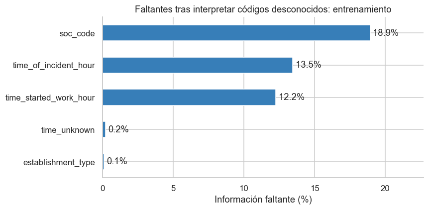
| state | naics_code | establishment_type | soc_code | type_of_incident | time_unknown | time_started_work_hour | time_of_incident_hour | |
|---|---|---|---|---|---|---|---|---|
| Resultado | ||||||||
| Fallecimiento (Death) | 0.000 | 0.000 | 0.000 | 15.942 | 0.000 | 0.000 | 13.043 | 13.043 |
| Días de ausencia | 0.000 | 0.000 | 0.067 | 17.746 | 0.000 | 0.206 | 12.964 | 16.201 |
| Traslado / restricción | 0.000 | 0.000 | 0.114 | 18.659 | 0.000 | 0.162 | 10.099 | 9.747 |
| Otro caso registrable | 0.000 | 0.000 | 0.166 | 20.486 | 0.000 | 0.242 | 13.367 | 13.718 |
Los mayores porcentajes de información no utilizable son: soc_code: 18.93 %; time_of_incident_hour: 13.46 %; time_started_work_hour: 12.25 %. Se conserva una categoría explícita de desconocido; no se eliminan casos por faltantes de predictores.
Los faltantes pueden reflejar prácticas de reporte. Las asociaciones observadas no prueban MCAR, MAR o MNAR; el tratamiento se justifica con los resultados de desarrollo mostrados arriba.
5.1 Análisis unidimensional formal de los predictores#
Se resume cada predictor según su naturaleza. Los códigos NAICS, SOC, estado, tipo de establecimiento, tipo de incidente y time_unknown son categóricos, aunque algunos se almacenen como números. Las dos variables horarias se analizan como horas discretas de un ciclo de 24 horas; por esta razón, media, asimetría y normalidad tienen una interpretación limitada y no deben tratarse como si la hora 23 estuviera lejos de la hora 0.
Para las variables categóricas se reportan cardinalidad, categoría dominante y categorías raras (<1 %). Para las horas se muestran distribución y boxplot únicamente como descripción; no se eliminan valores por IQR porque 0–23 es el rango válido del reloj.
# Resumen unidimensional compacto de los ocho predictores
categorical_predictors = baseline['features'][:6]
hour_predictors = baseline['features'][6:]
univariate_rows = []
for c in categorical_predictors:
s = feature_view[c].astype('object').fillna('Desconocido')
counts = s.value_counts(dropna=False)
rare_mask = (counts / len(s)) < 0.01
univariate_rows.append({
'Variable': c,
'Tipo': 'Categórica',
'Cardinalidad': int(s.nunique(dropna=False)),
'Faltantes (%)': 100 * feature_view[c].isna().mean(),
'Categoría más frecuente': str(counts.index[0]),
'Frecuencia máxima (%)': 100 * counts.iloc[0] / len(s),
'Categorías < 1 %': int(rare_mask.sum()),
'Casos en categorías < 1 % (%)': 100 * counts.loc[rare_mask].sum() / len(s)
})
for c in hour_predictors:
s = pd.to_numeric(feature_view[c], errors='coerce')
counts = s.value_counts(dropna=True)
univariate_rows.append({
'Variable': c,
'Tipo': 'Hora discreta (0–23)',
'Cardinalidad': int(s.nunique(dropna=True)),
'Faltantes (%)': 100 * s.isna().mean(),
'Categoría más frecuente': str(counts.index[0]) if len(counts) else 'NA',
'Frecuencia máxima (%)': 100 * counts.iloc[0] / len(s) if len(counts) else np.nan,
'Categorías < 1 %': np.nan,
'Casos en categorías < 1 % (%)': np.nan
})
display(pd.DataFrame(univariate_rows))
fig, axes = plt.subplots(3, 2, figsize=(14, 14))
for ax, c in zip(axes.flat, categorical_predictors):
s = feature_view[c].astype('object').fillna('Desconocido')
counts = s.value_counts().head(10).iloc[::-1]
counts.plot.barh(ax=ax)
ax.set(title=f'{c}: 10 categorías más frecuentes',
xlabel='Casos de entrenamiento', ylabel='')
plt.tight_layout()
plt.show()
fig, axes = plt.subplots(2, 2, figsize=(12, 7))
for j, c in enumerate(hour_predictors):
s = pd.to_numeric(feature_view[c], errors='coerce').dropna()
axes[j, 0].hist(s, bins=np.arange(-0.5, 24.5, 1))
axes[j, 0].set(title=f'Distribución de {c}', xlabel='Hora', ylabel='Casos',
xticks=range(0, 24, 3))
axes[j, 1].boxplot(s, vert=False)
axes[j, 1].set(title=f'Boxplot descriptivo de {c}', xlabel='Hora',
xticks=range(0, 24, 3))
plt.tight_layout()
plt.show()
display(Markdown('Industria y ocupación son códigos nominales de alta cardinalidad. Se codifican con one-hot; sus números no se interpretan como magnitudes. Las horas se representan como categorías para evitar una relación lineal impuesta entre hora y resultado. Los boxplots son descriptivos: valores horarios válidos no se eliminan por IQR.'))
| Variable | Tipo | Cardinalidad | Faltantes (%) | Categoría más frecuente | Frecuencia máxima (%) | Categorías < 1 % | Casos en categorías < 1 % (%) | |
|---|---|---|---|---|---|---|---|---|
| 0 | state | Categórica | 55 | 0.000 | CA | 13.305 | 26.000 | 10.916 |
| 1 | naics_code | Categórica | 715 | 0.000 | 622110 | 16.720 | 700.000 | 39.038 |
| 2 | establishment_type | Categórica | 5 | 0.114 | 1 | 93.704 | 2.000 | 0.204 |
| 3 | soc_code | Categórica | 599 | 18.930 | Desconocido | 18.930 | 582.000 | 36.652 |
| 4 | type_of_incident | Categórica | 6 | 0.000 | 1 | 89.673 | 2.000 | 0.629 |
| 5 | time_unknown | Categórica | 3 | 0.205 | 0 | 86.517 | 1.000 | 0.205 |
| 6 | time_started_work_hour | Hora discreta (0–23) | 24 | 12.250 | 7.0 | 15.907 | NaN | NaN |
| 7 | time_of_incident_hour | Hora discreta (0–23) | 24 | 13.460 | 10.0 | 6.567 | NaN | NaN |
C:\Users\Usuario\AppData\Local\Temp\ipykernel_47692\3774106759.py:104: UserWarning: The figure layout has changed to tight
figure.tight_layout()
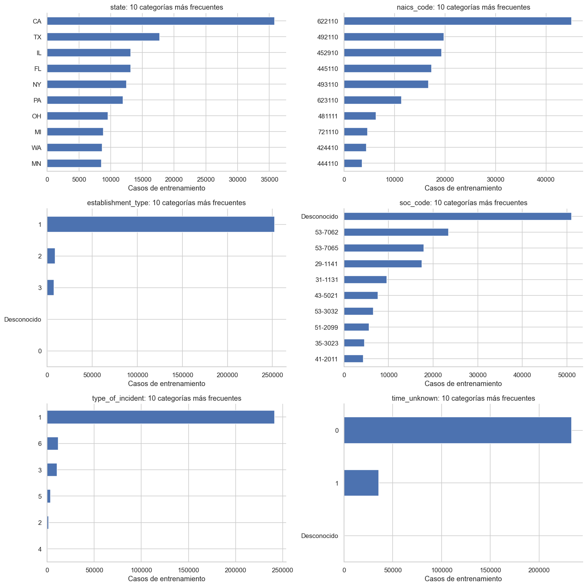
C:\Users\Usuario\AppData\Local\Temp\ipykernel_47692\3774106759.py:104: UserWarning: The figure layout has changed to tight
figure.tight_layout()
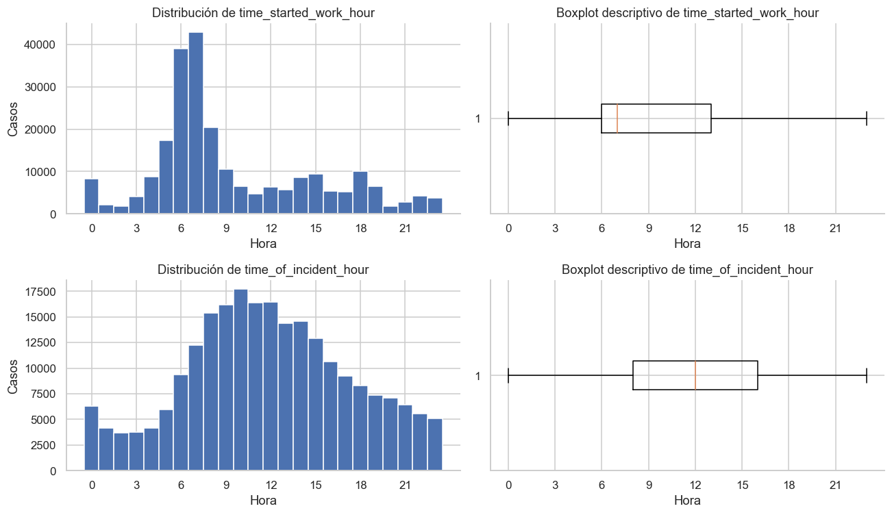
Industria y ocupación son códigos nominales de alta cardinalidad. Se codifican con one-hot; sus números no se interpretan como magnitudes. Las horas se representan como categorías para evitar una relación lineal impuesta entre hora y resultado. Los boxplots son descriptivos: valores horarios válidos no se eliminan por IQR.
5.1.1 Momentos, normalidad, valores atípicos y categorías raras#
Para las dos horas se reportan media, mediana, desviación estándar, percentiles, asimetría y curtosis, junto con la prueba de D’Agostino–Pearson (muestra completa) y Shapiro–Wilk (submuestra aleatoria de 5.000 casos, límite práctico de la prueba). Con cientos de miles de filas cualquier desviación mínima rechaza la normalidad, así que la prueba confirma formalmente lo que muestran los histogramas; no es un criterio de decisión. Como la hora es cíclica, se añade la media circular y la longitud resultante R (0 = horas repartidas uniformemente en el reloj; 1 = todas iguales). Los límites IQR solo documentan cuántos valores marcaría la regla de Tukey; no se eliminan porque 0–23 es el rango válido.
Para NAICS, SOC y estado se cuantifican las categorías raras (menos de 30 y de 10 casos de desarrollo) y se justifica su tratamiento.
from scipy import stats
moment_rows = []
for c in hour_predictors:
s = pd.to_numeric(feature_view[c], errors='coerce').dropna()
q1, q3 = s.quantile([.25, .75])
lower, upper = q1 - 1.5*(q3-q1), q3 + 1.5*(q3-q1)
k2, p_k2 = stats.normaltest(s)
w, p_w = stats.shapiro(s.sample(5000, random_state=42))
angle = 2*np.pi*s/24
C, S = np.cos(angle).mean(), np.sin(angle).mean()
moment_rows.append({'Variable': c, 'Media': s.mean(), 'Mediana': s.median(), 'Desviación estándar': s.std(),
'P5': s.quantile(.05), 'P25': q1, 'P75': q3, 'P95': s.quantile(.95),
'Asimetría': stats.skew(s), 'Curtosis (exceso)': stats.kurtosis(s),
"D'Agostino K²": k2, "p D'Agostino": p_k2, 'Shapiro W (n = 5.000)': w, 'p Shapiro': p_w,
'Límite inferior IQR': lower, 'Límite superior IQR': upper,
'Casos fuera de IQR': int(((s < lower) | (s > upper)).sum()),
'Media circular (hora)': (np.degrees(np.arctan2(S, C)) % 360)/15,
'Longitud resultante R': np.hypot(C, S)})
moments = pd.DataFrame(moment_rows).set_index('Variable')
display(moments.T)
rare_rows = []
for c in ['state', 'naics_code', 'soc_code']:
counts = feature_view[c].astype(object).value_counts()
rare_rows.append({'Variable': c, 'Categorías observadas': len(counts),
'Categorías con < 30 casos': int(counts.lt(30).sum()),
'Categorías con < 10 casos': int(counts.lt(10).sum()),
'Casos en categorías con < 30': int(counts[counts.lt(30)].sum()),
'% de casos en categorías con < 30': 100*counts[counts.lt(30)].sum()/len(feature_view)})
rare_table = pd.DataFrame(rare_rows)
display(rare_table)
start, incident = moments.loc['time_started_work_hour'], moments.loc['time_of_incident_hour']
naics_rare, soc_rare = rare_table.set_index('Variable').loc['naics_code'], rare_table.set_index('Variable').loc['soc_code']
display(Markdown(
f"**Interpretación.** La hora de inicio es asimétrica a la derecha (asimetría **{start['Asimetría']:.2f}**; mediana {start['Mediana']:.0f} h, concentrada en turnos de mañana) "
f"y la hora del incidente es casi simétrica (asimetría **{incident['Asimetría']:.2f}**, curtosis {incident['Curtosis (exceso)']:.2f}). Ambas pruebas de normalidad rechazan con p ≈ 0, lo esperado con este tamaño de muestra y con una variable discreta y acotada; por eso no se aplican transformaciones de normalización. "
f"La longitud resultante (R = {start['Longitud resultante R']:.2f} y {incident['Longitud resultante R']:.2f}) indica que las horas no están concentradas en un único punto del reloj. "
f"La regla IQR marca {int(start['Casos fuera de IQR']):,} y {int(incident['Casos fuera de IQR']):,} casos: con un rango acotado 0–23 las horas nocturnas no aparecen como atípicas univariadas, y no hay valores fuera del reloj. "
f"En categorías raras, **{int(naics_rare['Categorías con < 30 casos'])} códigos NAICS** y **{int(soc_rare['Categorías con < 30 casos'])} códigos SOC** tienen menos de 30 casos "
f"({naics_rare['% de casos en categorías con < 30']:.1f} % y {soc_rare['% de casos en categorías con < 30']:.1f} % de los casos). "
"**Tratamiento:** se mantienen como columnas one-hot porque la regularización L2 de la regresión logística contrae los coeficientes con poco soporte y `handle_unknown='ignore'` evita errores con códigos nuevos en la prueba. "
"Agruparlas (por frecuencia o por la jerarquía NAICS/SOC) es una variante razonable que se evaluará solo con validación interna en el siguiente entregable, sin cambiar el modelo base ya fijado."))
| Variable | time_started_work_hour | time_of_incident_hour |
|---|---|---|
| Media | 9.375 | 11.793 |
| Mediana | 7.000 | 12.000 |
| Desviación estándar | 5.412 | 5.539 |
| P5 | 2.000 | 2.000 |
| P25 | 6.000 | 8.000 |
| P75 | 13.000 | 16.000 |
| P95 | 20.000 | 21.000 |
| Asimetría | 0.773 | -0.013 |
| Curtosis (exceso) | -0.173 | -0.504 |
| D'Agostino K² | 19,041.327 | 4,586.452 |
| p D'Agostino | 0.000 | 0.000 |
| Shapiro W (n = 5.000) | 0.915 | 0.986 |
| p Shapiro | 0.000 | 0.000 |
| Límite inferior IQR | -4.500 | -4.000 |
| Límite superior IQR | 23.500 | 28.000 |
| Casos fuera de IQR | 0.000 | 0.000 |
| Media circular (hora) | 7.306 | 11.717 |
| Longitud resultante R | 0.420 | 0.316 |
| Variable | Categorías observadas | Categorías con < 30 casos | Categorías con < 10 casos | Casos en categorías con < 30 | % de casos en categorías con < 30 | |
|---|---|---|---|---|---|---|
| 0 | state | 55 | 2 | 1 | 15 | 0.006 |
| 1 | naics_code | 715 | 354 | 220 | 3179 | 1.180 |
| 2 | soc_code | 598 | 309 | 207 | 2529 | 0.938 |
Interpretación. La hora de inicio es asimétrica a la derecha (asimetría 0.77; mediana 7 h, concentrada en turnos de mañana) y la hora del incidente es casi simétrica (asimetría -0.01, curtosis -0.50). Ambas pruebas de normalidad rechazan con p ≈ 0, lo esperado con este tamaño de muestra y con una variable discreta y acotada; por eso no se aplican transformaciones de normalización. La longitud resultante (R = 0.42 y 0.32) indica que las horas no están concentradas en un único punto del reloj. La regla IQR marca 0 y 0 casos: con un rango acotado 0–23 las horas nocturnas no aparecen como atípicas univariadas, y no hay valores fuera del reloj. En categorías raras, 354 códigos NAICS y 309 códigos SOC tienen menos de 30 casos (1.2 % y 0.9 % de los casos). Tratamiento: se mantienen como columnas one-hot porque la regularización L2 de la regresión logística contrae los coeficientes con poco soporte y handle_unknown='ignore' evita errores con códigos nuevos en la prueba. Agruparlas (por frecuencia o por la jerarquía NAICS/SOC) es una variante razonable que se evaluará solo con validación interna en el siguiente entregable, sin cambiar el modelo base ya fijado.
5.2 Patrón y mecanismo de valores faltantes#
El enunciado solicita distinguir MCAR, MAR y MNAR. Con estos datos observacionales no es posible demostrar el mecanismo de ausencia solo a partir del CSV. Sin embargo, se puede evaluar si la ausencia se relaciona con variables observadas.
La matriz siguiente visualiza una muestra aleatoria únicamente para mostrar patrones de ausencia; los porcentajes y cálculos continúan usando todo el entrenamiento. La concentración de faltantes por resultado y por variable contradice una lectura ingenua de “faltantes completamente al azar”. En consecuencia, el proyecto trata la imputación como parte del Pipeline y conserva explícitamente la incertidumbre sobre el mecanismo.
missing_matrix = feature_view.isna()
missing_sample = missing_matrix.sample(n=min(3000, len(missing_matrix)), random_state=42)
fig, ax = plt.subplots(figsize=(12, 4))
sns.heatmap(missing_sample.T, cbar=False, yticklabels=True, xticklabels=False, ax=ax)
ax.set(title='Patrón de valores faltantes: muestra aleatoria del entrenamiento',
xlabel='Casos muestreados', ylabel='Predictor')
plt.tight_layout()
plt.show()
display(
missing_matrix.groupby(train.outcome)
.mean()
.mul(100)
.reindex(OUTCOMES.values())
.rename_axis('Resultado')
)
C:\Users\Usuario\AppData\Local\Temp\ipykernel_47692\3774106759.py:104: UserWarning: The figure layout has changed to tight
figure.tight_layout()
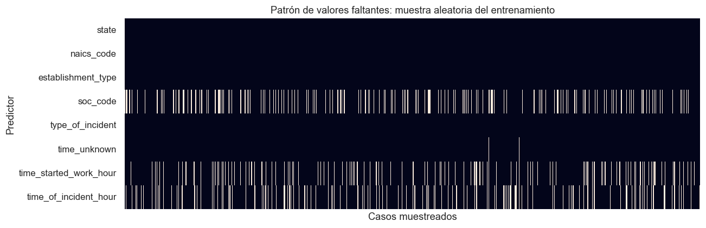
| state | naics_code | establishment_type | soc_code | type_of_incident | time_unknown | time_started_work_hour | time_of_incident_hour | |
|---|---|---|---|---|---|---|---|---|
| Resultado | ||||||||
| Fallecimiento (Death) | 0.000 | 0.000 | 0.000 | 15.942 | 0.000 | 0.000 | 13.043 | 13.043 |
| Días de ausencia | 0.000 | 0.000 | 0.067 | 17.746 | 0.000 | 0.206 | 12.964 | 16.201 |
| Traslado / restricción | 0.000 | 0.000 | 0.114 | 18.659 | 0.000 | 0.162 | 10.099 | 9.747 |
| Otro caso registrable | 0.000 | 0.000 | 0.166 | 20.486 | 0.000 | 0.242 | 13.367 | 13.718 |
5.2.1 Evidencia sobre el mecanismo: registros completos frente a incompletos#
La prueba de Little supone variables continuas aproximadamente normales, así que no sirve para códigos nominales de alta cardinalidad como NAICS o SOC. Se usa la alternativa que admite el enunciado: comparar la distribución de variables observadas entre registros completos e incompletos. Si los faltantes fueran MCAR, el indicador de ausencia sería independiente de sector, estado, tipo de establecimiento, tipo de incidente y resultado (V de Cramér ≈ 0), y dentro de cada establecimiento la ausencia seguiría un proceso binomial con la tasa global. Ambas hipótesis se contrastan a continuación. Los p-valores se corrigen con Holm; la magnitud (V) es la medida principal.
from statsmodels.stats.multitest import multipletests
def cramers_v_bias_corrected(x, y):
# V de Cramér con corrección de sesgo de Bergsma (2013); se reutiliza en 8.1.
table = pd.crosstab(pd.Series(x, copy=False).fillna('Desconocido').astype(str),
pd.Series(y, copy=False).astype(str))
chi2, p, dof, _ = chi2_contingency(table, correction=False)
n = table.to_numpy().sum()
r, k = table.shape
phi2corr = max(0.0, chi2/n - ((k-1)*(r-1))/(n-1))
rcorr, kcorr = r - ((r-1)**2)/(n-1), k - ((k-1)**2)/(n-1)
denom = min(kcorr-1, rcorr-1)
return (float(np.sqrt(phi2corr/denom)) if denom > 0 else 0.0), float(p), int(dof)
from scipy.stats import chi2_contingency
missing_flags = {'soc_code': feature_view.soc_code.isna(),
'time_of_incident_hour': feature_view.time_of_incident_hour.isna(),
'time_started_work_hour': feature_view.time_started_work_hour.isna()}
observed_context = {'Resultado': train.outcome, 'Sector industrial': train.industry_sector, 'Estado': train.state,
'Tipo de establecimiento': train.establishment_type_label, 'Tipo de incidente': train.incident_type}
mechanism_rows = []
for flag_name, flag in missing_flags.items():
for context_name, context in observed_context.items():
v, p, dof = cramers_v_bias_corrected(context, flag.map({True: 'Faltante', False: 'Observado'}))
mechanism_rows.append({'Faltante en': flag_name, 'Variable observada': context_name, 'V de Cramér': v, 'p χ²': p})
mechanism = pd.DataFrame(mechanism_rows)
mechanism['p Holm'] = multipletests(mechanism['p χ²'], method='holm')[1]
display(mechanism.assign(**{'p χ²': mechanism['p χ²'].map('{:.2e}'.format), 'p Holm': mechanism['p Holm'].map('{:.2e}'.format)}))
fig, axes = plt.subplots(1, 2, figsize=(15, 4.5))
sns.heatmap(mechanism.pivot(index='Variable observada', columns='Faltante en', values='V de Cramér'),
annot=True, fmt='.3f', cmap='Blues', vmin=0, ax=axes[0])
axes[0].set(title='Asociación entre ausencia y variables observadas (V de Cramér)', xlabel='', ylabel='')
soc_by_sector = feature_view.soc_code.isna().groupby(train.industry_sector).agg(['mean', 'size'])
soc_by_sector = soc_by_sector[soc_by_sector['size'].ge(1000)].sort_values('mean')
axes[1].barh(soc_by_sector.index, 100*soc_by_sector['mean'], color='#377eb8')
axes[1].axvline(100*feature_view.soc_code.isna().mean(), color='#b2182b', linestyle='--', label='Tasa global')
axes[1].set(title='SOC sin codificar por sector (≥1.000 casos)', xlabel='Casos con SOC faltante (%)', ylabel='')
axes[1].legend()
plt.tight_layout(); plt.show()
# Agrupamiento por establecimiento: tasa observada frente a una simulación binomial bajo MCAR.
soc_missing_rate = feature_view.soc_code.isna().mean()
by_establishment = (pd.DataFrame({'g': train[GROUP].to_numpy(), 'm': feature_view.soc_code.isna().to_numpy()})
.groupby('g').m.agg(['mean', 'size']))
by_establishment = by_establishment[by_establishment['size'].ge(5)]
simulated = np.random.default_rng(42).binomial(by_establishment['size'].to_numpy(), soc_missing_rate) / by_establishment['size'].to_numpy()
clustering = pd.DataFrame({
'Observado': [by_establishment['mean'].eq(0).mean()*100, by_establishment['mean'].eq(1).mean()*100, by_establishment['mean'].std()],
'Esperado bajo MCAR (simulación)': [(simulated == 0).mean()*100, (simulated == 1).mean()*100, simulated.std()]},
index=['% establecimientos sin ningún SOC faltante', '% establecimientos con todos los SOC faltantes',
'Desviación estándar de la tasa por establecimiento'])
display(clustering)
fig, ax = plt.subplots(figsize=(9, 4))
bins = np.linspace(0, 1, 21)
ax.hist(by_establishment['mean'], bins=bins, alpha=.6, label='Observado')
ax.hist(simulated, bins=bins, alpha=.6, label='Simulado bajo MCAR')
ax.set(title=f'Tasa de SOC faltante por establecimiento ({len(by_establishment):,} establecimientos con ≥5 casos)',
xlabel='Proporción de casos con SOC faltante', ylabel='Establecimientos')
ax.legend(); plt.tight_layout(); plt.show()
structural = (train.time_unknown.eq('1') & feature_view.time_of_incident_hour.isna()).sum() / feature_view.time_of_incident_hour.isna().sum()
top_soc = mechanism[mechanism['Faltante en'].eq('soc_code')].sort_values('V de Cramér', ascending=False).iloc[0]
display(Markdown(
f"**Interpretación.** La ausencia de SOC se asocia sobre todo con **{top_soc['Variable observada'].lower()}** (V = {top_soc['V de Cramér']:.3f}) y se concentra por establecimiento: "
f"el {clustering.loc['% establecimientos sin ningún SOC faltante', 'Observado']:.1f} % de los establecimientos con ≥5 casos no tiene ningún SOC faltante (esperado bajo MCAR: {clustering.loc['% establecimientos sin ningún SOC faltante', 'Esperado bajo MCAR (simulación)']:.1f} %), "
f"el {clustering.loc['% establecimientos con todos los SOC faltantes', 'Observado']:.1f} % los tiene todos faltantes (esperado: {clustering.loc['% establecimientos con todos los SOC faltantes', 'Esperado bajo MCAR (simulación)']:.1f} %) "
f"y la dispersión entre establecimientos casi duplica la esperada ({clustering.loc['Desviación estándar de la tasa por establecimiento', 'Observado']:.3f} frente a {clustering.loc['Desviación estándar de la tasa por establecimiento', 'Esperado bajo MCAR (simulación)']:.3f}). Esto **descarta MCAR**. "
"El patrón es compatible con **MAR condicionado al establecimiento y al sector**: refleja cómo describe cada empleador el puesto (el código SOC lo asigna OSHA a partir de ese texto), no el desenlace. "
f"En la hora del incidente, el {100*structural:.1f} % de los faltantes es estructural: el propio registro declara la hora como desconocida (`time_unknown = 1`). "
"No puede descartarse un componente MNAR (por ejemplo, descripciones vagas en casos más graves), y la asociación con el resultado es pequeña. "
"**Decisión:** no se eliminan filas ni se imputa la moda. La ausencia se codifica como una categoría explícita `Unknown` dentro del Pipeline, así el modelo usa la información de que falta y la imputación se aprende solo con el entrenamiento."))
| Faltante en | Variable observada | V de Cramér | p χ² | p Holm | |
|---|---|---|---|---|---|
| 0 | soc_code | Resultado | 0.029 | 4.05e-51 | 8.10e-51 |
| 1 | soc_code | Sector industrial | 0.166 | 0.00e+00 | 0.00e+00 |
| 2 | soc_code | Estado | 0.077 | 0.00e+00 | 0.00e+00 |
| 3 | soc_code | Tipo de establecimiento | 0.024 | 4.70e-35 | 4.70e-35 |
| 4 | soc_code | Tipo de incidente | 0.066 | 1.53e-251 | 6.11e-251 |
| 5 | time_of_incident_hour | Resultado | 0.077 | 0.00e+00 | 0.00e+00 |
| 6 | time_of_incident_hour | Sector industrial | 0.197 | 0.00e+00 | 0.00e+00 |
| 7 | time_of_incident_hour | Estado | 0.129 | 0.00e+00 | 0.00e+00 |
| 8 | time_of_incident_hour | Tipo de establecimiento | 0.072 | 4.50e-307 | 2.25e-306 |
| 9 | time_of_incident_hour | Tipo de incidente | 0.334 | 0.00e+00 | 0.00e+00 |
| 10 | time_started_work_hour | Resultado | 0.043 | 4.97e-107 | 1.49e-106 |
| 11 | time_started_work_hour | Sector industrial | 0.218 | 0.00e+00 | 0.00e+00 |
| 12 | time_started_work_hour | Estado | 0.137 | 0.00e+00 | 0.00e+00 |
| 13 | time_started_work_hour | Tipo de establecimiento | 0.076 | 0.00e+00 | 0.00e+00 |
| 14 | time_started_work_hour | Tipo de incidente | 0.140 | 0.00e+00 | 0.00e+00 |
C:\Users\Usuario\AppData\Local\Temp\ipykernel_47692\3774106759.py:104: UserWarning: The figure layout has changed to tight
figure.tight_layout()
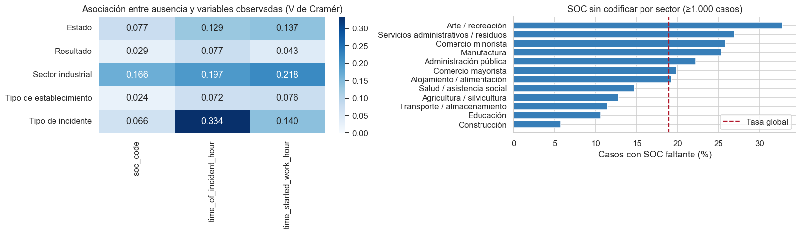
| Observado | Esperado bajo MCAR (simulación) | |
|---|---|---|
| % establecimientos sin ningún SOC faltante | 38.882 | 16.207 |
| % establecimientos con todos los SOC faltantes | 1.334 | 0.000 |
| Desviación estándar de la tasa por establecimiento | 0.239 | 0.133 |
C:\Users\Usuario\AppData\Local\Temp\ipykernel_47692\3774106759.py:104: UserWarning: The figure layout has changed to tight
figure.tight_layout()
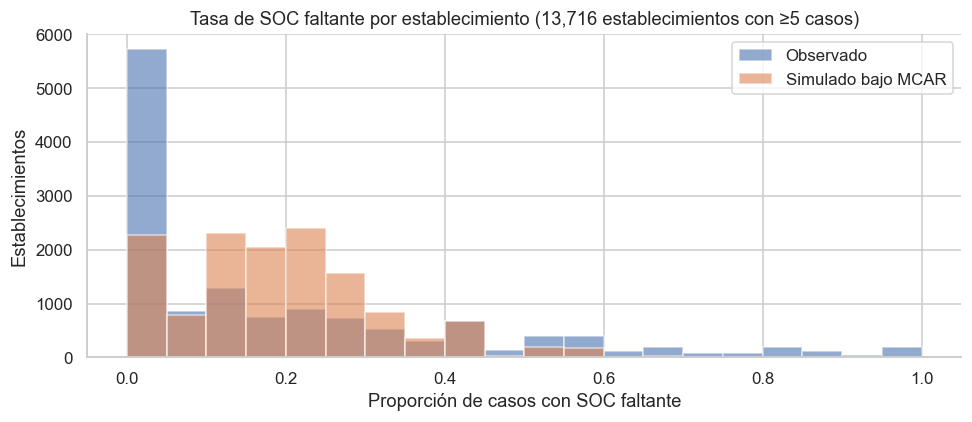
Interpretación. La ausencia de SOC se asocia sobre todo con sector industrial (V = 0.166) y se concentra por establecimiento: el 38.9 % de los establecimientos con ≥5 casos no tiene ningún SOC faltante (esperado bajo MCAR: 16.2 %), el 1.3 % los tiene todos faltantes (esperado: 0.0 %) y la dispersión entre establecimientos casi duplica la esperada (0.239 frente a 0.133). Esto descarta MCAR. El patrón es compatible con MAR condicionado al establecimiento y al sector: refleja cómo describe cada empleador el puesto (el código SOC lo asigna OSHA a partir de ese texto), no el desenlace. En la hora del incidente, el 98.6 % de los faltantes es estructural: el propio registro declara la hora como desconocida (time_unknown = 1). No puede descartarse un componente MNAR (por ejemplo, descripciones vagas en casos más graves), y la asociación con el resultado es pequeña. Decisión: no se eliminan filas ni se imputa la moda. La ausencia se codifica como una categoría explícita Unknown dentro del Pipeline, así el modelo usa la información de que falta y la imputación se aprende solo con el entrenamiento.
6. Distribución del resultado y del tipo de incidente#
def count_table(series):
t = series.fillna('Desconocido').value_counts().rename('cases').to_frame()
t['percent'] = 100*t.cases/len(series)
return t
target_counts = train.outcome.value_counts().reindex(OUTCOMES.values()).rename('cases').to_frame()
target_counts['percent'] = target_counts.cases/len(train)*100
display(target_counts)
fig, ax = plt.subplots(figsize=(9,4))
ax.barh(target_counts.index, target_counts.cases, color=['#b2182b','#377eb8','#4daf4a','#984ea3'])
for i, row in enumerate(target_counts.itertuples()):
ax.text(row.cases+2500, i, f'{row.cases:,} ({row.percent:.3f}%)', va='center')
ax.set(xlabel='Casos reportados', ylabel='', title='Resultado final registrado: entrenamiento', xlim=(0,target_counts.cases.max()*1.34))
ax.invert_yaxis(); plt.tight_layout(); plt.show()
display(count_table(train.incident_type))
eda.plot_categorical_distributions(train, ['incident_type','establishment_type_label'], max_categories=10)
imbalance = pd.Series({
'Razón clase mayoritaria / minoritaria': target_counts.cases.max() / target_counts.cases.min(),
'Razón mayoritaria / minoritaria sin Death': target_counts.cases.drop(OUTCOMES[1]).max() / target_counts.cases.drop(OUTCOMES[1]).min(),
'Entropía normalizada (1 = balance perfecto)': float(-(target_counts.percent/100 * np.log(target_counts.percent/100)).sum() / np.log(len(target_counts))),
'Casos de la clase minoritaria (Death)': int(target_counts.cases.min()),
}, name='value').to_frame()
display(imbalance)
display(Markdown(f"**Grado de desbalance:** la clase mayoritaria es **{imbalance.iloc[0, 0]:,.0f} veces** la minoritaria; sin Death, las tres clases restantes están casi balanceadas (razón {imbalance.iloc[1, 0]:.2f}). El desbalance es **extremo pero concentrado en una sola clase**: justifica `class_weight='balanced'`, métricas macro y por clase, curvas precisión–sensibilidad y partición estratificada en la validación interna (`StratifiedGroupKFold`)."))
display(Markdown(f'El desarrollo contiene **{int(train[TARGET].eq(1).sum())} fallecimientos** entre **{len(train):,} casos**. Esta rareza exige métricas por clase y precisión–sensibilidad; la exactitud global puede ocultar fallos en Death. No se agrupan resultados para mejorar puntuaciones.'))
| Casos | Porcentaje | |
|---|---|---|
| Resultado | ||
| Fallecimiento (Death) | 69 | 0.026 |
| Días de ausencia | 99697 | 36.991 |
| Traslado / restricción | 79848 | 29.626 |
| Otro caso registrable | 89902 | 33.357 |
C:\Users\Usuario\AppData\Local\Temp\ipykernel_47692\3774106759.py:104: UserWarning: The figure layout has changed to tight
figure.tight_layout()
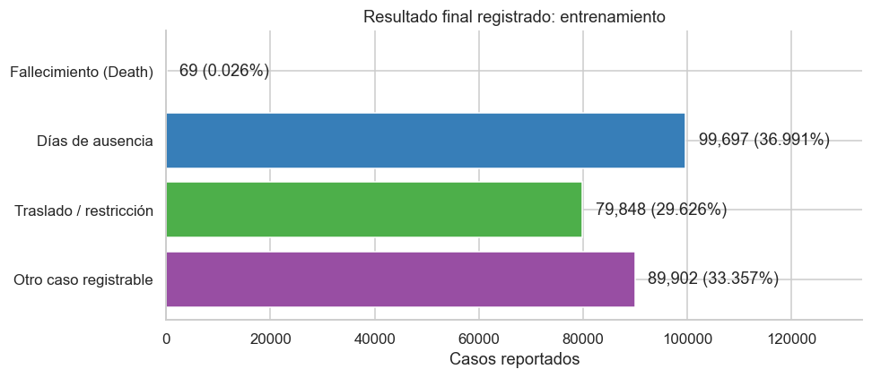
| Casos | Porcentaje | |
|---|---|---|
| incident_type | ||
| Lesión | 241682 | 89.673 |
| Otra enfermedad | 11869 | 4.404 |
| Afección respiratoria | 10497 | 3.895 |
| Pérdida auditiva | 3772 | 1.400 |
| Trastorno cutáneo | 1412 | 0.524 |
| Intoxicación | 284 | 0.105 |
C:\Users\Usuario\miniconda3\envs\ml_venv\lib\site-packages\seaborn\_oldcore.py:1498: FutureWarning: is_categorical_dtype is deprecated and will be removed in a future version. Use isinstance(dtype, CategoricalDtype) instead
if pd.api.types.is_categorical_dtype(vector):
C:\Users\Usuario\miniconda3\envs\ml_venv\lib\site-packages\seaborn\_oldcore.py:1498: FutureWarning: is_categorical_dtype is deprecated and will be removed in a future version. Use isinstance(dtype, CategoricalDtype) instead
if pd.api.types.is_categorical_dtype(vector):
C:\Users\Usuario\AppData\Local\Temp\ipykernel_47692\3774106759.py:104: UserWarning: The figure layout has changed to tight
figure.tight_layout()
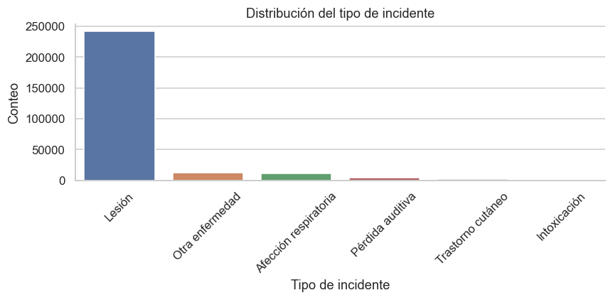
C:\Users\Usuario\miniconda3\envs\ml_venv\lib\site-packages\seaborn\_oldcore.py:1498: FutureWarning: is_categorical_dtype is deprecated and will be removed in a future version. Use isinstance(dtype, CategoricalDtype) instead
if pd.api.types.is_categorical_dtype(vector):
C:\Users\Usuario\miniconda3\envs\ml_venv\lib\site-packages\seaborn\_oldcore.py:1498: FutureWarning: is_categorical_dtype is deprecated and will be removed in a future version. Use isinstance(dtype, CategoricalDtype) instead
if pd.api.types.is_categorical_dtype(vector):
C:\Users\Usuario\AppData\Local\Temp\ipykernel_47692\3774106759.py:104: UserWarning: The figure layout has changed to tight
figure.tight_layout()
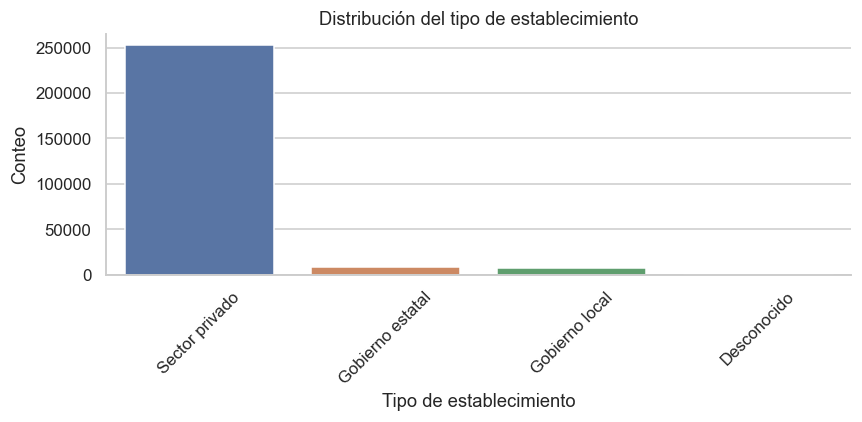
| Valor | |
|---|---|
| Razón clase mayoritaria / minoritaria | 1,444.884 |
| Razón mayoritaria / minoritaria sin Death | 1.249 |
| Entropía normalizada (1 = balance perfecto) | 0.791 |
| Casos de la clase minoritaria (Death) | 69.000 |
Grado de desbalance: la clase mayoritaria es 1,445 veces la minoritaria; sin Death, las tres clases restantes están casi balanceadas (razón 1.25). El desbalance es extremo pero concentrado en una sola clase: justifica class_weight='balanced', métricas macro y por clase, curvas precisión–sensibilidad y partición estratificada en la validación interna (StratifiedGroupKFold).
El desarrollo contiene 69 fallecimientos entre 269,516 casos. Esta rareza exige métricas por clase y precisión–sensibilidad; la exactitud global puede ocultar fallos en Death. No se agrupan resultados para mejorar puntuaciones.
Death es una clase pequeña y sustantivamente distinta. La exactitud global puede ocultar un desempeño deficiente en ella. La exactitud balanceada (promedio de sensibilidad por clase), F1 macro y las métricas por clase deben complementar la exactitud. No se interpretan los códigos como una escala de gravedad de cuatro puntos ni se agrupan clases para mejorar las puntuaciones.
7. Industria, ocupación y distribución geográfica#
def top_categories(series, title, n=10):
table = count_table(series)
display(table.head(n))
shown = table.head(n).iloc[::-1]
fig, ax = plt.subplots(figsize=(10,5))
shown.cases.plot.barh(ax=ax, color='#377eb8')
ax.set(title=title, xlabel='Casos reportados', ylabel='')
plt.tight_layout(); plt.show()
return table
industry_counts = top_categories(train.industry_sector, 'Sectores industriales principales: entrenamiento')
occupation_counts = top_categories(train.soc_description, 'Ocupaciones principales, incluidos casos sin codificar: entrenamiento')
state_counts = count_table(train.state)
display(state_counts.head(10))
print('Códigos NAICS distintos:', train.naics_code.nunique(), '| ocupaciones codificadas:', train.soc_code.nunique(), '| códigos de estado/territorio:', train.state.nunique())
print('Filas sin sector industrial reconocido:', int(train.industry_sector.eq('Código sin correspondencia').sum()))
| Casos | Porcentaje | |
|---|---|---|
| industry_sector | ||
| Salud / asistencia social | 70802 | 26.270 |
| Transporte / almacenamiento | 57429 | 21.308 |
| Comercio minorista | 50979 | 18.915 |
| Manufactura | 49857 | 18.499 |
| Comercio mayorista | 11749 | 4.359 |
| Alojamiento / alimentación | 6709 | 2.489 |
| Administración pública | 4436 | 1.646 |
| Arte / recreación | 4382 | 1.626 |
| Agricultura / silvicultura | 3906 | 1.449 |
| Construcción | 3183 | 1.181 |
C:\Users\Usuario\AppData\Local\Temp\ipykernel_47692\3774106759.py:104: UserWarning: The figure layout has changed to tight
figure.tight_layout()
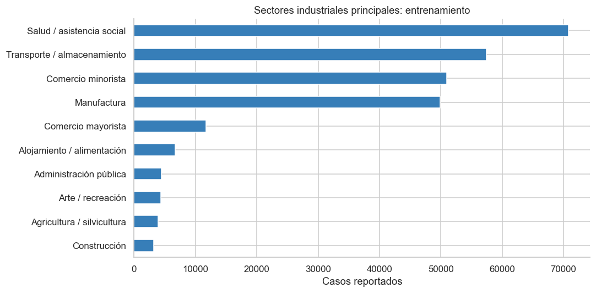
| Casos | Porcentaje | |
|---|---|---|
| soc_description | ||
| Sin codificar | 51019 | 18.930 |
| Trabajadores de carga y movimiento manual de materiales | 23444 | 8.699 |
| Reponedores y preparadores de pedidos | 17915 | 6.647 |
| Profesionales de enfermería | 17451 | 6.475 |
| Auxiliares de enfermería | 9579 | 3.554 |
| Mensajeros | 7659 | 2.842 |
| Conductores de camiones pesados y tractocamiones | 6621 | 2.457 |
| Otros ensambladores y fabricantes | 5949 | 2.207 |
| Trabajadores de comida rápida y mostrador | 4627 | 1.717 |
| Cajeros | 4301 | 1.596 |
C:\Users\Usuario\AppData\Local\Temp\ipykernel_47692\3774106759.py:104: UserWarning: The figure layout has changed to tight
figure.tight_layout()
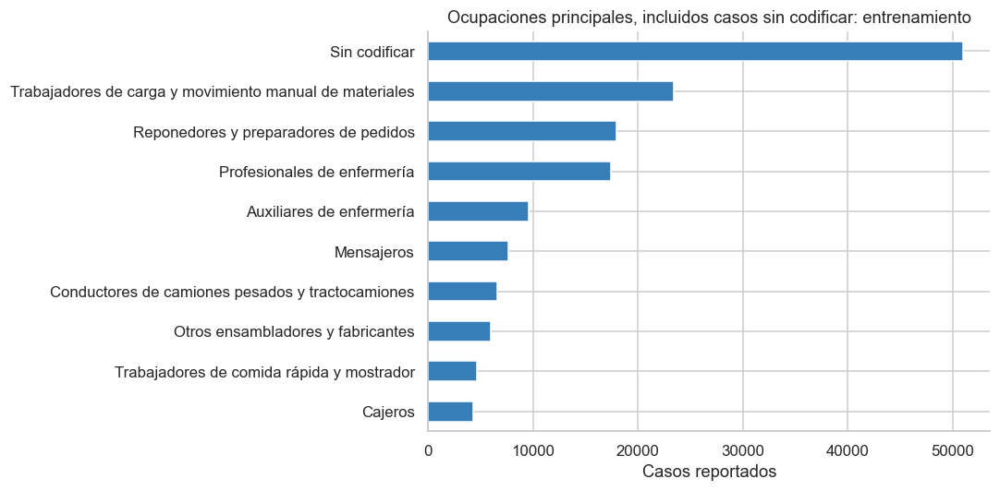
| Casos | Porcentaje | |
|---|---|---|
| state | ||
| CA | 35858 | 13.305 |
| TX | 17717 | 6.574 |
| IL | 13177 | 4.889 |
| FL | 13145 | 4.877 |
| NY | 12483 | 4.632 |
| PA | 11955 | 4.436 |
| OH | 9592 | 3.559 |
| MI | 8858 | 3.287 |
| WA | 8693 | 3.225 |
| MN | 8559 | 3.176 |
Códigos NAICS distintos: 715 | ocupaciones codificadas: 598 | códigos de estado/territorio: 55
Filas sin sector industrial reconocido: 45
Se muestran proporciones de casos reportados, no tasas de lesiones ni clasificaciones de riesgo industrial. El tamaño del establecimiento, las horas de exposición, los criterios de cobertura y las prácticas de reporte afectan los conteos. Industria y ocupación están relacionadas y pueden aportar información redundante. Las versiones de los códigos y los valores no reconocidos requieren una auditoría posterior del diccionario; no se les asigna un significado supuesto.
8. Relaciones entre predictores y resultado multiclase#
def outcome_comparison(column, title, levels=None):
levels = levels if levels is not None else train[column].fillna('Desconocido').value_counts().head(10).index
counts = pd.crosstab(train[column].fillna('Desconocido'), train[TARGET]).reindex(index=levels, columns=list(OUTCOMES), fill_value=0)
proportions = counts.div(counts.sum(axis=1),axis=0)*100
proportions.columns = [OUTCOMES[c] for c in proportions.columns]
display(counts.rename(columns=OUTCOMES).assign(total_cases=counts.sum(axis=1)))
display(proportions)
fig, ax = plt.subplots(figsize=(9,max(3,len(levels)*0.45)))
sns.heatmap(proportions, annot=True, fmt='.1f', cmap='Blues', vmin=0, vmax=100, ax=ax, cbar_kws={'label':'Resultado dentro del grupo (%)'})
ax.set(title=title, xlabel='', ylabel='')
plt.xticks(rotation=20, ha='right'); plt.tight_layout(); plt.show()
return proportions
industry_outcomes = outcome_comparison('industry_sector', 'Composición del resultado por sector industrial: entrenamiento')
incident_outcomes = outcome_comparison('incident_type', 'Composición del resultado por tipo de incidente: entrenamiento', list(INCIDENTS.values()))
occupation_outcomes = outcome_comparison('soc_description', 'Composición del resultado por ocupación: entrenamiento', occupation_counts.head(8).index)
display(Markdown('Las composiciones mostradas utilizan casos reportados dentro de cada grupo. Las diferencias pueden reflejar mezcla ocupacional, diagnósticos y prácticas de reporte. Sin trabajadores u horas expuestos como denominador, no son probabilidades de lesión.'))
| incident_outcome | Fallecimiento (Death) | Días de ausencia | Traslado / restricción | Otro caso registrable | Total de casos |
|---|---|---|---|---|---|
| industry_sector | |||||
| Salud / asistencia social | 2 | 25373 | 12400 | 33027 | 70802 |
| Transporte / almacenamiento | 13 | 25875 | 22986 | 8555 | 57429 |
| Comercio minorista | 3 | 18569 | 12353 | 20054 | 50979 |
| Manufactura | 23 | 14784 | 18613 | 16437 | 49857 |
| Comercio mayorista | 5 | 4812 | 4714 | 2218 | 11749 |
| Alojamiento / alimentación | 4 | 2604 | 2074 | 2027 | 6709 |
| Administración pública | 3 | 1743 | 790 | 1900 | 4436 |
| Arte / recreación | 0 | 1249 | 1984 | 1149 | 4382 |
| Agricultura / silvicultura | 4 | 1387 | 1223 | 1292 | 3906 |
| Construcción | 7 | 1149 | 1005 | 1022 | 3183 |
| Fallecimiento (Death) | Días de ausencia | Traslado / restricción | Otro caso registrable | |
|---|---|---|---|---|
| industry_sector | ||||
| Salud / asistencia social | 0.003 | 35.837 | 17.514 | 46.647 |
| Transporte / almacenamiento | 0.023 | 45.056 | 40.025 | 14.897 |
| Comercio minorista | 0.006 | 36.425 | 24.232 | 39.338 |
| Manufactura | 0.046 | 29.653 | 37.333 | 32.968 |
| Comercio mayorista | 0.043 | 40.957 | 40.123 | 18.878 |
| Alojamiento / alimentación | 0.060 | 38.814 | 30.914 | 30.213 |
| Administración pública | 0.068 | 39.292 | 17.809 | 42.831 |
| Arte / recreación | 0.000 | 28.503 | 45.276 | 26.221 |
| Agricultura / silvicultura | 0.102 | 35.509 | 31.311 | 33.077 |
| Construcción | 0.220 | 36.098 | 31.574 | 32.108 |
C:\Users\Usuario\AppData\Local\Temp\ipykernel_47692\3774106759.py:104: UserWarning: The figure layout has changed to tight
figure.tight_layout()
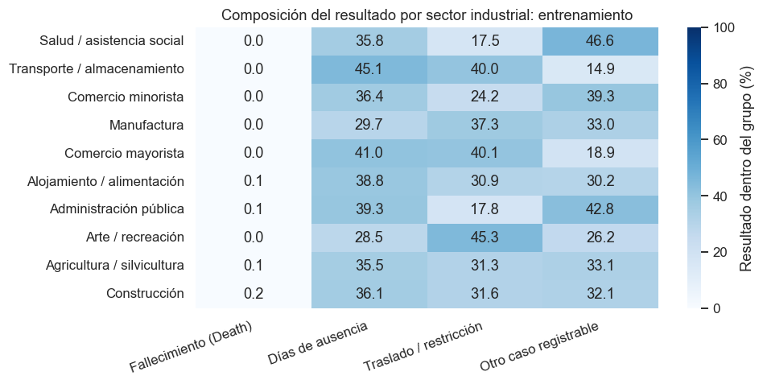
| incident_outcome | Fallecimiento (Death) | Días de ausencia | Traslado / restricción | Otro caso registrable | Total de casos |
|---|---|---|---|---|---|
| incident_type | |||||
| Lesión | 55 | 85122 | 75600 | 80905 | 241682 |
| Trastorno cutáneo | 0 | 585 | 181 | 646 | 1412 |
| Afección respiratoria | 3 | 9636 | 119 | 739 | 10497 |
| Intoxicación | 0 | 86 | 56 | 142 | 284 |
| Pérdida auditiva | 0 | 382 | 342 | 3048 | 3772 |
| Otra enfermedad | 11 | 3886 | 3550 | 4422 | 11869 |
| Fallecimiento (Death) | Días de ausencia | Traslado / restricción | Otro caso registrable | |
|---|---|---|---|---|
| incident_type | ||||
| Lesión | 0.023 | 35.221 | 31.281 | 33.476 |
| Trastorno cutáneo | 0.000 | 41.431 | 12.819 | 45.751 |
| Afección respiratoria | 0.029 | 91.798 | 1.134 | 7.040 |
| Intoxicación | 0.000 | 30.282 | 19.718 | 50.000 |
| Pérdida auditiva | 0.000 | 10.127 | 9.067 | 80.806 |
| Otra enfermedad | 0.093 | 32.741 | 29.910 | 37.257 |
C:\Users\Usuario\AppData\Local\Temp\ipykernel_47692\3774106759.py:104: UserWarning: The figure layout has changed to tight
figure.tight_layout()
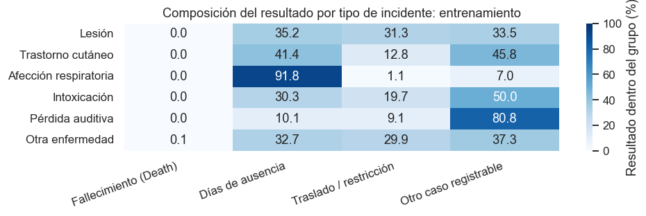
| incident_outcome | Fallecimiento (Death) | Días de ausencia | Traslado / restricción | Otro caso registrable | Total de casos |
|---|---|---|---|---|---|
| soc_description | |||||
| Sin codificar | 11 | 17692 | 14899 | 18417 | 51019 |
| Trabajadores de carga y movimiento manual de materiales | 1 | 9017 | 9785 | 4641 | 23444 |
| Reponedores y preparadores de pedidos | 1 | 5163 | 9191 | 3560 | 17915 |
| Profesionales de enfermería | 0 | 4828 | 2402 | 10221 | 17451 |
| Auxiliares de enfermería | 0 | 4714 | 2436 | 2429 | 9579 |
| Mensajeros | 0 | 4144 | 2141 | 1374 | 7659 |
| Conductores de camiones pesados y tractocamiones | 10 | 3340 | 2009 | 1262 | 6621 |
| Otros ensambladores y fabricantes | 1 | 1962 | 2254 | 1732 | 5949 |
| Fallecimiento (Death) | Días de ausencia | Traslado / restricción | Otro caso registrable | |
|---|---|---|---|---|
| soc_description | ||||
| Sin codificar | 0.022 | 34.677 | 29.203 | 36.098 |
| Trabajadores de carga y movimiento manual de materiales | 0.004 | 38.462 | 41.738 | 19.796 |
| Reponedores y preparadores de pedidos | 0.006 | 28.819 | 51.303 | 19.872 |
| Profesionales de enfermería | 0.000 | 27.666 | 13.764 | 58.570 |
| Auxiliares de enfermería | 0.000 | 49.212 | 25.431 | 25.358 |
| Mensajeros | 0.000 | 54.106 | 27.954 | 17.940 |
| Conductores de camiones pesados y tractocamiones | 0.151 | 50.446 | 30.343 | 19.061 |
| Otros ensambladores y fabricantes | 0.017 | 32.980 | 37.889 | 29.114 |
C:\Users\Usuario\AppData\Local\Temp\ipykernel_47692\3774106759.py:104: UserWarning: The figure layout has changed to tight
figure.tight_layout()
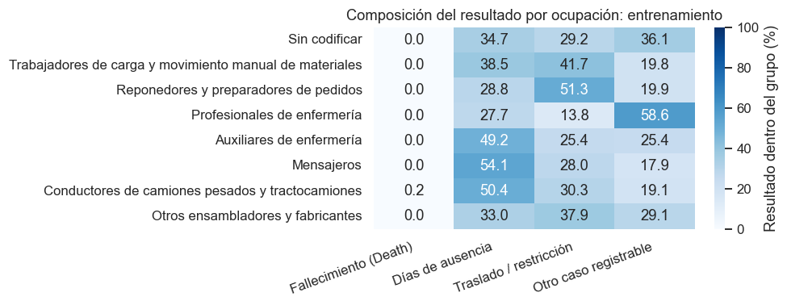
Las composiciones mostradas utilizan casos reportados dentro de cada grupo. Las diferencias pueden reflejar mezcla ocupacional, diagnósticos y prácticas de reporte. Sin trabajadores u horas expuestos como denominador, no son probabilidades de lesión.
Los denominadores son los casos de cada grupo. Las tablas conservan los conteos de fallecimientos porque un mapa de porcentajes puede ocultar esta clase infrecuente. Las comparaciones son descriptivas y no están ajustadas por composición industria–ocupación, prácticas de los empleadores u otros factores. La dependencia dentro de establecimientos invalida una interpretación ingenua de pruebas basadas en filas independientes; los valores p clásicos que aparecen después son ilustraciones bajo un supuesto de independencia incumplido, no inferencia válida para estos datos. Bonferroni controla multiplicidad solo bajo los supuestos de cada prueba y no repara esta dependencia. Las decisiones se apoyan en magnitudes descriptivas y procedencia, no en significancia.
8.1 Asociación entre predictores y variable objetivo#
Para los predictores categóricos se reporta χ² y V de Cramér. Debido a que hay cientos de miles de filas y dependencia dentro de establecimientos, los valores p pueden ser extremadamente pequeños incluso para asociaciones modestas; por ello, V de Cramér es la medida principal de magnitud. Los valores p se muestran como referencia descriptiva y se ajustan con Bonferroni.
También se reporta información mutua normalizada (NMI) como medida no lineal. Las horas se discretizan por hora del día para este cálculo. Para las dos variables horarias se añade Kruskal–Wallis y un tamaño de efecto aproximado ε². Ninguno de estos análisis implica causalidad.
from scipy.stats import chi2_contingency, kruskal
from sklearn.metrics import normalized_mutual_info_score
def cramers_v_bias_corrected(x, y):
table = pd.crosstab(
pd.Series(x, copy=False).fillna('Desconocido').astype(str),
pd.Series(y, copy=False).astype(str)
)
chi2, p, dof, _ = chi2_contingency(table, correction=False)
n = table.to_numpy().sum()
phi2 = chi2 / n
r, k = table.shape
if n <= 1:
return np.nan, p, dof
phi2corr = max(0.0, phi2 - ((k - 1) * (r - 1)) / (n - 1))
rcorr = r - ((r - 1) ** 2) / (n - 1)
kcorr = k - ((k - 1) ** 2) / (n - 1)
denom = min(kcorr - 1, rcorr - 1)
v = np.sqrt(phi2corr / denom) if denom > 0 else 0.0
return float(v), float(p), int(dof)
association_rows = []
for c in categorical_predictors:
s = feature_view[c].astype('object').fillna('Desconocido')
v, p, dof = cramers_v_bias_corrected(s, train[TARGET])
nmi = normalized_mutual_info_score(s.astype(str), train[TARGET].astype(str))
association_rows.append({
'Predictor': c,
'Tipo de análisis': 'χ² / V de Cramér',
'V de Cramér': v,
'NMI': nmi,
'p-valor χ²': p,
'Grados de libertad': dof
})
association_df = pd.DataFrame(association_rows)
association_df['p ajustado Bonferroni'] = np.minimum(
association_df['p-valor χ²'] * len(association_df), 1.0
)
display(association_df.sort_values('V de Cramér', ascending=False))
hour_rows = []
for c in hour_predictors:
s = pd.to_numeric(feature_view[c], errors='coerce')
groups = [s.loc[train[TARGET].eq(label)].dropna().to_numpy() for label in sorted(OUTCOMES)]
H, p = kruskal(*groups)
n = sum(len(g) for g in groups)
k = len(groups)
epsilon2 = max(0.0, (H - k + 1) / (n - k)) if n > k else np.nan
hour_as_category = s.round().astype('Int64').astype(str).replace('<NA>', 'Desconocido')
nmi = normalized_mutual_info_score(hour_as_category, train[TARGET].astype(str))
hour_rows.append({
'Predictor': c,
'H de Kruskal–Wallis': H,
'p-valor': p,
'ε² aproximado': epsilon2,
'NMI (hora discretizada)': nmi,
'Casos utilizables': n
})
hour_df=pd.DataFrame(hour_rows)
hour_df['p ajustado Bonferroni']=np.minimum(hour_df['p-valor']*len(hour_df),1.0)
display(hour_df)
pair_vars = list(categorical_predictors)
v_matrix = pd.DataFrame(np.eye(len(pair_vars)), index=pair_vars, columns=pair_vars)
for i, a in enumerate(pair_vars):
for j in range(i + 1, len(pair_vars)):
b = pair_vars[j]
v, _, _ = cramers_v_bias_corrected(
feature_view[a].astype('object').fillna('Desconocido'),
feature_view[b].astype('object').fillna('Desconocido')
)
v_matrix.loc[a, b] = v_matrix.loc[b, a] = v
fig, ax = plt.subplots(figsize=(9, 7))
sns.heatmap(v_matrix, annot=True, fmt='.2f', vmin=0, vmax=1, cmap='Blues', ax=ax)
ax.set_title('Asociación entre predictores categóricos: V de Cramér')
plt.tight_layout()
plt.show()
from osha_review_checks import single_feature_checks
(PROJECT_DIR/'osha_temporal_results').mkdir(exist_ok=True)
leak_audit = single_feature_checks(feature_view, train[TARGET], train.incident_date,
PROJECT_DIR/'osha_temporal_results/single_feature_checks.json')
display(pd.DataFrame([{k:v for k,v in row.items() if k != 'Intentos'} for row in leak_audit]))
display(pd.DataFrame([{'Predictor': row['Predictor'], **attempt}
for row in leak_audit for attempt in row['Intentos']]))
assert all(row['Verificado'] for row in leak_audit), 'Diagnóstico no convergente; no interpretar su AUC.'
display(Markdown('Estos ajustes univariables son diagnósticos de fuga dentro del desarrollo; no seleccionan variables ni hiperparámetros. Una asociación fuerte exige examinar disponibilidad y procedencia, no demuestra fuga por sí sola.'))
top_association=association_df.sort_values('V de Cramér',ascending=False).iloc[0]
display(Markdown(f'La mayor asociación categórica observada corresponde a **{top_association["Predictor"]}**, con V de Cramér **{top_association["V de Cramér"]:.3f}**. La magnitud y las tablas de composición son más informativas que p-valores de filas dependientes; Bonferroni no corrige la dependencia dentro de establecimientos.'))
| Predictor | Tipo de análisis | V de Cramér | NMI | p-valor χ² | Grados de libertad | p ajustado Bonferroni | |
|---|---|---|---|---|---|---|---|
| 1 | naics_code | χ² / V de Cramér | 0.236 | 0.033 | 0.000 | 2142 | 0.000 |
| 3 | soc_code | χ² / V de Cramér | 0.206 | 0.025 | 0.000 | 1794 | 0.000 |
| 4 | type_of_incident | χ² / V de Cramér | 0.150 | 0.045 | 0.000 | 15 | 0.000 |
| 0 | state | χ² / V de Cramér | 0.121 | 0.010 | 0.000 | 162 | 0.000 |
| 2 | establishment_type | χ² / V de Cramér | 0.056 | 0.007 | 0.000 | 12 | 0.000 |
| 5 | time_unknown | χ² / V de Cramér | 0.055 | 0.004 | 0.000 | 6 | 0.000 |
| Predictor | H de Kruskal–Wallis | p-valor | ε² aproximado | NMI (hora discretizada) | Casos utilizables | p ajustado Bonferroni | |
|---|---|---|---|---|---|---|---|
| 0 | time_started_work_hour | 2.068 | 0.558 | 0.000 | 0.004 | 236501 | 1.000 |
| 1 | time_of_incident_hour | 88.191 | 0.000 | 0.000 | 0.002 | 233239 | 0.000 |
C:\Users\Usuario\AppData\Local\Temp\ipykernel_47692\3774106759.py:104: UserWarning: The figure layout has changed to tight
figure.tight_layout()
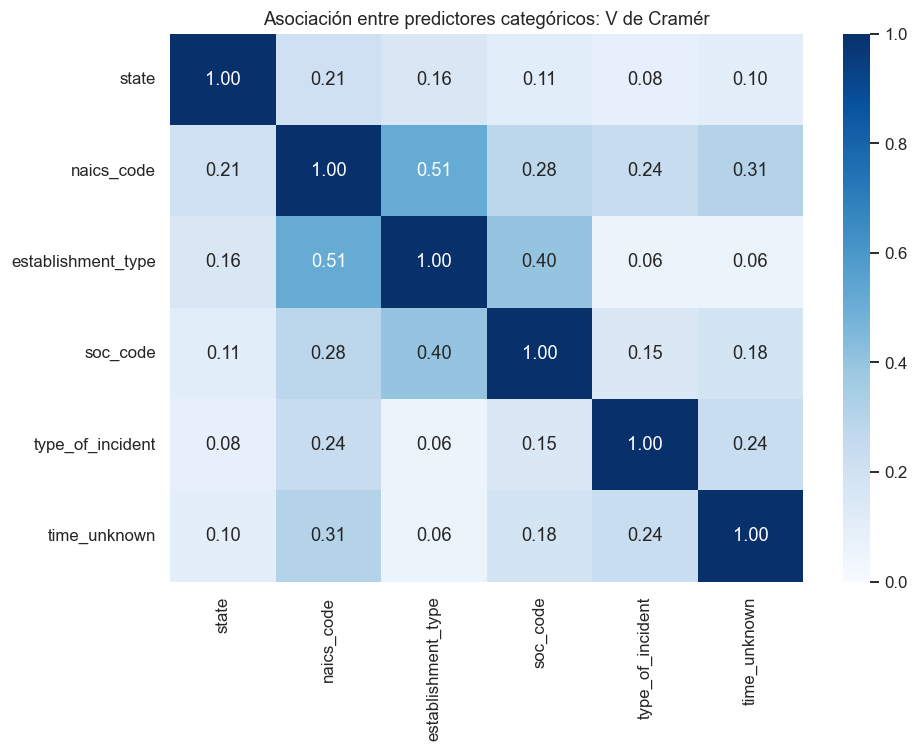
| Predictor | AUC macro OvR en agosto–septiembre | Solver final | Iteraciones | Verificado | |
|---|---|---|---|---|---|
| 0 | state | 0.512 | newton-cg | 21 | True |
| 1 | naics_code | 0.629 | newton-cg | 22 | True |
| 2 | establishment_type | 0.515 | newton-cg | 16 | True |
| 3 | soc_code | 0.618 | newton-cg | 21 | True |
| 4 | type_of_incident | 0.572 | newton-cg | 15 | True |
| 5 | time_unknown | 0.499 | newton-cg | 12 | True |
| 6 | time_started_work_hour | 0.517 | newton-cg | 21 | True |
| 7 | time_of_incident_hour | 0.517 | newton-cg | 21 | True |
| Predictor | solver | iterations | warnings | numerically_verified | |
|---|---|---|---|---|---|
| 0 | state | newton-cg | 21 | [] | True |
| 1 | naics_code | newton-cg | 22 | [] | True |
| 2 | establishment_type | newton-cg | 16 | [] | True |
| 3 | soc_code | newton-cg | 21 | [] | True |
| 4 | type_of_incident | newton-cg | 15 | [] | True |
| 5 | time_unknown | newton-cg | 12 | [] | True |
| 6 | time_started_work_hour | newton-cg | 21 | [] | True |
| 7 | time_of_incident_hour | newton-cg | 21 | [] | True |
Estos ajustes univariables son diagnósticos de fuga dentro del desarrollo; no seleccionan variables ni hiperparámetros. Una asociación fuerte exige examinar disponibilidad y procedencia, no demuestra fuga por sí sola.
La mayor asociación categórica observada corresponde a naics_code, con V de Cramér 0.236. La magnitud y las tablas de composición son más informativas que p-valores de filas dependientes; Bonferroni no corrige la dependencia dentro de establecimientos.
8.1.1 Horas: relaciones numérica–numérica y categórica–numérica#
Las únicas variables numéricas son las dos horas. Su relación se examina con un hexbin (n grande) y con las correlaciones de Pearson y Spearman. Se deriva además una variable exploratoria, las horas transcurridas desde el inicio del turno, ((hora del incidente − hora de inicio) mód 24), que resume ambas horas en una magnitud con sentido físico (exposición acumulada en la jornada). La relación con el resultado se examina con violin plots y comparaciones por pares de Mann–Whitney, con tamaño de efecto (correlación biserial por rangos r; |r| < 0,1 se considera despreciable) y corrección por comparaciones múltiples de Holm y Benjamini–Hochberg (FDR). Los p-valores suponen filas independientes, lo que no se cumple dentro de los establecimientos; por eso se leen junto al tamaño de efecto.
from scipy.stats import mannwhitneyu
hours = feature_view[hour_predictors].apply(pd.to_numeric, errors='coerce')
both_hours = hours.dropna()
pearson_r = both_hours.corr(method='pearson').iloc[0, 1]
spearman_r = both_hours.corr(method='spearman').iloc[0, 1]
elapsed = ((both_hours.time_of_incident_hour - both_hours.time_started_work_hour) % 24).rename('horas_desde_inicio')
fig, axes = plt.subplots(1, 2, figsize=(14, 5))
hb = axes[0].hexbin(both_hours.time_started_work_hour, both_hours.time_of_incident_hour, gridsize=24, cmap='Blues', mincnt=1, bins='log')
fig.colorbar(hb, ax=axes[0], label='Casos (escala log)')
axes[0].set(title=f'Hora de inicio vs. hora del incidente\nPearson {pearson_r:.2f} · Spearman {spearman_r:.2f}',
xlabel='Hora de inicio del trabajo', ylabel='Hora del incidente')
axes[1].hist(elapsed, bins=np.arange(-0.5, 24.5, 1), color='#377eb8')
axes[1].set(title='Horas transcurridas desde el inicio del turno (mód 24)', xlabel='Horas', ylabel='Casos')
plt.tight_layout(); plt.show()
hour_long = (hours.assign(horas_desde_inicio=elapsed, Resultado=train.outcome)
.melt(id_vars='Resultado', var_name='Variable', value_name='Horas').dropna())
fig, axes = plt.subplots(1, 3, figsize=(18, 5))
for ax, c in zip(axes, hour_predictors + ['horas_desde_inicio']):
sns.violinplot(data=hour_long[hour_long.Variable.eq(c)], x='Resultado', y='Horas', order=list(OUTCOMES.values()),
cut=0, inner='quartile', ax=ax)
ax.set(title=c, xlabel='')
ax.tick_params(axis='x', rotation=25)
plt.tight_layout(); plt.show()
display(pd.concat({c: pd.DataFrame({'h': (elapsed if c == 'horas_desde_inicio' else hours[c]), 'o': train.outcome})
.dropna().groupby('o').h.median() for c in hour_predictors + ['horas_desde_inicio']}, axis=1)
.reindex(OUTCOMES.values()).rename_axis('Mediana por resultado'))
pair_rows = []
for c in hour_predictors + ['horas_desde_inicio']:
values = elapsed if c == 'horas_desde_inicio' else hours[c].dropna()
labels = train.loc[values.index, TARGET]
for i, a in enumerate(sorted(OUTCOMES)):
for b in sorted(OUTCOMES)[i+1:]:
xa, xb = values[labels.eq(a)], values[labels.eq(b)]
U, p = mannwhitneyu(xa, xb, alternative='two-sided')
pair_rows.append({'Variable': c, 'Comparación': f'{OUTCOMES[a]} vs {OUTCOMES[b]}', 'n₁': len(xa), 'n₂': len(xb),
'Biserial por rangos r': 2*U/(len(xa)*len(xb)) - 1, 'p': p})
pairwise_hours = pd.DataFrame(pair_rows)
pairwise_hours['p Holm'] = multipletests(pairwise_hours.p, method='holm')[1]
pairwise_hours['p FDR (BH)'] = multipletests(pairwise_hours.p, method='fdr_bh')[1]
pairwise_hours['Efecto'] = pd.cut(pairwise_hours['Biserial por rangos r'].abs(), [-1, .1, .3, .5, 1], labels=['despreciable', 'pequeño', 'mediano', 'grande'])
display(pairwise_hours.assign(**{k: pairwise_hours[k].map('{:.2e}'.format) for k in ['p', 'p Holm', 'p FDR (BH)']}))
elapsed_kw = kruskal(*[elapsed[train.loc[elapsed.index, TARGET].eq(k)] for k in sorted(OUTCOMES)])
largest = pairwise_hours.loc[pairwise_hours['Biserial por rangos r'].abs().idxmax()]
display(Markdown(
f"**Interpretación.** Las dos horas tienen una relación moderada (Pearson **{pearson_r:.2f}**, Spearman **{spearman_r:.2f}**): la hora del incidente depende del turno, así que aportan información en parte redundante; el hexbin muestra la diagonal de incidentes pocas horas después del inicio. "
f"La mediana de horas transcurridas desde el inicio es **{elapsed.median():.0f} h**; la distribución puede reflejar tanto la exposición a lo largo de la jornada como horas reportadas de forma aproximada. "
f"Frente al resultado, **{int(pairwise_hours['p Holm'].lt(0.05).sum())} de {len(pairwise_hours)}** comparaciones son significativas tras Holm, pero el mayor tamaño de efecto es |r| = {abs(largest['Biserial por rangos r']):.3f} "
f"({largest['Variable']}: {largest['Comparación']}), **despreciable o pequeño**. Las horas transcurridas tienen H de Kruskal–Wallis = {elapsed_kw.statistic:,.1f}. "
"Las horas no ordenan el resultado de forma monótona, así que tratarlas como categorías en el modelo es más prudente que imponer una pendiente lineal. Las horas transcurridas quedan como candidata de ingeniería de características."))
C:\Users\Usuario\AppData\Local\Temp\ipykernel_47692\3774106759.py:104: UserWarning: The figure layout has changed to tight
figure.tight_layout()
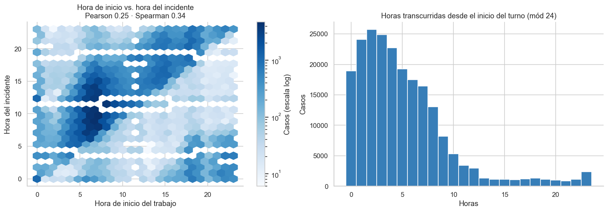
C:\Users\Usuario\miniconda3\envs\ml_venv\lib\site-packages\seaborn\_oldcore.py:1498: FutureWarning: is_categorical_dtype is deprecated and will be removed in a future version. Use isinstance(dtype, CategoricalDtype) instead
if pd.api.types.is_categorical_dtype(vector):
C:\Users\Usuario\miniconda3\envs\ml_venv\lib\site-packages\seaborn\_oldcore.py:1498: FutureWarning: is_categorical_dtype is deprecated and will be removed in a future version. Use isinstance(dtype, CategoricalDtype) instead
if pd.api.types.is_categorical_dtype(vector):
C:\Users\Usuario\miniconda3\envs\ml_venv\lib\site-packages\seaborn\_oldcore.py:1498: FutureWarning: is_categorical_dtype is deprecated and will be removed in a future version. Use isinstance(dtype, CategoricalDtype) instead
if pd.api.types.is_categorical_dtype(vector):
C:\Users\Usuario\miniconda3\envs\ml_venv\lib\site-packages\seaborn\_oldcore.py:1498: FutureWarning: is_categorical_dtype is deprecated and will be removed in a future version. Use isinstance(dtype, CategoricalDtype) instead
if pd.api.types.is_categorical_dtype(vector):
C:\Users\Usuario\miniconda3\envs\ml_venv\lib\site-packages\seaborn\_oldcore.py:1498: FutureWarning: is_categorical_dtype is deprecated and will be removed in a future version. Use isinstance(dtype, CategoricalDtype) instead
if pd.api.types.is_categorical_dtype(vector):
C:\Users\Usuario\miniconda3\envs\ml_venv\lib\site-packages\seaborn\_oldcore.py:1498: FutureWarning: is_categorical_dtype is deprecated and will be removed in a future version. Use isinstance(dtype, CategoricalDtype) instead
if pd.api.types.is_categorical_dtype(vector):
C:\Users\Usuario\AppData\Local\Temp\ipykernel_47692\3774106759.py:104: UserWarning: The figure layout has changed to tight
figure.tight_layout()
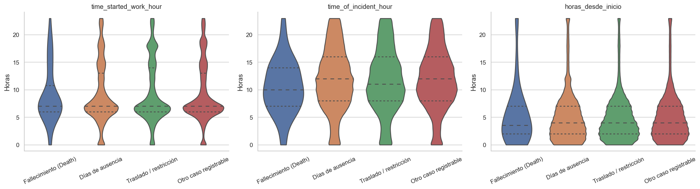
| time_started_work_hour | time_of_incident_hour | horas_desde_inicio | |
|---|---|---|---|
| Mediana por resultado | |||
| Fallecimiento (Death) | 7.000 | 10.000 | 3.500 |
| Días de ausencia | 7.000 | 12.000 | 4.000 |
| Traslado / restricción | 7.000 | 11.000 | 4.000 |
| Otro caso registrable | 7.000 | 12.000 | 4.000 |
| Variable | Comparación | n₁ | n₂ | Biserial por rangos r | p | p Holm | p FDR (BH) | Efecto | |
|---|---|---|---|---|---|---|---|---|---|
| 0 | time_started_work_hour | Fallecimiento (Death) vs Días de ausencia | 60 | 86772 | -0.011 | 8.85e-01 | 1.00e+00 | 9.75e-01 | despreciable |
| 1 | time_started_work_hour | Fallecimiento (Death) vs Traslado / restricción | 60 | 71784 | 0.002 | 9.75e-01 | 1.00e+00 | 9.75e-01 | despreciable |
| 2 | time_started_work_hour | Fallecimiento (Death) vs Otro caso registrable | 60 | 77885 | -0.003 | 9.72e-01 | 1.00e+00 | 9.75e-01 | despreciable |
| 3 | time_started_work_hour | Días de ausencia vs Traslado / restricción | 86772 | 71784 | 0.003 | 3.62e-01 | 1.00e+00 | 5.93e-01 | despreciable |
| 4 | time_started_work_hour | Días de ausencia vs Otro caso registrable | 86772 | 77885 | 0.002 | 5.12e-01 | 1.00e+00 | 7.68e-01 | despreciable |
| 5 | time_started_work_hour | Traslado / restricción vs Otro caso registrable | 71784 | 77885 | -0.005 | 1.09e-01 | 1.00e+00 | 2.19e-01 | despreciable |
| 6 | time_of_incident_hour | Fallecimiento (Death) vs Días de ausencia | 60 | 83545 | -0.145 | 5.12e-02 | 6.14e-01 | 1.32e-01 | pequeño |
| 7 | time_of_incident_hour | Fallecimiento (Death) vs Traslado / restricción | 60 | 72065 | -0.121 | 1.05e-01 | 1.00e+00 | 2.19e-01 | pequeño |
| 8 | time_of_incident_hour | Fallecimiento (Death) vs Otro caso registrable | 60 | 77569 | -0.154 | 3.81e-02 | 4.96e-01 | 1.14e-01 | pequeño |
| 9 | time_of_incident_hour | Días de ausencia vs Traslado / restricción | 83545 | 72065 | 0.021 | 5.89e-13 | 8.83e-12 | 2.65e-12 | despreciable |
| 10 | time_of_incident_hour | Días de ausencia vs Otro caso registrable | 83545 | 77569 | -0.004 | 1.55e-01 | 1.00e+00 | 2.80e-01 | despreciable |
| 11 | time_of_incident_hour | Traslado / restricción vs Otro caso registrable | 72065 | 77569 | -0.026 | 3.23e-18 | 5.17e-17 | 1.94e-17 | despreciable |
| 12 | horas_desde_inicio | Fallecimiento (Death) vs Días de ausencia | 54 | 77769 | -0.036 | 6.48e-01 | 1.00e+00 | 8.33e-01 | despreciable |
| 13 | horas_desde_inicio | Fallecimiento (Death) vs Traslado / restricción | 54 | 67042 | -0.014 | 8.60e-01 | 1.00e+00 | 9.75e-01 | despreciable |
| 14 | horas_desde_inicio | Fallecimiento (Death) vs Otro caso registrable | 54 | 71252 | -0.045 | 5.64e-01 | 1.00e+00 | 7.81e-01 | despreciable |
| 15 | horas_desde_inicio | Días de ausencia vs Traslado / restricción | 77769 | 67042 | 0.026 | 2.82e-18 | 4.79e-17 | 1.94e-17 | despreciable |
| 16 | horas_desde_inicio | Días de ausencia vs Otro caso registrable | 77769 | 71252 | -0.007 | 1.25e-02 | 1.75e-01 | 4.50e-02 | despreciable |
| 17 | horas_desde_inicio | Traslado / restricción vs Otro caso registrable | 67042 | 71252 | -0.035 | 1.86e-29 | 3.35e-28 | 3.35e-28 | despreciable |
Interpretación. Las dos horas tienen una relación moderada (Pearson 0.25, Spearman 0.34): la hora del incidente depende del turno, así que aportan información en parte redundante; el hexbin muestra la diagonal de incidentes pocas horas después del inicio. La mediana de horas transcurridas desde el inicio es 4 h; la distribución puede reflejar tanto la exposición a lo largo de la jornada como horas reportadas de forma aproximada. Frente al resultado, 4 de 18 comparaciones son significativas tras Holm, pero el mayor tamaño de efecto es |r| = 0.154 (time_of_incident_hour: Fallecimiento (Death) vs Otro caso registrable), despreciable o pequeño. Las horas transcurridas tienen H de Kruskal–Wallis = 136.6. Las horas no ordenan el resultado de forma monótona, así que tratarlas como categorías en el modelo es más prudente que imponer una pendiente lineal. Las horas transcurridas quedan como candidata de ingeniería de características.
8.1.2 Pruebas entre predictores categóricos y multicolinealidad#
El heatmap anterior de V de Cramér es la matriz de asociación entre predictores categóricos. Aquí se añaden sus pruebas χ² con corrección de Holm y FDR y el factor de inflación de varianza generalizado (GVIF, Fox y Monette, 1992), que extiende el VIF a factores con varios niveles. GVIF^(1/(2·gl)) es comparable con √VIF: valores > √5 ≈ 2,24 indican colinealidad relevante y > √10 ≈ 3,16 severa. Para que los determinantes sean estables se usa una muestra aleatoria de 60.000 casos de desarrollo y la jerarquía agregada de NAICS (sector) y SOC (grupo mayor de dos dígitos). Las horas entran como categorías, igual que en el modelo.
pair_tests = []
for i, a in enumerate(pair_vars):
for b in pair_vars[i+1:]:
v, p, dof = cramers_v_bias_corrected(feature_view[a].astype(object).fillna('Desconocido'),
feature_view[b].astype(object).fillna('Desconocido'))
pair_tests.append({'Predictor A': a, 'Predictor B': b, 'V de Cramér': v, 'gl': dof, 'p': p})
pair_tests = pd.DataFrame(pair_tests)
pair_tests['p Holm'] = multipletests(pair_tests.p, method='holm')[1]
pair_tests['p FDR (BH)'] = multipletests(pair_tests.p, method='fdr_bh')[1]
display(pair_tests.sort_values('V de Cramér', ascending=False)
.assign(**{k: lambda d, k=k: d[k].map('{:.2e}'.format) for k in ['p', 'p Holm', 'p FDR (BH)']}))
gvif_frame = pd.DataFrame({
'estado': train.state, 'sector_naics': train.industry_sector_code,
'tipo_establecimiento': train.establishment_type_label,
'grupo_soc': train.soc_code.str[:2], 'tipo_incidente': train.incident_type, 'time_unknown': train.time_unknown,
'hora_inicio': feature_view.time_started_work_hour, 'hora_incidente': feature_view.time_of_incident_hour,
}).sample(n=60000, random_state=42)
blocks, design = {}, []
for factor in gvif_frame:
levels = gvif_frame[factor].astype(object).where(gvif_frame[factor].notna(), 'Desconocido').astype(str)
dummies = pd.get_dummies(levels, prefix=factor, drop_first=True, dtype=float)
dummies = dummies.loc[:, dummies.std() > 0]
blocks[factor] = list(dummies.columns); design.append(dummies)
design = pd.concat(design, axis=1)
R = np.corrcoef(design.to_numpy(), rowvar=False)
_, logdet_all = np.linalg.slogdet(R)
position = {c: i for i, c in enumerate(design.columns)}
gvif_rows = []
for factor, columns in blocks.items():
inside = [position[c] for c in columns]
outside = [i for i in range(len(design.columns)) if i not in set(inside)]
gvif = np.exp(np.linalg.slogdet(R[np.ix_(inside, inside)])[1] + np.linalg.slogdet(R[np.ix_(outside, outside)])[1] - logdet_all)
gvif_rows.append({'Factor': factor, 'gl': len(inside), 'GVIF': gvif, 'GVIF^(1/(2·gl))': gvif**(1/(2*len(inside)))})
gvif_table = pd.DataFrame(gvif_rows).sort_values('GVIF^(1/(2·gl))', ascending=False)
display(gvif_table)
top_pair = pair_tests.sort_values('V de Cramér', ascending=False).iloc[0]
top_gvif = gvif_table.iloc[0]
display(Markdown(
f"**Interpretación.** La asociación más fuerte entre predictores es **{top_pair['Predictor A']}–{top_pair['Predictor B']}** (V = {top_pair['V de Cramér']:.3f}). Todas las pruebas χ² siguen siendo significativas tras Holm y FDR, algo esperable con n grande; lo relevante es la magnitud. "
"Industria, ocupación y tipo de establecimiento describen el mismo lugar de trabajo desde ángulos distintos. "
f"En el GVIF, el único factor por encima de √5 es **{top_gvif['Factor']}** ({top_gvif['GVIF^(1/(2·gl))']:.2f}): es una redundancia por construcción, porque `time_unknown = 1` coincide casi siempre con la categoría «hora del incidente desconocida» (5.2.1). "
"Los demás factores quedan por debajo de 1,2 una vez ajustados por sus grados de libertad, así que las asociaciones entre industria, ocupación y establecimiento no generan colinealidad severa. "
"En una regresión logística regularizada esta redundancia no sesga las predicciones, pero reparte el efecto entre dos columnas y vuelve inestables sus coeficientes. Por eso la sección 20 interpreta contrastes dentro de un mismo predictor y no se eliminan variables por VIF en el modelo base."))
| Predictor A | Predictor B | V de Cramér | gl | p | p Holm | p FDR (BH) | |
|---|---|---|---|---|---|---|---|
| 5 | naics_code | establishment_type | 0.513 | 2856 | 0.00e+00 | 0.00e+00 | 0.00e+00 |
| 9 | establishment_type | soc_code | 0.399 | 2392 | 0.00e+00 | 0.00e+00 | 0.00e+00 |
| 8 | naics_code | time_unknown | 0.306 | 1428 | 0.00e+00 | 0.00e+00 | 0.00e+00 |
| 6 | naics_code | soc_code | 0.282 | 426972 | 0.00e+00 | 0.00e+00 | 0.00e+00 |
| 7 | naics_code | type_of_incident | 0.241 | 3570 | 0.00e+00 | 0.00e+00 | 0.00e+00 |
| 14 | type_of_incident | time_unknown | 0.237 | 10 | 0.00e+00 | 0.00e+00 | 0.00e+00 |
| 0 | state | naics_code | 0.211 | 38556 | 0.00e+00 | 0.00e+00 | 0.00e+00 |
| 13 | soc_code | time_unknown | 0.180 | 1196 | 0.00e+00 | 0.00e+00 | 0.00e+00 |
| 1 | state | establishment_type | 0.155 | 216 | 0.00e+00 | 0.00e+00 | 0.00e+00 |
| 12 | soc_code | type_of_incident | 0.146 | 2990 | 0.00e+00 | 0.00e+00 | 0.00e+00 |
| 2 | state | soc_code | 0.112 | 32292 | 0.00e+00 | 0.00e+00 | 0.00e+00 |
| 4 | state | time_unknown | 0.099 | 108 | 0.00e+00 | 0.00e+00 | 0.00e+00 |
| 3 | state | type_of_incident | 0.083 | 270 | 0.00e+00 | 0.00e+00 | 0.00e+00 |
| 10 | establishment_type | type_of_incident | 0.060 | 20 | 0.00e+00 | 0.00e+00 | 0.00e+00 |
| 11 | establishment_type | time_unknown | 0.059 | 8 | 0.00e+00 | 0.00e+00 | 0.00e+00 |
| Factor | gl | GVIF | GVIF^(1/(2·gl)) | |
|---|---|---|---|---|
| 5 | time_unknown | 2 | 209.276 | 3.803 |
| 7 | hora_incidente | 24 | 649.986 | 1.144 |
| 1 | sector_naics | 22 | 295.413 | 1.138 |
| 2 | tipo_establecimiento | 3 | 1.939 | 1.117 |
| 3 | grupo_soc | 24 | 177.083 | 1.114 |
| 6 | hora_inicio | 24 | 6.135 | 1.039 |
| 4 | tipo_incidente | 5 | 1.307 | 1.027 |
| 0 | estado | 52 | 2.048 | 1.007 |
Interpretación. La asociación más fuerte entre predictores es naics_code–establishment_type (V = 0.513). Todas las pruebas χ² siguen siendo significativas tras Holm y FDR, algo esperable con n grande; lo relevante es la magnitud. Industria, ocupación y tipo de establecimiento describen el mismo lugar de trabajo desde ángulos distintos. En el GVIF, el único factor por encima de √5 es time_unknown (3.80): es una redundancia por construcción, porque time_unknown = 1 coincide casi siempre con la categoría «hora del incidente desconocida» (5.2.1). Los demás factores quedan por debajo de 1,2 una vez ajustados por sus grados de libertad, así que las asociaciones entre industria, ocupación y establecimiento no generan colinealidad severa. En una regresión logística regularizada esta redundancia no sesga las predicciones, pero reparte el efecto entre dos columnas y vuelve inestables sus coeficientes. Por eso la sección 20 interpreta contrastes dentro de un mismo predictor y no se eliminan variables por VIF en el modelo base.
8.2 Estructura multivariada exploratoria#
PCA sobre los códigos NAICS, SOC o estado no es apropiado, porque sus números son etiquetas nominales y no magnitudes. Para visualizar una muestra del desarrollo se aplica TruncatedSVD a categorías one-hot más horas numéricas imputadas y estandarizadas. Es una representación exploratoria distinta de la del modelo, que codifica también las horas como categorías. Se incluyen todos los fallecimientos y una muestra aleatoria de las demás clases únicamente para hacer visible la clase rara; por tanto, la figura no representa prevalencias poblacionales y no se utiliza para seleccionar variables ni para entrenar el modelo.
No se aplica distancia de Mahalanobis sobre los códigos nominales ni se eliminan “outliers multivariados” a partir de distancias arbitrarias en una representación one-hot. Los valores imposibles e inconsistentes se auditan directamente en sus campos originales.
from sklearn.compose import ColumnTransformer
from sklearn.preprocessing import OneHotEncoder, StandardScaler
from sklearn.impute import SimpleImputer
from sklearn.pipeline import Pipeline
from sklearn.decomposition import TruncatedSVD
death_rows = train.loc[train[TARGET].eq(1)]
nondeath_rows = train.loc[train[TARGET].ne(1)]
nondeath_sample = nondeath_rows.sample(
n=min(30000, len(nondeath_rows)),
random_state=42
)
vis = pd.concat([death_rows, nondeath_sample], axis=0)
cat_vis = list(categorical_predictors)
num_vis = list(hour_predictors)
pre_vis = ColumnTransformer(
transformers=[
('cat', Pipeline([
('imputer', SimpleImputer(strategy='constant', fill_value='Desconocido')),
('onehot', OneHotEncoder(handle_unknown='ignore'))
]), cat_vis),
('num', Pipeline([
('imputer', SimpleImputer(strategy='median')),
('scale', StandardScaler(with_mean=False))
]), num_vis)
],
sparse_threshold=1.0
)
X_vis = pre_vis.fit_transform(vis[baseline['features']])
svd = TruncatedSVD(n_components=2, random_state=42)
coords = svd.fit_transform(X_vis)
fig, ax = plt.subplots(figsize=(9, 6))
for label in sorted(OUTCOMES):
mask = vis[TARGET].to_numpy() == label
ax.scatter(coords[mask, 0], coords[mask, 1], s=10, alpha=0.30, label=OUTCOMES[label])
ax.set(
title='TruncatedSVD: categorías one-hot y horas estandarizadas',
xlabel='Componente 1',
ylabel='Componente 2'
)
ax.legend(fontsize=8)
plt.tight_layout()
plt.show()
print('Varianza explicada por los dos componentes:',
f'{100 * svd.explained_variance_ratio_.sum():.2f}%')
print('Casos visualizados:', len(vis),
'| Death:', int(vis[TARGET].eq(1).sum()),
'| otras clases muestreadas:', int(vis[TARGET].ne(1).sum()))
display(Markdown(f'Los dos componentes explican **{100*svd.explained_variance_ratio_.sum():.2f} %** de la varianza de esta muestra y representación. Una proyección de dos dimensiones no demuestra separabilidad total, y el sobremuestreo visual de Death impide interpretar densidades como prevalencias.'))
C:\Users\Usuario\AppData\Local\Temp\ipykernel_47692\3774106759.py:104: UserWarning: The figure layout has changed to tight
figure.tight_layout()
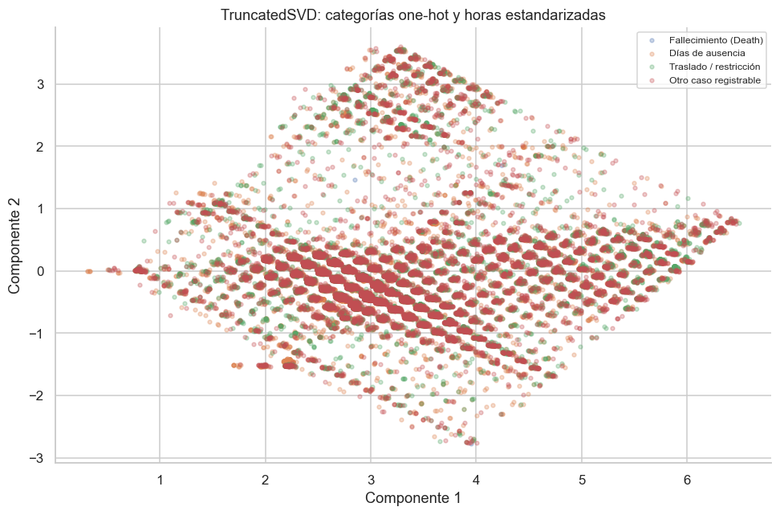
Varianza explicada por los dos componentes: 33.26%
Casos visualizados: 30069 | Death: 69 | otras clases muestreadas: 30000
Los dos componentes explican 33.26 % de la varianza de esta muestra y representación. Una proyección de dos dimensiones no demuestra separabilidad total, y el sobremuestreo visual de Death impide interpretar densidades como prevalencias.
8.3 Dimensionalidad efectiva, outliers multivariados y subpoblaciones#
La figura anterior sobremuestrea Death para hacerlo visible. Aquí se usa una muestra aleatoria simple de 40.000 casos de desarrollo, con las prevalencias reales. Sobre la misma representación (one-hot + horas estandarizadas) se calcula:
La varianza explicada acumulada de TruncatedSVD (el análogo de PCA para matrices dispersas sin centrar), para estimar la dimensionalidad efectiva.
Los outliers multivariados con Isolation Forest y con la distancia de Mahalanobis, ambos sobre los 10 primeros componentes. En ese espacio continuo la distancia tiene sentido; sobre los códigos nominales crudos no lo tendría.
Un clustering exploratorio con K-means (k = 2…8, elegido por silueta sobre una submuestra de 2.000 casos).
Nada de esto elimina filas ni crea predictores: el análisis es descriptivo.
from sklearn.base import clone
from sklearn.ensemble import IsolationForest
from sklearn.cluster import MiniBatchKMeans
from sklearn.metrics import silhouette_score
from scipy.stats import chi2 as chi2_distribution
mv_sample = train.sample(n=40000, random_state=42)
X_mv = clone(pre_vis).fit_transform(mv_sample[baseline['features']])
svd_mv = TruncatedSVD(n_components=150, random_state=42).fit(X_mv)
cumulative = np.cumsum(svd_mv.explained_variance_ratio_)
needed = {share: (int(np.argmax(cumulative >= share)) + 1 if cumulative[-1] >= share else None) for share in [.5, .8, .9]}
fig, ax = plt.subplots(figsize=(9, 4))
ax.plot(range(1, len(cumulative) + 1), 100*cumulative)
for share, k in needed.items():
if k: ax.axvline(k, linestyle=':', color='gray'); ax.text(k, 100*share - 6, f'{int(100*share)} %: {k}', fontsize=8)
ax.set(title=f'Varianza explicada acumulada (TruncatedSVD; {X_mv.shape[1]:,} columnas codificadas)', xlabel='Componentes', ylabel='Varianza explicada (%)')
plt.tight_layout(); plt.show()
Z = svd_mv.transform(X_mv)[:, :10]
del X_mv
isolation = IsolationForest(n_estimators=200, contamination='auto', random_state=42).fit(Z)
is_outlier_if = isolation.predict(Z) == -1
Zc = Z - Z.mean(axis=0)
d2 = np.einsum('ij,jk,ik->i', Zc, np.linalg.pinv(np.cov(Z, rowvar=False)), Zc)
is_outlier_md = d2 > chi2_distribution.ppf(0.999, df=Z.shape[1])
outcome_mix = pd.DataFrame({
'Muestra completa': mv_sample.outcome.value_counts(normalize=True),
'Atípicos Isolation Forest': mv_sample.outcome[is_outlier_if].value_counts(normalize=True),
'Atípicos Mahalanobis (χ² 0,999)': mv_sample.outcome[is_outlier_md].value_counts(normalize=True),
}).reindex(OUTCOMES.values()).fillna(0).mul(100)
display(pd.Series({'Casos analizados': len(Z), 'Atípicos Isolation Forest (%)': 100*is_outlier_if.mean(),
'Atípicos Mahalanobis (%)': 100*is_outlier_md.mean(),
'Coincidencia (Jaccard)': (is_outlier_if & is_outlier_md).sum() / max(1, (is_outlier_if | is_outlier_md).sum())}, name='value').to_frame())
display(outcome_mix.rename_axis('Composición del resultado (%)'))
display(pd.DataFrame({'Muestra completa': mv_sample.incident_type.value_counts(normalize=True),
'Atípicos Isolation Forest': mv_sample.incident_type[is_outlier_if].value_counts(normalize=True)})
.fillna(0).mul(100).rename_axis('Tipo de incidente (%)'))
silhouette_rows, cluster_models = [], {}
silhouette_index = np.random.default_rng(42).choice(len(Z), size=2000, replace=False)
for k in range(2, 9):
km = MiniBatchKMeans(n_clusters=k, random_state=42, n_init=5, batch_size=4096).fit(Z)
cluster_models[k] = km
silhouette_rows.append({'k': k, 'Silueta (2.000 casos)': silhouette_score(Z[silhouette_index], km.labels_[silhouette_index])})
silhouettes = pd.DataFrame(silhouette_rows)
best_k = int(silhouettes.loc[silhouettes['Silueta (2.000 casos)'].idxmax(), 'k'])
clusters = pd.Series(cluster_models[best_k].labels_, index=mv_sample.index, name='Grupo')
fig, axes = plt.subplots(1, 2, figsize=(14, 4.5))
axes[0].plot(silhouettes.k, silhouettes['Silueta (2.000 casos)'], 'o-')
axes[0].set(title='Silueta media por número de grupos', xlabel='k', ylabel='Silueta')
for g in range(best_k):
m = clusters.eq(g).to_numpy()
axes[1].scatter(Z[m, 0], Z[m, 1], s=4, alpha=.3, label=f'Grupo {g}')
axes[1].set(title=f'K-means (k = {best_k}) en los dos primeros componentes', xlabel='Componente 1', ylabel='Componente 2')
axes[1].legend(markerscale=4, fontsize=8)
plt.tight_layout(); plt.show()
profile = pd.concat([
clusters.value_counts().sort_index().rename('Casos'),
pd.crosstab(clusters, mv_sample.outcome, normalize='index').reindex(columns=OUTCOMES.values()).mul(100),
mv_sample.groupby(clusters).industry_sector.agg(lambda s: s.value_counts().index[0]).rename('Sector dominante'),
mv_sample.groupby(clusters).incident_type.agg(lambda s: s.value_counts().index[0]).rename('Tipo de incidente dominante'),
mv_sample.groupby(clusters).establishment_type_label.agg(lambda s: s.value_counts().index[0]).rename('Tipo de establecimiento dominante'),
], axis=1)
display(profile)
cluster_v, _, _ = cramers_v_bias_corrected(clusters.astype(str), mv_sample[TARGET])
display(Markdown(
f"**Interpretación.** La información está muy dispersa: 10 componentes explican {100*cumulative[9]:.1f} % de la varianza y hacen falta "
+ (f"{needed[.8]} componentes para el 80 %" if needed[.8] else f"más de 150 componentes para el 80 % (150 explican {100*cumulative[-1]:.1f} %)")
+ ". La **dimensionalidad efectiva es alta** porque NAICS, SOC y estado aportan cientos de indicadores casi ortogonales, y la reducción lineal no concentra la señal en pocos ejes. "
f"Isolation Forest marca {100*is_outlier_if.mean():.1f} % de los casos y Mahalanobis {100*is_outlier_md.mean():.1f} %. Los atípicos sobrerrepresentan enfermedades no traumáticas "
"(sobre todo «otra enfermedad» y afecciones respiratorias) y tienen más días de ausencia y menos «otro caso registrable» que la muestra: son **subpoblaciones legítimas, no errores**, así que no se eliminan. Los dos criterios coinciden poco (Jaccard bajo), señal de que no existe un grupo nítido de registros anómalos. "
f"El clustering elige k = {best_k} (silueta {silhouettes['Silueta (2.000 casos)'].max():.2f}). Los grupos se distinguen sobre todo por el sector dominante ({', '.join(profile['Sector dominante'].astype(str))}), "
f"y su asociación con el resultado es V = {cluster_v:.3f}: son estructura del lugar de trabajo, no clases del objetivo separables."))
C:\Users\Usuario\AppData\Local\Temp\ipykernel_47692\3774106759.py:104: UserWarning: The figure layout has changed to tight
figure.tight_layout()
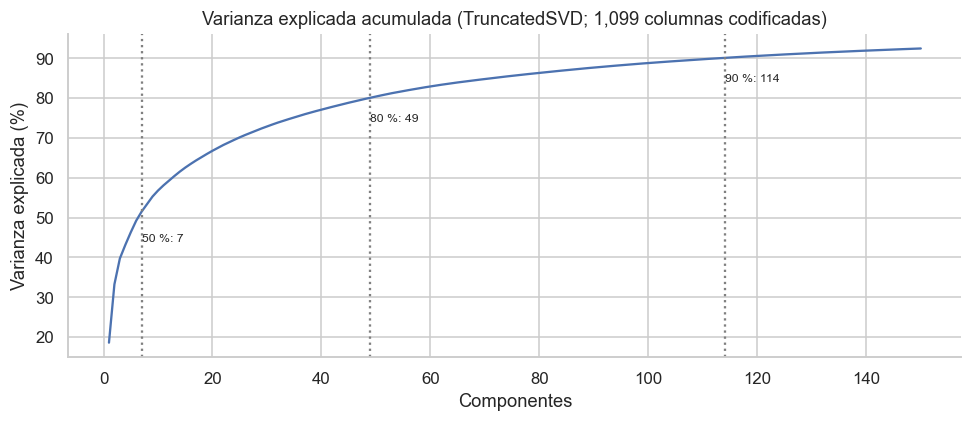
| Valor | |
|---|---|
| Casos analizados | 40,000.000 |
| Atípicos Isolation Forest (%) | 16.755 |
| Atípicos Mahalanobis (%) | 1.232 |
| Coincidencia (Jaccard) | 0.068 |
| Muestra completa | Atípicos Isolation Forest | Atípicos Mahalanobis (χ² 0,999) | |
|---|---|---|---|
| Composición del resultado (%) | |||
| Fallecimiento (Death) | 0.015 | 0.015 | 0.000 |
| Días de ausencia | 37.043 | 40.078 | 48.479 |
| Traslado / restricción | 29.550 | 31.990 | 29.209 |
| Otro caso registrable | 33.393 | 27.917 | 22.312 |
| Muestra completa | Atípicos Isolation Forest | |
|---|---|---|
| Tipo de incidente (%) | ||
| Lesión | 89.763 | 72.038 |
| Otra enfermedad | 4.410 | 15.592 |
| Afección respiratoria | 3.962 | 9.549 |
| Pérdida auditiva | 1.357 | 1.895 |
| Trastorno cutáneo | 0.420 | 0.806 |
| Intoxicación | 0.088 | 0.119 |
C:\Users\Usuario\AppData\Local\Temp\ipykernel_47692\3774106759.py:104: UserWarning: The figure layout has changed to tight
figure.tight_layout()
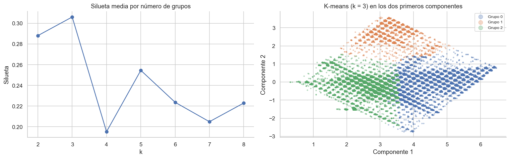
| Casos | Fallecimiento (Death) | Días de ausencia | Traslado / restricción | Otro caso registrable | Sector dominante | Tipo de incidente dominante | Tipo de establecimiento dominante | |
|---|---|---|---|---|---|---|---|---|
| Grupo | ||||||||
| 0 | 12465 | 0.016 | 37.673 | 29.458 | 32.852 | Transporte / almacenamiento | Lesión | Sector privado |
| 1 | 2715 | 0.037 | 35.138 | 34.733 | 30.092 | Transporte / almacenamiento | Lesión | Sector privado |
| 2 | 24820 | 0.012 | 36.934 | 29.029 | 34.025 | Salud / asistencia social | Lesión | Sector privado |
Interpretación. La información está muy dispersa: 10 componentes explican 56.8 % de la varianza y hacen falta 49 componentes para el 80 %. La dimensionalidad efectiva es alta porque NAICS, SOC y estado aportan cientos de indicadores casi ortogonales, y la reducción lineal no concentra la señal en pocos ejes. Isolation Forest marca 16.8 % de los casos y Mahalanobis 1.2 %. Los atípicos sobrerrepresentan enfermedades no traumáticas (sobre todo «otra enfermedad» y afecciones respiratorias) y tienen más días de ausencia y menos «otro caso registrable» que la muestra: son subpoblaciones legítimas, no errores, así que no se eliminan. Los dos criterios coinciden poco (Jaccard bajo), señal de que no existe un grupo nítido de registros anómalos. El clustering elige k = 3 (silueta 0.31). Los grupos se distinguen sobre todo por el sector dominante (Transporte / almacenamiento, Transporte / almacenamiento, Salud / asistencia social), y su asociación con el resultado es V = 0.022: son estructura del lugar de trabajo, no clases del objetivo separables.
9. Patrones temporales y precisión del registro#
Validación de la variable temporal#
Antes de describir patrones se valida date_of_incident: formato, fechas no interpretables, cobertura, zona horaria, frecuencia, marcas repetidas y huecos. Las cifras de fechas fuera de 2023 provienen del inventario completo; las demás se calculan sobre el desarrollo.
development_calendar = pd.date_range('2023-01-01', train.incident_date.max().normalize(), freq='D')
cases_by_day = train.groupby(train.incident_date.dt.normalize()).size().reindex(development_calendar, fill_value=0)
raw_time = train.time_of_incident.dropna()
parsable_time_pct = 100*raw_time.str.match(r'^\d{1,2}:\d{2}').mean()
time_validation = pd.Series({
'Formato de fecha': 'MM/DD/AAAA, sin hora ni zona horaria',
'Fechas no interpretables en desarrollo': int(train.incident_date.isna().sum()),
'Fechas de incidente fuera de 2023 (archivo completo, excluidas)': int(screening['outside_2023']),
'Rango de fechas del desarrollo': f"{train.incident_date.min().date()} a {train.incident_date.max().date()}",
'Días del calendario de desarrollo': len(development_calendar),
'Días sin ningún caso (huecos)': int(cases_by_day.eq(0).sum()),
'Casos por día: mínimo / mediana / máximo': f"{cases_by_day.min()} / {cases_by_day.median():.0f} / {cases_by_day.max()}",
'Frecuencia': 'Eventos irregulares (varios casos por día); se agrega a serie diaria regular',
'Zona horaria de las horas': 'No documentada; se asume hora local del establecimiento',
'Horas con formato HH:MM:SS interpretable (%)': f"{parsable_time_pct:.2f}",
'Marcas fecha+hora repetidas dentro de un mismo establecimiento': int(train.dropna(subset=['time_of_incident']).duplicated([GROUP, 'date_of_incident', 'time_of_incident']).sum()),
}, name='value').to_frame()
display(time_validation)
display(Markdown(f"**Interpretación.** No hay fechas no interpretables en el desarrollo y {'no hay' if cases_by_day.eq(0).sum() == 0 else 'hay'} días sin casos: la serie diaria agregada es regular y completa entre el 1 de enero y el corte con purga. "
"Las fechas fuera de 2023 se excluyen porque pertenecen a otros años de reporte. La zona horaria no está documentada, así que las horas se tratan como hora local y solo se usan a resolución horaria. "
"Las marcas fecha+hora repetidas dentro de un establecimiento pueden ser varios trabajadores lesionados en un mismo evento; no se eliminan (sección 11)."))
| Valor | |
|---|---|
| Formato de fecha | MM/DD/AAAA, sin hora ni zona horaria |
| Fechas no interpretables en desarrollo | 0 |
| Fechas de incidente fuera de 2023 (archivo completo, excluidas) | 562 |
| Rango de fechas del desarrollo | 2023-01-01 a 2023-09-23 |
| Días del calendario de desarrollo | 266 |
| Días sin ningún caso (huecos) | 0 |
| Casos por día: mínimo / mediana / máximo | 443 / 1134 / 1371 |
| Frecuencia | Eventos irregulares (varios casos por día); se... |
| Zona horaria de las horas | No documentada; se asume hora local del establ... |
| Horas con formato HH:MM:SS interpretable (%) | 100.00 |
| Marcas fecha+hora repetidas dentro de un mismo establecimiento | 3859 |
Interpretación. No hay fechas no interpretables en el desarrollo y no hay días sin casos: la serie diaria agregada es regular y completa entre el 1 de enero y el corte con purga. Las fechas fuera de 2023 se excluyen porque pertenecen a otros años de reporte. La zona horaria no está documentada, así que las horas se tratan como hora local y solo se usan a resolución horaria. Las marcas fecha+hora repetidas dentro de un establecimiento pueden ser varios trabajadores lesionados en un mismo evento; no se eliminan (sección 11).
monthly = pd.crosstab(train.incident_date.dt.month, train[TARGET]).reindex(index=range(1,10), columns=list(OUTCOMES), fill_value=0)
monthly.columns = list(OUTCOMES.values())
display(monthly.assign(total_cases=monthly.sum(axis=1)))
fig, axes = plt.subplots(1,2,figsize=(13,4))
monthly.sum(axis=1).plot.bar(ax=axes[0],color='#377eb8')
axes[0].set(title='Conteos mensuales de casos: entrenamiento',xlabel='Mes del incidente',ylabel='Casos')
monthly.div(monthly.sum(axis=1),axis=0).mul(100).plot(ax=axes[1],marker='o')
axes[1].set(title='Composición mensual del resultado: entrenamiento',xlabel='Mes del incidente',ylabel='Casos dentro del mes (%)',xticks=range(1,10))
axes[1].legend(fontsize=8); plt.tight_layout(); plt.show()
fig, axes = plt.subplots(1,2,figsize=(12,4))
for ax,c,label in zip(axes,['time_started_work_hour','time_of_incident_hour'],['Hora de inicio del trabajo','Hora del incidente']):
counts = train[c].value_counts().reindex(range(24),fill_value=0)
counts.plot.bar(ax=ax,color='#377eb8')
ax.set(title=label+': horas conocidas, entrenamiento',xlabel='Hora reportada (zona horaria no documentada)',ylabel='Casos')
plt.tight_layout(); plt.show()
time_audit = {}
for c in ['time_started_work','time_of_incident']:
raw = train[c].dropna()
time_audit[c] = {'nonmissing_raw':len(raw), 'minutes_equal_00':int(raw.str.match(r'^\d{1,2}:00:').sum()),
'unusable_or_unknown_hour':int(train[c+'_hour'].isna().sum())}
display(pd.DataFrame(time_audit).T)
| Fallecimiento (Death) | Días de ausencia | Traslado / restricción | Otro caso registrable | Total de casos | |
|---|---|---|---|---|---|
| incident_date | |||||
| 1 | 9 | 12806 | 8741 | 9642 | 31198 |
| 2 | 10 | 11343 | 8299 | 9312 | 28964 |
| 3 | 7 | 11638 | 9515 | 10417 | 31577 |
| 4 | 10 | 10224 | 8367 | 9561 | 28162 |
| 5 | 3 | 10720 | 9230 | 10533 | 30486 |
| 6 | 5 | 10708 | 9487 | 10473 | 30673 |
| 7 | 7 | 11267 | 9510 | 10707 | 31491 |
| 8 | 11 | 12427 | 9907 | 11399 | 33744 |
| 9 | 7 | 8564 | 6792 | 7858 | 23221 |
C:\Users\Usuario\AppData\Local\Temp\ipykernel_47692\3774106759.py:104: UserWarning: The figure layout has changed to tight
figure.tight_layout()
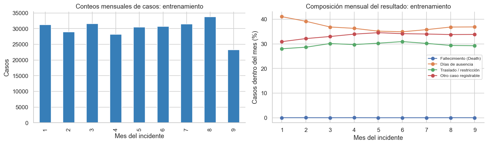
C:\Users\Usuario\AppData\Local\Temp\ipykernel_47692\3774106759.py:104: UserWarning: The figure layout has changed to tight
figure.tight_layout()
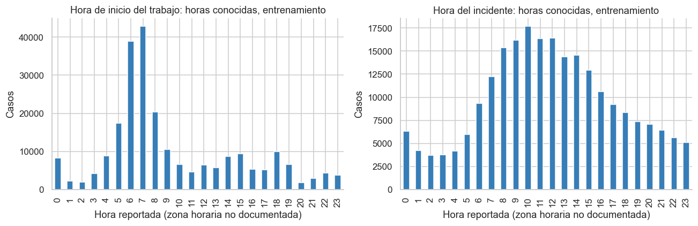
| Registros originales presentes | Minutos iguales a 00 | Hora desconocida o no utilizable | |
|---|---|---|---|
| time_started_work | 236501 | 149440 | 33015 |
| time_of_incident | 235611 | 81089 | 36277 |
# El desarrollo termina antes de la purga de siete días: esos días no son días con cero casos.
calendar = pd.date_range('2023-01-01', train.incident_date.max().normalize(), freq='D')
daily_cases = (
train.groupby(train.incident_date.dt.normalize())
.size()
.reindex(calendar, fill_value=0)
)
rolling7 = daily_cases.rolling(7, center=True, min_periods=1).mean()
fig, ax = plt.subplots(figsize=(14, 4))
ax.plot(daily_cases.index, daily_cases.values, alpha=0.35, label='Casos diarios')
ax.plot(rolling7.index, rolling7.values, linewidth=2, label='Media móvil de 7 días')
ax.set(title='Casos reportados por fecha del incidente: entrenamiento',
xlabel='Fecha', ylabel='Casos')
ax.legend()
plt.tight_layout()
plt.show()
weekday_order = ['Monday','Tuesday','Wednesday','Thursday','Friday','Saturday','Sunday']
weekday_es = {
'Monday':'Lunes','Tuesday':'Martes','Wednesday':'Miércoles',
'Thursday':'Jueves','Friday':'Viernes','Saturday':'Sábado','Sunday':'Domingo'
}
weekday = pd.crosstab(train.incident_date.dt.day_name(), train[TARGET]).reindex(weekday_order)
weekday.columns = [OUTCOMES[c] for c in weekday.columns]
weekday.index = [weekday_es[d] for d in weekday.index]
display(weekday.assign(Total=weekday.sum(axis=1)))
fig, axes = plt.subplots(1, 2, figsize=(13, 4))
weekday.sum(axis=1).plot.bar(ax=axes[0])
axes[0].set(title='Casos por día de la semana', xlabel='', ylabel='Casos')
weekday.div(weekday.sum(axis=1), axis=0).mul(100).plot(ax=axes[1], marker='o')
axes[1].set(title='Composición del resultado por día de la semana',
xlabel='', ylabel='Casos dentro del día (%)')
axes[1].legend(fontsize=7)
plt.tight_layout()
plt.show()
x = daily_cases.to_numpy(dtype=float)
x_centered = x - x.mean()
denom = np.dot(x_centered, x_centered)
max_lag = 30
acf_vals = [1.0]
for lag in range(1, max_lag + 1):
acf_vals.append(
np.dot(x_centered[:-lag], x_centered[lag:]) / denom if denom else np.nan
)
fig, ax = plt.subplots(figsize=(10, 4))
ax.stem(range(max_lag + 1), acf_vals)
ax.set(title='Autocorrelación descriptiva de conteos diarios',
xlabel='Rezago (días)', ylabel='ACF')
plt.tight_layout()
plt.show()
try:
from statsmodels.tsa.seasonal import STL
from statsmodels.tsa.stattools import adfuller, kpss, pacf
pacf_values=pacf(daily_cases.astype(float),nlags=30,method='ywm')
fig,ax=plt.subplots(figsize=(10,4))
ax.stem(range(31),pacf_values)
ax.set(title='PACF descriptiva de conteos diarios',xlabel='Rezago (días)',ylabel='PACF')
plt.tight_layout();plt.show()
stl = STL(daily_cases.astype(float), period=7, robust=True).fit()
fig = stl.plot()
fig.set_size_inches(12, 8)
fig.suptitle('Descomposición STL de conteos diarios (periodicidad semanal)', y=1.01)
plt.tight_layout()
plt.show()
adf_stat, adf_p, *_ = adfuller(daily_cases.astype(float), autolag='AIC')
import warnings
with warnings.catch_warnings(record=True) as kpss_warnings:
warnings.simplefilter('always')
kpss_stat, kpss_p, *_ = kpss(daily_cases.astype(float), regression='c', nlags='auto')
kpss_label = '> 0.10' if kpss_p == .1 and kpss_warnings else f'{kpss_p:.3f}'
display(pd.DataFrame({
'Prueba': ['ADF', 'KPSS'],
'Estadístico': [adf_stat, kpss_stat],
'p-valor': [f'{adf_p:.3f}', kpss_label],
'Hipótesis nula': ['raíz unitaria / no estacionaria', 'estacionaria']
}))
except ImportError:
raise RuntimeError('statsmodels requerido para completar el EDA temporal')
except Exception as exc:
raise RuntimeError('Fallo en diagnósticos temporales') from exc
from osha_review_checks import temporal_supplement
temporal_extra = temporal_supplement(train, display, plt, Markdown)
adf_reject, kpss_reject = adf_p < 0.05, kpss_p < 0.05
stationarity_reading = {
(True, False): 'ambas pruebas son compatibles con una serie estacionaria alrededor de un nivel',
(False, False): 'el resultado es inconcluso (ninguna prueba rechaza su nula)',
(True, True): 'las señales son mixtas, compatibles con estacionariedad alrededor de cambios de nivel o tendencia',
(False, True): 'ambas pruebas apuntan a no estacionariedad',
}[(adf_reject, kpss_reject)]
display(Markdown(f'ADF p = {adf_p:.3f} ({"rechaza" if adf_reject else "no rechaza"} raíz unitaria); KPSS p {kpss_label} ({"rechaza" if kpss_reject else "no rechaza"} estacionariedad). Son nulas diferentes: {stationarity_reading}. La cota de KPSS procede de su tabla, no de una probabilidad exacta. Con un solo año y un patrón semanal fuerte, estas pruebas describen la serie agregada de reportes y no justifican por sí solas una transformación.'))
lag7 = temporal_extra['lags'].set_index('Rezago (días)').loc[7]
away_range = temporal_extra['heterogeneity']['Rango entre trimestres de proporción de ausencia']
display(Markdown(f"La correlación agregada manufactura–ausencia a siete días pasa de **{lag7['Correlación: proporción manufactura t-k / ausencia t']:.3f}** a **{lag7['Correlación tras centrar por día semanal']:.3f}** al centrar por día semanal: gran parte de esa asociación coincide con el calendario, sin probar causalidad. Entre los **{temporal_extra['selected_establishments']:,} establecimientos** elegibles, la mediana del rango trimestral de proporción de ausencia es **{away_range.median():.3f}** ({100*away_range.median():.1f} puntos porcentuales). Los volúmenes y composiciones cambian dentro de las entidades; no basta con considerar cada caso independiente. Estos diagnósticos describen el desarrollo y no se convierten en predictores ni cambian el corte."))
C:\Users\Usuario\AppData\Local\Temp\ipykernel_47692\3774106759.py:104: UserWarning: The figure layout has changed to tight
figure.tight_layout()
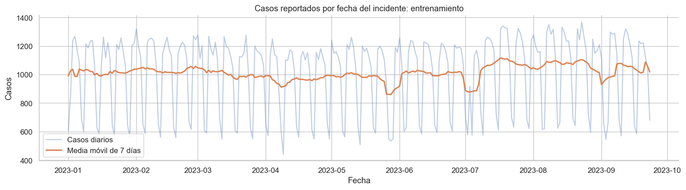
| Fallecimiento (Death) | Días de ausencia | Traslado / restricción | Otro caso registrable | Total | |
|---|---|---|---|---|---|
| Lunes | 14 | 16542 | 13272 | 14269 | 44097 |
| Martes | 12 | 16558 | 13825 | 15319 | 45714 |
| Miércoles | 10 | 16724 | 14088 | 15485 | 46307 |
| Jueves | 8 | 16316 | 13747 | 15244 | 45315 |
| Viernes | 13 | 15064 | 11946 | 14145 | 41168 |
| Sábado | 10 | 9791 | 6853 | 8164 | 24818 |
| Domingo | 2 | 8702 | 6117 | 7276 | 22097 |
C:\Users\Usuario\AppData\Local\Temp\ipykernel_47692\3774106759.py:104: UserWarning: The figure layout has changed to tight
figure.tight_layout()
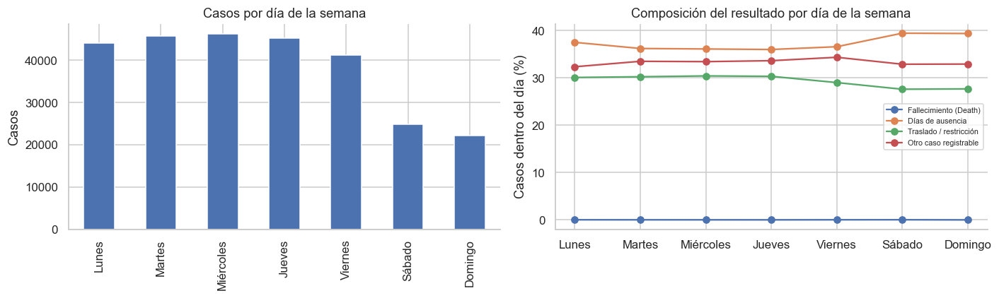
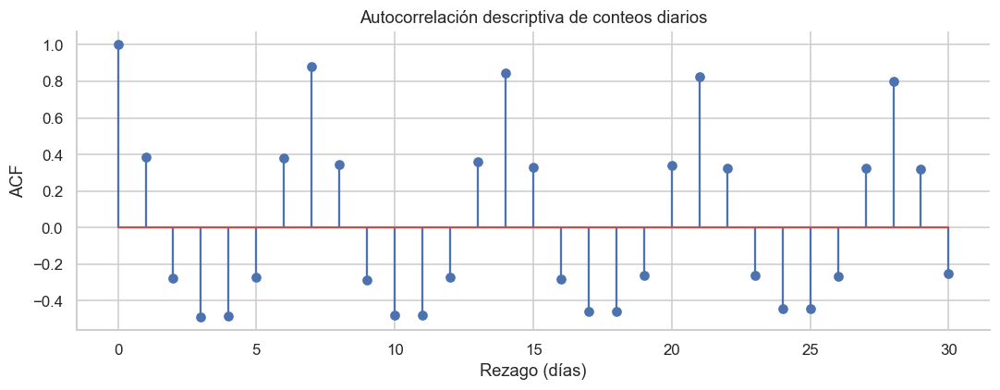
C:\Users\Usuario\AppData\Local\Temp\ipykernel_47692\3774106759.py:104: UserWarning: The figure layout has changed to tight
figure.tight_layout()
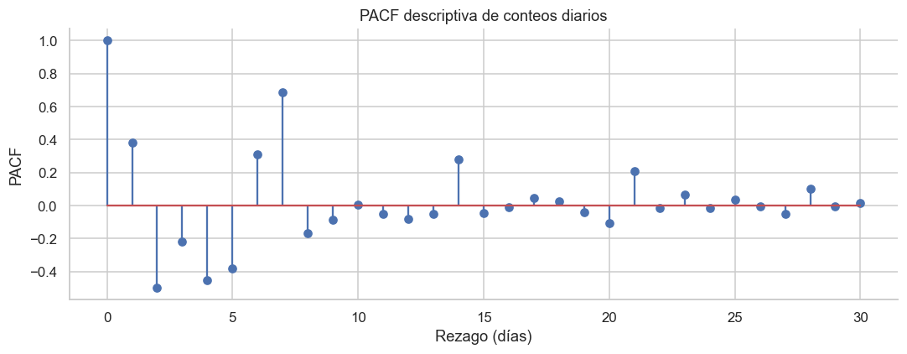
C:\Users\Usuario\AppData\Local\Temp\ipykernel_47692\1053994415.py:69: UserWarning: The figure layout has changed to tight
plt.tight_layout()
C:\Users\Usuario\AppData\Local\Temp\ipykernel_47692\3774106759.py:104: UserWarning: The figure layout has changed to tight
figure.tight_layout()
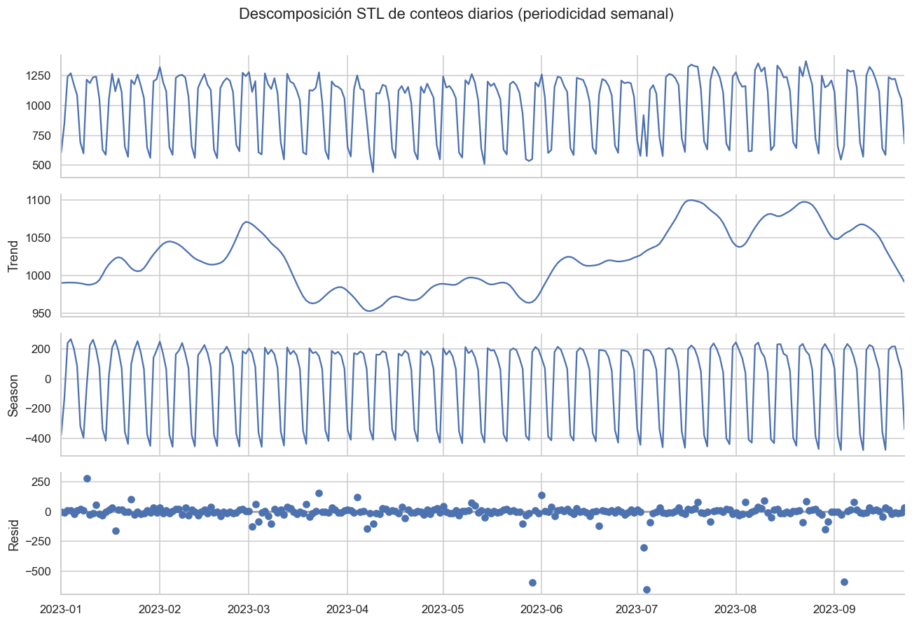
| Prueba | Estadístico | p-valor | Hipótesis nula | |
|---|---|---|---|---|
| 0 | ADF | -2.529 | 0.109 | raíz unitaria / no estacionaria |
| 1 | KPSS | 0.226 | > 0.10 | estacionaria |
C:\Users\Usuario\AppData\Local\Temp\ipykernel_47692\3774106759.py:104: UserWarning: The figure layout has changed to tight
figure.tight_layout()
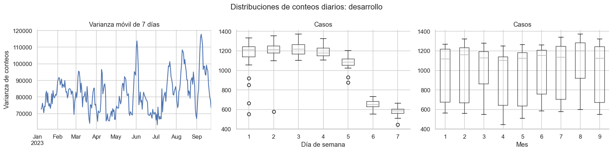
| Rezago (días) | Días utilizables | Correlación: proporción manufactura t-k / ausencia t | Correlación tras centrar por día semanal | |
|---|---|---|---|---|
| 0 | 0 | 266 | -0.475 | -0.174 |
| 1 | 1 | 265 | -0.270 | -0.095 |
| 2 | 7 | 259 | -0.449 | -0.036 |
| 3 | 14 | 252 | -0.451 | -0.026 |
| Casos diarios | Desviación respecto al día semanal | |||
|---|---|---|---|---|
| Media | Desviación estándar | Media | Desviación estándar | |
| 1 | 1,006.387 | 266.763 | -3.776 | 69.589 |
| 2 | 1,034.429 | 274.412 | 21.211 | 35.337 |
| 3 | 1,018.613 | 258.046 | -9.277 | 58.075 |
| 4 | 938.733 | 264.345 | -48.090 | 48.821 |
| 5 | 983.419 | 272.917 | -47.295 | 114.242 |
| 6 | 1,022.433 | 252.392 | 0.901 | 33.702 |
| 7 | 1,015.839 | 290.048 | 23.414 | 140.635 |
| 8 | 1,088.516 | 272.261 | 56.767 | 62.965 |
| 9 | 1,009.609 | 292.284 | 8.998 | 119.743 |
El mayor contraste descriptivo entre ventanas consecutivas de 28 días aparece en 2023-07-07, con diferencia 96.9 casos/día tras centrar por día semanal. Es un máximo exploratorio, no una prueba de cambio estructural; no se usa para cambiar el corte.
| Rango entre trimestres de proporción del volumen propio | Rango entre trimestres de proporción de ausencia | |
|---|---|---|
| Conteo | 1,325.000 | 1,325.000 |
| Media | 0.182 | 0.196 |
| Desviación estándar | 0.129 | 0.142 |
| Mínimo | 0.000 | 0.000 |
| 25% | 0.094 | 0.091 |
| 50% | 0.155 | 0.167 |
| 75% | 0.229 | 0.267 |
| 90% | 0.333 | 0.385 |
| Máximo | 0.892 | 1.000 |
Heterogeneidad: 1,325 establecimientos con ≥30 casos de desarrollo y presencia en los tres trimestres, criterio descriptivo fijado antes del cálculo. No se publican sus identidades. Las correlaciones agregadas no prueban relaciones individuales ni capacidad predictiva. El calendario se describe por semana y mes; no se atribuyen cambios a festivos, políticas o exposición sin datos externos.
ADF p = 0.109 (no rechaza raíz unitaria); KPSS p > 0.10 (no rechaza estacionariedad). Son nulas diferentes: el resultado es inconcluso (ninguna prueba rechaza su nula). La cota de KPSS procede de su tabla, no de una probabilidad exacta. Con un solo año y un patrón semanal fuerte, estas pruebas describen la serie agregada de reportes y no justifican por sí solas una transformación.
La correlación agregada manufactura–ausencia a siete días pasa de -0.449 a -0.036 al centrar por día semanal: gran parte de esa asociación coincide con el calendario, sin probar causalidad. Entre los 1,325 establecimientos elegibles, la mediana del rango trimestral de proporción de ausencia es 0.167 (16.7 puntos porcentuales). Los volúmenes y composiciones cambian dentro de las entidades; no basta con considerar cada caso independiente. Estos diagnósticos describen el desarrollo y no se convierten en predictores ni cambian el corte.
Componente temporal: los conteos diarios describen el flujo de reportes de incidentes de múltiples establecimientos, no una serie de riesgo individual. STL/ADF/KPSS, cuando disponibles, son diagnósticos agregados. El modelo se evalúa cronológicamente; las etiquetas no tienen una fecha histórica de disponibilidad verificada.
Alcance de validación: desarrollo hasta el 23 de septiembre y prueba octubre–diciembre en establecimientos reservados, sin cruce de grupos. La validación interna avanza en el tiempo, separa grupos y usa una purga fija de siete días, motivada por la dependencia temporal de los reportes y fijada antes de los nuevos ajustes. Los 39 fallecimientos de la prueba permiten calcular métricas, pero la sensibilidad de esa clase seguirá siendo imprecisa.
La partición responde a generalización temporal a establecimientos no utilizados para ajustar el modelo. Los casos de esos establecimientos en enero–septiembre y los casos Q4 de establecimientos de desarrollo quedan fuera del ajuste y de la prueba principal. No hay una reconstrucción de disponibilidad histórica de las etiquetas o los predictores.
9.1 Efectos de calendario y deriva del objetivo#
El enunciado pide revisar los efectos de calendario (feriados) y la deriva (covariate shift y concept drift). Los feriados federales de EE. UU. se toman del calendario de pandas, sin datos externos. Cada feriado se compara con la media de los días no feriados del mismo día de la semana, para no confundir el efecto feriado con el patrón semanal. La deriva del objetivo se mide con la distancia de variación total (TVD) entre trimestres del desarrollo. El concept drift se aproxima comparando la distribución condicional del resultado dentro de los mismos grupos de predictores (sector y tipo de incidente) entre T1 y T3. La deriva de los predictores (covariate shift) se reporta en la sección 22.
from pandas.tseries.holiday import USFederalHolidayCalendar
development_end = train.incident_date.max().normalize()
daily_development = train.groupby(train.incident_date.dt.normalize()).size().reindex(
pd.date_range('2023-01-01', development_end, freq='D'), fill_value=0)
holidays = USFederalHolidayCalendar().holidays('2023-01-01', development_end, return_name=True)
weekday_reference = daily_development.drop(holidays.index).groupby(lambda d: d.dayofweek).mean()
holiday_table = pd.DataFrame([{
'Fecha': day.date(), 'Feriado': name, 'Día': weekday_es[day.day_name()], 'Casos': int(daily_development.loc[day]),
'Media del mismo día no feriado': weekday_reference.loc[day.dayofweek],
'Razón feriado / referencia': daily_development.loc[day] / weekday_reference.loc[day.dayofweek]} for day, name in holidays.items()])
display(holiday_table)
quarter_label = 'T' + train.incident_date.dt.quarter.astype(str)
quarter_mix = pd.crosstab(quarter_label, train.outcome, normalize='index').reindex(columns=OUTCOMES.values()).mul(100)
display(quarter_mix.assign(Casos=quarter_label.value_counts().sort_index()).rename_axis('Trimestre (desarrollo)'))
def total_variation(p, q):
return 0.5*np.abs(np.asarray(p) - np.asarray(q)).sum()
target_drift = pd.DataFrame([{'Comparación': f'{a} vs {b}', 'TVD del resultado': total_variation(quarter_mix.loc[a]/100, quarter_mix.loc[b]/100)}
for a, b in [('T1', 'T2'), ('T2', 'T3'), ('T1', 'T3')]])
quarter_v, quarter_p, _ = cramers_v_bias_corrected(quarter_label, train[TARGET])
display(target_drift)
conditional_rows = []
for field, label, levels in [('industry_sector', 'Sector', train.industry_sector.value_counts().head(5).index),
('incident_type', 'Tipo de incidente', ['Lesión', 'Otra enfermedad', 'Afección respiratoria'])]:
for level in levels:
subset = train[train[field].eq(level)]
q = subset.incident_date.dt.quarter
d1 = subset.loc[q.eq(1), TARGET].value_counts(normalize=True).reindex(list(OUTCOMES), fill_value=0)
d3 = subset.loc[q.eq(3), TARGET].value_counts(normalize=True).reindex(list(OUTCOMES), fill_value=0)
conditional_rows.append({'Agrupación': label, 'Grupo': level, 'Casos T1': int(q.eq(1).sum()), 'Casos T3': int(q.eq(3).sum()),
'TVD P(resultado | grupo) T1 vs T3': total_variation(d1, d3),
'Días de ausencia T1 (%)': 100*d1[2], 'Días de ausencia T3 (%)': 100*d3[2]})
conditional_drift = pd.DataFrame(conditional_rows)
display(conditional_drift)
fig, ax = plt.subplots(figsize=(11, 4))
top_sector_cases = train[train.industry_sector.isin(train.industry_sector.value_counts().head(4).index)]
monthly_away = (top_sector_cases.groupby([top_sector_cases.incident_date.dt.month, 'industry_sector'])[TARGET]
.apply(lambda s: 100*s.eq(2).mean()).unstack())
monthly_away.plot(ax=ax, marker='o')
ax.set(title='Proporción de días de ausencia por mes dentro de los cuatro sectores principales', xlabel='Mes', ylabel='Días de ausencia (%)')
ax.legend(fontsize=8); plt.tight_layout(); plt.show()
display(Markdown(
f"**Interpretación.** Los feriados reducen claramente el número de reportes: la razón media feriado/referencia es **{holiday_table['Razón feriado / referencia'].mean():.2f}** "
f"(mínimo {holiday_table['Razón feriado / referencia'].min():.2f}, {holiday_table.loc[holiday_table['Razón feriado / referencia'].idxmin(), 'Feriado']}). "
"Es un efecto de volumen (menos gente trabajando), no necesariamente del tipo de desenlace. "
f"La composición del resultado apenas cambia entre trimestres (TVD máxima {target_drift['TVD del resultado'].max():.3f}; V trimestre–resultado {quarter_v:.3f}), "
f"y la deriva condicional dentro de sectores y tipos de incidente es de magnitud similar (TVD mediana {conditional_drift['TVD P(resultado | grupo) T1 vs T3'].median():.3f}; máxima {conditional_drift['TVD P(resultado | grupo) T1 vs T3'].max():.3f}). "
"No hay evidencia de un *concept drift* fuerte dentro de 2023, aunque sí de cambios pequeños que justifican la validación hacia adelante y no una partición aleatoria. "
"Los días de ausencia pueden seguir acumulándose después del reporte, así que los casos más recientes podrían estar registrados con menos gravedad. Esta posible deriva por maduración de la etiqueta no puede verificarse sin versiones históricas del archivo."))
| Fecha | Feriado | Día | Casos | Media del mismo día no feriado | Razón feriado / referencia | |
|---|---|---|---|---|---|---|
| 0 | 2023-01-02 | New Year's Day | Lunes | 851 | 1,210.469 | 0.703 |
| 1 | 2023-01-16 | Birthday of Martin Luther King, Jr. | Lunes | 1056 | 1,210.469 | 0.872 |
| 2 | 2023-02-20 | Washington's Birthday | Lunes | 1146 | 1,210.469 | 0.947 |
| 3 | 2023-05-29 | Memorial Day | Lunes | 553 | 1,210.469 | 0.457 |
| 4 | 2023-06-19 | Juneteenth National Independence Day | Lunes | 1091 | 1,210.469 | 0.901 |
| 5 | 2023-07-04 | Independence Day | Martes | 577 | 1,219.919 | 0.473 |
| 6 | 2023-09-04 | Labor Day | Lunes | 665 | 1,210.469 | 0.549 |
| Resultado | Fallecimiento (Death) | Días de ausencia | Traslado / restricción | Otro caso registrable | Casos |
|---|---|---|---|---|---|
| Trimestre (desarrollo) | |||||
| T1 | 0.028 | 39.010 | 28.946 | 32.016 | 91739 |
| T2 | 0.020 | 35.436 | 30.322 | 34.222 | 89321 |
| T3 | 0.028 | 36.468 | 29.629 | 33.874 | 88456 |
| Comparación | TVD del resultado | |
|---|---|---|
| 0 | T1 vs T2 | 0.036 |
| 1 | T2 vs T3 | 0.010 |
| 2 | T1 vs T3 | 0.025 |
| Agrupación | Grupo | Casos T1 | Casos T3 | TVD P(resultado | grupo) T1 vs T3 | Días de ausencia T1 (%) | Días de ausencia T3 (%) | |
|---|---|---|---|---|---|---|---|
| 0 | Sector | Salud / asistencia social | 25434 | 23120 | 0.036 | 39.601 | 36.016 |
| 1 | Sector | Transporte / almacenamiento | 18951 | 18981 | 0.035 | 46.710 | 43.259 |
| 2 | Sector | Comercio minorista | 17104 | 16572 | 0.031 | 38.248 | 36.308 |
| 3 | Sector | Manufactura | 17014 | 16146 | 0.028 | 30.863 | 29.178 |
| 4 | Sector | Comercio mayorista | 3891 | 3846 | 0.018 | 42.251 | 40.458 |
| 5 | Tipo de incidente | Lesión | 80750 | 78956 | 0.011 | 35.817 | 34.689 |
| 6 | Tipo de incidente | Otra enfermedad | 4005 | 4084 | 0.071 | 37.253 | 32.762 |
| 7 | Tipo de incidente | Afección respiratoria | 5200 | 3516 | 0.026 | 94.000 | 91.439 |
C:\Users\Usuario\AppData\Local\Temp\ipykernel_47692\3774106759.py:104: UserWarning: The figure layout has changed to tight
figure.tight_layout()
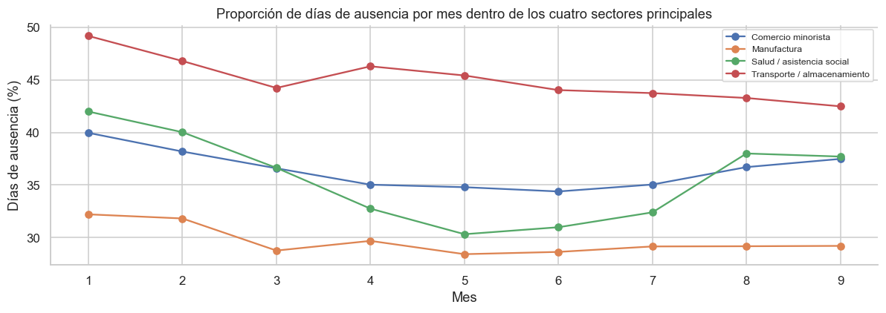
Interpretación. Los feriados reducen claramente el número de reportes: la razón media feriado/referencia es 0.70 (mínimo 0.46, Memorial Day). Es un efecto de volumen (menos gente trabajando), no necesariamente del tipo de desenlace. La composición del resultado apenas cambia entre trimestres (TVD máxima 0.036; V trimestre–resultado 0.022), y la deriva condicional dentro de sectores y tipos de incidente es de magnitud similar (TVD mediana 0.029; máxima 0.071). No hay evidencia de un concept drift fuerte dentro de 2023, aunque sí de cambios pequeños que justifican la validación hacia adelante y no una partición aleatoria. Los días de ausencia pueden seguir acumulándose después del reporte, así que los casos más recientes podrían estar registrados con menos gravedad. Esta posible deriva por maduración de la etiqueta no puede verificarse sin versiones históricas del archivo.
9.2 Componente geográfico#
El archivo no contiene latitud ni longitud. La única referencia espacial utilizable como predictor es el estado; ZIP y ciudad se excluyen por riesgo de reidentificación. Por eso las secciones 2.7–2.8 del enunciado (CRS, I de Moran, LISA, variogramas, bloques espaciales) no son aplicables: requieren coordenadas o polígonos, y geocodificar direcciones de empresas aumentaría el riesgo ético sin responder a la pregunta del proyecto. Sí se evalúa la heterogeneidad espacial entre estados, con intervalos de Wilson, y su consecuencia para la validación.
state_outcomes = pd.crosstab(train.state, train[TARGET]).reindex(columns=list(OUTCOMES), fill_value=0)
state_n = state_outcomes.sum(axis=1)
large_states = state_outcomes[state_n.ge(1000)]
n_s, k_s = large_states.sum(axis=1), large_states[2]
z = 1.959963984540054
phat = k_s/n_s; den = 1 + z**2/n_s
center = (phat + z**2/(2*n_s))/den
half = z*np.sqrt(phat*(1-phat)/n_s + z**2/(4*n_s**2))/den
state_away = pd.DataFrame({'Casos': n_s, 'Establecimientos': train.groupby('state')[GROUP].nunique().reindex(n_s.index),
'Días de ausencia (%)': 100*phat, 'IC95 inferior': 100*(center-half), 'IC95 superior': 100*(center+half)}).sort_values('Días de ausencia (%)')
fig, axes = plt.subplots(1, 2, figsize=(16, 8), gridspec_kw={'width_ratios': [1, 1.3]})
axes[0].errorbar(state_away['Días de ausencia (%)'], range(len(state_away)),
xerr=[state_away['Días de ausencia (%)']-state_away['IC95 inferior'], state_away['IC95 superior']-state_away['Días de ausencia (%)']],
fmt='o', markersize=4, color='#377eb8')
axes[0].axvline(100*train[TARGET].eq(2).mean(), color='#b2182b', linestyle='--', label='Desarrollo completo')
axes[0].set_yticks(range(len(state_away)), state_away.index)
axes[0].set(title='Días de ausencia por estado (≥1.000 casos; IC Wilson 95 %)', xlabel='Casos con días de ausencia (%)')
axes[0].legend()
top_states = state_n.sort_values(ascending=False).head(15).index
sns.heatmap(state_outcomes.loc[top_states].div(state_n.loc[top_states], axis=0).mul(100).rename(columns=OUTCOMES),
annot=True, fmt='.1f', cmap='Blues', ax=axes[1], cbar_kws={'label': 'Resultado dentro del estado (%)'})
axes[1].set(title='Composición del resultado en los 15 estados con más casos', xlabel='', ylabel='')
axes[1].tick_params(axis='x', rotation=20)
plt.tight_layout(); plt.show()
display(state_away.sort_values('Casos', ascending=False).head(15))
display(Markdown(
f"**Interpretación.** Entre los {len(state_away)} estados con al menos 1.000 casos, la proporción de días de ausencia va de **{state_away['Días de ausencia (%)'].min():.1f} %** a **{state_away['Días de ausencia (%)'].max():.1f} %**, "
"una heterogeneidad mucho mayor que la amplitud de los intervalos. Esta es la señal espacial que captura el predictor `state` (V de Cramér en 8.1). "
"Los intervalos de Wilson tratan los casos como independientes; con casos agrupados por establecimiento son demasiado estrechos, así que las diferencias entre estados cercanos no deben sobreinterpretarse. "
"Pueden reflejar composición industrial, normativa estatal de compensación laboral y prácticas de reporte, no riesgo geográfico. "
"**Consecuencia para el modelado:** el objetivo es generalizar a **establecimientos** y **periodos** nuevos, no a estados no vistos; el estado se codifica con `handle_unknown='ignore'`, así que un estado ausente del entrenamiento no rompe la predicción. "
"La partición por establecimiento es la unidad de bloqueo adecuada; si el objetivo fuera predecir en estados nuevos, se usaría `GroupKFold` por estado. "
"El problema de la unidad de área modificable (MAUP) aplica: con otra agregación (condado, ZIP) los contrastes cambiarían."))
C:\Users\Usuario\AppData\Local\Temp\ipykernel_47692\3774106759.py:104: UserWarning: The figure layout has changed to tight
figure.tight_layout()
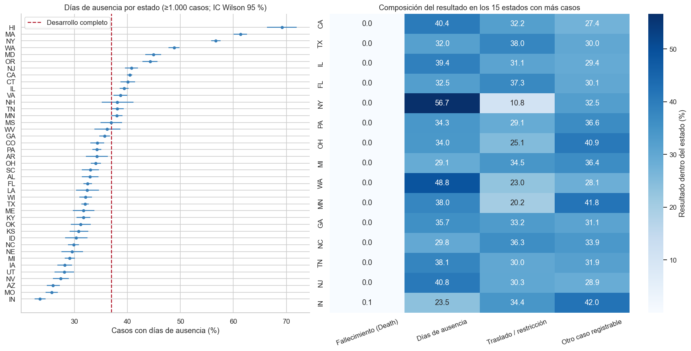
| Casos | Establecimientos | Días de ausencia (%) | IC95 inferior | IC95 superior | |
|---|---|---|---|---|---|
| state | |||||
| CA | 35858 | 3330 | 40.429 | 39.922 | 40.938 |
| TX | 17717 | 2342 | 32.048 | 31.365 | 32.739 |
| IL | 13177 | 1585 | 39.379 | 38.548 | 40.216 |
| FL | 13145 | 1802 | 32.522 | 31.726 | 33.328 |
| NY | 12483 | 1289 | 56.685 | 55.814 | 57.552 |
| PA | 11955 | 1521 | 34.262 | 33.416 | 35.117 |
| OH | 9592 | 1470 | 34.039 | 33.097 | 34.993 |
| MI | 8858 | 1290 | 29.115 | 28.178 | 30.070 |
| WA | 8693 | 860 | 48.809 | 47.759 | 49.860 |
| MN | 8559 | 1298 | 38.042 | 37.019 | 39.076 |
| GA | 8489 | 1046 | 35.705 | 34.692 | 36.731 |
| NC | 7775 | 1112 | 29.839 | 28.832 | 30.866 |
| TN | 6329 | 822 | 38.094 | 36.906 | 39.298 |
| NJ | 6271 | 725 | 40.791 | 39.581 | 42.013 |
| IN | 6244 | 998 | 23.511 | 22.475 | 24.578 |
Interpretación. Entre los 41 estados con al menos 1.000 casos, la proporción de días de ausencia va de 23.5 % a 69.2 %, una heterogeneidad mucho mayor que la amplitud de los intervalos. Esta es la señal espacial que captura el predictor state (V de Cramér en 8.1). Los intervalos de Wilson tratan los casos como independientes; con casos agrupados por establecimiento son demasiado estrechos, así que las diferencias entre estados cercanos no deben sobreinterpretarse. Pueden reflejar composición industrial, normativa estatal de compensación laboral y prácticas de reporte, no riesgo geográfico. Consecuencia para el modelado: el objetivo es generalizar a establecimientos y periodos nuevos, no a estados no vistos; el estado se codifica con handle_unknown='ignore', así que un estado ausente del entrenamiento no rompe la predicción. La partición por establecimiento es la unidad de bloqueo adecuada; si el objetivo fuera predecir en estados nuevos, se usaría GroupKFold por estado. El problema de la unidad de área modificable (MAUP) aplica: con otra agregación (condado, ZIP) los contrastes cambiarían.
10. Agrupación por establecimiento y medidas descriptivas del lugar de trabajo#
cases_per_establishment = train.groupby(GROUP).size().rename('reported_cases')
display(cases_per_establishment.describe(percentiles=[.5,.9,.95,.99]).to_frame())
largest_share = 100*cases_per_establishment.nlargest(100).sum()/len(train)
print(f'Los 100 establecimientos con más casos concentran {largest_share:.2f}% del entrenamiento.')
fig, ax = plt.subplots(figsize=(8,4))
ax.hist(np.log10(cases_per_establishment),bins=35,color='#377eb8')
ax.set(title='Volumen reportado por establecimiento: entrenamiento',xlabel='log10(casos reportados)',ylabel='Establecimientos')
plt.tight_layout(); plt.show()
establishment_outcomes = pd.crosstab(train[GROUP],train[TARGET]).reindex(columns=list(OUTCOMES),fill_value=0)
cluster_summary = pd.DataFrame({'cases':establishment_outcomes.sum(axis=1),
'distinct_outcomes':establishment_outcomes.gt(0).sum(axis=1),
'largest_outcome_share':establishment_outcomes.max(axis=1)/establishment_outcomes.sum(axis=1)})
display(cluster_summary.describe(percentiles=[.5,.9,.99]).T)
establishment_fields = ['annual_average_employees','total_hours_worked','size']
inconsistent = train.groupby(GROUP)[establishment_fields].nunique(dropna=False).gt(1).sum()
display(inconsistent.rename('establishments_with_inconsistent_values').to_frame())
establishments = train.drop_duplicates(GROUP).set_index(GROUP)
display(eda.numeric_summary(establishments,['annual_average_employees','total_hours_worked']))
display(pd.Series({
'Establecimientos con empleados <= 0':int(establishments.annual_average_employees.le(0).sum()),
'Establecimientos con horas <= 0':int(establishments.total_hours_worked.le(0).sum())
},name='count').to_frame())
display(Markdown(f'La mediana es **{cases_per_establishment.median():.0f} casos** por establecimiento; el máximo es **{cases_per_establishment.max():,}**. Los 100 mayores concentran **{largest_share:.2f} %**. Los casos no son observaciones independientes: se informa solapamiento y se remuestrean establecimientos completos.'))
| Casos reportados | |
|---|---|
| Conteo | 34,029.000 |
| Media | 7.920 |
| Desviación estándar | 26.678 |
| Mínimo | 1.000 |
| 50% | 3.000 |
| 90% | 15.000 |
| 95% | 25.000 |
| 99% | 74.000 |
| Máximo | 2,249.000 |
Los 100 establecimientos con más casos concentran 12.19% del entrenamiento.
C:\Users\Usuario\AppData\Local\Temp\ipykernel_47692\3774106759.py:104: UserWarning: The figure layout has changed to tight
figure.tight_layout()
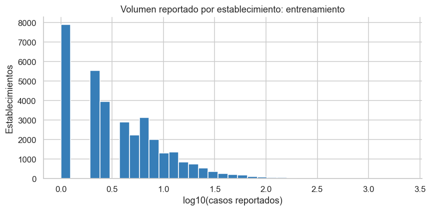
| Conteo | Media | Desviación estándar | Mínimo | 50% | 90% | 99% | Máximo | |
|---|---|---|---|---|---|---|---|---|
| Casos | 34,029.000 | 7.920 | 26.678 | 1.000 | 3.000 | 15.000 | 74.000 | 2,249.000 |
| Resultados distintos | 34,029.000 | 1.845 | 0.788 | 1.000 | 2.000 | 3.000 | 3.000 | 4.000 |
| Proporción del resultado más frecuente | 34,029.000 | 0.766 | 0.219 | 0.250 | 0.750 | 1.000 | 1.000 | 1.000 |
| Establecimientos con valores inconsistentes | |
|---|---|
| annual_average_employees | 0 |
| total_hours_worked | 0 |
| size | 0 |
| Conteo | Media | Desviación estándar | Mínimo | 25% | 50% | 75% | Máximo | |
|---|---|---|---|---|---|---|---|---|
| annual_average_employees | 34,029.000 | 260.143 | 1,996.273 | 0.000 | 62.000 | 125.000 | 222.000 | 218,234.000 |
| total_hours_worked | 34,029.000 | 622,645.468 | 15,383,901.407 | 0.000 | 101,923.000 | 197,041.000 | 370,322.000 | 2,595,152,024.000 |
| Conteo | |
|---|---|
| Establecimientos con empleados <= 0 | 6 |
| Establecimientos con horas <= 0 | 13 |
La mediana es 3 casos por establecimiento; el máximo es 2,249. Los 100 mayores concentran 12.19 %. Los casos no son observaciones independientes: se informa solapamiento y se remuestrean establecimientos completos.
Los totales anuales se resumen una sola vez por establecimiento; no se suman las copias presentes en cada caso. Si existieran inconsistencias internas, el uso del primer registro requeriría revisión. Estas variables siguen excluidas como predictores porque pueden incorporar información posterior al incidente. No hay identificador de trabajador para detectar casos recurrentes de una misma persona. Establecimientos distintos también pueden pertenecer a una misma empresa.
11. Auditoría de claves de caso y coherencia del resultado en desarrollo#
reused = train.duplicated([GROUP,'case_number'],keep=False)
reused_groups = train.loc[reused].groupby([GROUP,'case_number'],dropna=False)
death_dates = pd.to_datetime(train.date_of_death,format='%m/%d/%Y',errors='coerce')
checks = {
'Números de caso faltantes':int(train.case_number.isna().sum()),
'Identificadores ITA duplicados':int(train.id.duplicated().sum()),
'Filas con clave establecimiento/número de caso repetida':int(reused.sum()),
'Claves repetidas con varias fechas de incidente':int(reused_groups.incident_date.nunique().gt(1).sum()),
'Claves repetidas con varios resultados':int(reused_groups[TARGET].nunique().gt(1).sum()),
'Resultado de ausencia con días de ausencia <= 0':int((train[TARGET].eq(2)&train.dafw_num_away.le(0)).sum()),
'Resultado de traslado/restricción con días de restricción <= 0':int((train[TARGET].eq(3)&train.djtr_num_tr.le(0)).sum()),
'Otro caso registrable con días de ausencia/restricción positivos':int((train[TARGET].eq(4)&(train.dafw_num_away.gt(0)|train.djtr_num_tr.gt(0))).sum()),
'Casos no mortales con fecha de fallecimiento':int((train[TARGET].ne(1)&train.date_of_death.notna()).sum()),
'Fallecimientos sin fecha de fallecimiento':int((train[TARGET].eq(1)&train.date_of_death.isna()).sum()),
'Fecha de fallecimiento anterior al incidente':int((death_dates<train.incident_date).sum()),
'Fechas de fallecimiento presentes no interpretables':int((train.date_of_death.notna()&death_dates.isna()).sum()),
'Días de ausencia/restricción negativos':int((train.dafw_num_away.lt(0)|train.djtr_num_tr.lt(0)).sum())
}
display(pd.Series(checks,name='cases_or_groups').to_frame())
leakage_audit = pd.crosstab(train.outcome, [train.dafw_num_away.gt(0), train.djtr_num_tr.gt(0)])
leakage_audit.columns.names = ['Días de ausencia positivos','Días de restricción positivos']
display(leakage_audit.reindex(OUTCOMES.values()))
display(Markdown('Las discrepancias entre días y categoría registrada son alertas de calidad. No permiten saber qué campo es erróneo, por lo que se conserva el objetivo y se excluyen días como predictores. Repetir el número de caso no demuestra duplicación, especialmente cuando cambian fecha o desenlace.'))
display(train.establishment_type.fillna('Faltante').value_counts().rename('Casos por código de establecimiento').to_frame())
display(Markdown(f'El código de establecimiento **0 ({int(train.establishment_type.eq("0").sum())} casos de desarrollo)** no está definido en el diccionario consultado, que documenta 1–3. Se marca semánticamente como **no documentado**, pero se conserva como categoría literal 0 en el modelo ya fijado. No se presupone que signifique privado ni se fusiona silenciosamente con faltantes.'))
| Casos o grupos | |
|---|---|
| Números de caso faltantes | 6 |
| Identificadores ITA duplicados | 0 |
| Filas con clave establecimiento/número de caso repetida | 25173 |
| Claves repetidas con varias fechas de incidente | 3228 |
| Claves repetidas con varios resultados | 2299 |
| Resultado de ausencia con días de ausencia <= 0 | 623 |
| Resultado de traslado/restricción con días de restricción <= 0 | 366 |
| Otro caso registrable con días de ausencia/restricción positivos | 424 |
| Casos no mortales con fecha de fallecimiento | 0 |
| Fallecimientos sin fecha de fallecimiento | 0 |
| Fecha de fallecimiento anterior al incidente | 0 |
| Fechas de fallecimiento presentes no interpretables | 0 |
| Días de ausencia/restricción negativos | 0 |
| Días de ausencia positivos | False | True | ||
|---|---|---|---|---|
| Días de restricción positivos | False | True | False | True |
| Resultado | ||||
| Fallecimiento (Death) | 59 | 0 | 10 | 0 |
| Días de ausencia | 337 | 286 | 70119 | 28955 |
| Traslado / restricción | 312 | 79226 | 54 | 256 |
| Otro caso registrable | 89478 | 249 | 128 | 47 |
Las discrepancias entre días y categoría registrada son alertas de calidad. No permiten saber qué campo es erróneo, por lo que se conserva el objetivo y se excluyen días como predictores. Repetir el número de caso no demuestra duplicación, especialmente cuando cambian fecha o desenlace.
| Casos por código de establecimiento | |
|---|---|
| establishment_type | |
| 1 | 252547 |
| 2 | 8743 |
| 3 | 7676 |
| Faltante | 307 |
| 0 | 243 |
El código de establecimiento 0 (243 casos de desarrollo) no está definido en el diccionario consultado, que documenta 1–3. Se marca semánticamente como no documentado, pero se conserva como categoría literal 0 en el modelo ya fijado. No se presupone que signifique privado ni se fusiona silenciosamente con faltantes.
El número de caso del empleador no constituye una clave fiable para deduplicar: puede repetirse en fechas y resultados distintos. Las coincidencias tras eliminar identificadores administrativos son sospechosas, pero también pueden surgir por anonimización o descripciones generales idénticas. No se deduplican ni se cambian etiquetas silenciosamente. Las discrepancias entre resultado y días son alertas de calidad, no autorización para reconstruir el objetivo usando información filtrada. La partición temporal no impide coincidencias de contenido entre periodos. No se dispone de una clave fiable de caso más allá del ID ITA; esta incertidumbre se declara y las claves repetidas no se eliminan automáticamente.
11.1 Entidades relacionadas entre desarrollo y prueba#
La separación primaria es por establecimiento, pero varios establecimientos pueden pertenecer a la misma empresa (mismo EIN o razón social) y compartir prácticas de registro. Aquí se cuantifica cuántos casos de prueba pertenecen a empresas que también tienen establecimientos en el desarrollo. Los identificadores se usan solo para este conteo agregado: no se muestran ni entran al modelo. La sección 18.1 evalúa si el desempeño difiere en ese subconjunto.
link = pd.read_csv(DATA_PATH, usecols=['id', GROUP, 'ein', 'company_name', 'date_of_incident'], dtype=str, encoding='latin1')
link['date'] = pd.to_datetime(link.date_of_incident, format='%m/%d/%Y', errors='coerce')
link = link.loc[link.date.dt.year.eq(2023)]
development_link = link.loc[link.id.isin(set(train.id))]
test_link = link.loc[link[GROUP].isin(heldout_group_ids) & link.date.ge(cutoff)]
assert len(development_link) == len(train) and len(test_link) == holdout_rows
def normalized_key(values):
key = values.fillna('').str.upper().str.replace(r'[^A-Z0-9]', '', regex=True)
return key.where(key.str.len().gt(0))
def valid_ein(values):
key = normalized_key(values)
ok = key.str.fullmatch(r'\d{9}').fillna(False).astype(bool) & ~key.str.fullmatch(r'(\d)\1{8}').fillna(False).astype(bool)
return key.where(ok)
entity_rows = []
for label, builder, column in [('EIN válido (9 dígitos)', valid_ein, 'ein'), ('Razón social normalizada', normalized_key, 'company_name')]:
development_keys = set(builder(development_link[column]).dropna())
test_keys = builder(test_link[column])
shared = test_keys.isin(development_keys).to_numpy()
entity_rows.append({'Clave de empresa': label, 'Casos de prueba con clave': int(test_keys.notna().sum()),
'Casos de prueba cuya empresa está en desarrollo': int(shared.sum()),
'% de casos de prueba': 100*shared.mean(),
'Establecimientos de prueba afectados': int(test_link.loc[shared, GROUP].nunique()),
'% de establecimientos de prueba': 100*test_link.loc[shared, GROUP].nunique()/test_link[GROUP].nunique(),
'% de casos de prueba en las 5 empresas compartidas más grandes': 100*test_keys[shared].value_counts().head(5).sum()/len(test_link)})
if column == 'ein':
test_shared_firm = pd.Series(shared, index=test_link.id.to_numpy())
entity_overlap = pd.DataFrame(entity_rows)
display(entity_overlap)
ein_row = entity_overlap.iloc[0]
display(Markdown(
f"**Interpretación.** Aunque ningún establecimiento está en ambas particiones, **{ein_row['% de casos de prueba']:.1f} %** de los casos de prueba ({ein_row['% de establecimientos de prueba']:.1f} % de sus establecimientos) "
f"pertenecen a una empresa (EIN) con otros establecimientos en el desarrollo, y las cinco mayores concentran {ein_row['% de casos de prueba en las 5 empresas compartidas más grandes']:.1f} % de la prueba. "
"Es consecuencia de empresas con muchos establecimientos distribuidos entre ambas particiones. No es fuga directa, porque ningún caso ni lugar se repite, pero sí una **dependencia a nivel empresa** "
"que puede hacer la prueba algo optimista si la empresa determina cómo se clasifican los desenlaces. La partición no se cambia, porque el protocolo se fijó antes de ver resultados; "
"la sensibilidad se reporta en 18.1 y una partición por EIN queda como variante para el siguiente entregable."))
del link, development_link, test_link
| Clave de empresa | Casos de prueba con clave | Casos de prueba cuya empresa está en desarrollo | % de casos de prueba | Establecimientos de prueba afectados | % de establecimientos de prueba | % de casos de prueba en las 5 empresas compartidas más grandes | |
|---|---|---|---|---|---|---|---|
| 0 | EIN válido (9 dígitos) | 110095 | 66332 | 52.070 | 17811 | 52.106 | 16.201 |
| 1 | Razón social normalizada | 120075 | 70775 | 55.557 | 18794 | 54.982 | 16.371 |
Interpretación. Aunque ningún establecimiento está en ambas particiones, 52.1 % de los casos de prueba (52.1 % de sus establecimientos) pertenecen a una empresa (EIN) con otros establecimientos en el desarrollo, y las cinco mayores concentran 16.2 % de la prueba. Es consecuencia de empresas con muchos establecimientos distribuidos entre ambas particiones. No es fuga directa, porque ningún caso ni lugar se repite, pero sí una dependencia a nivel empresa que puede hacer la prueba algo optimista si la empresa determina cómo se clasifican los desenlaces. La partición no se cambia, porque el protocolo se fijó antes de ver resultados; la sensibilidad se reporta en 18.1 y una partición por EIN queda como variante para el siguiente entregable.
11.2 Referencia preliminar histórica: resultados conservados#
La evaluación preliminar utilizó imputación constante y codificación one-hot aprendidas solo en entrenamiento, seguidas de LogisticRegression(class_weight='balanced', max_iter=1000, random_state=42). Se conserva su advertencia y sus resultados como registro histórico; no son el ajuste numéricamente corregido presentado después. No se vuelve a ejecutar este modelo histórico.
display(pd.DataFrame({
'logistic_regression':[baseline['balanced_accuracy'],baseline['accuracy'],baseline['macro_f1']],
'constant_reference':[baseline['constant_classifier_balanced_accuracy_reference'],baseline['majority_accuracy_reference'],np.nan]
},index=['Exactitud balanceada','Exactitud','F1 macro']))
display(pd.DataFrame(baseline['confusion_matrix'],index=[f'Observado: {OUTCOMES[c]}' for c in baseline['confusion_matrix_labels']],
columns=[f'Predicho: {OUTCOMES[c]}' for c in baseline['confusion_matrix_labels']]))
print('Iteraciones registradas:',baseline['iterations'])
print('Advertencias históricas del cribado:', len(baseline['warnings']))
if baseline['warnings']:
print('ConvergenceWarning: lbfgs alcanzó el límite de 1.000 iteraciones sin converger. Se conserva la advertencia del cribado; el ajuste corregido (newton-cg) se presenta más adelante.')
display(pd.DataFrame({OUTCOMES[int(c)]:v for c,v in baseline['classification_report'].items() if c in ['1','2','3','4']}).T)
| LogisticRegression histórico | Referencia constante | |
|---|---|---|
| Exactitud balanceada | 0.419 | 0.250 |
| Exactitud | 0.480 | 0.366 |
| F1 macro | 0.374 | NaN |
| Predicho: Fallecimiento (Death) | Predicho: Días de ausencia | Predicho: Traslado / restricción | Predicho: Otro caso registrable | |
|---|---|---|---|---|
| Observado: Fallecimiento (Death) | 15 | 15 | 15 | 23 |
| Observado: Días de ausencia | 6008 | 23717 | 18743 | 17041 |
| Observado: Traslado / restricción | 4760 | 8155 | 28231 | 11899 |
| Observado: Otro caso registrable | 4197 | 8774 | 13483 | 33875 |
Iteraciones registradas: [1000]
Advertencias históricas del cribado: 1
ConvergenceWarning: lbfgs alcanzó el límite de 1.000 iteraciones sin converger. Se conserva la advertencia del cribado; el ajuste corregido (newton-cg) se presenta más adelante.
| Precisión | Sensibilidad | F1 | Casos | |
|---|---|---|---|---|
| Fallecimiento (Death) | 0.001 | 0.221 | 0.002 | 68.000 |
| Días de ausencia | 0.583 | 0.362 | 0.447 | 65,509.000 |
| Traslado / restricción | 0.467 | 0.532 | 0.497 | 53,045.000 |
| Otro caso registrable | 0.539 | 0.562 | 0.550 | 60,329.000 |
12. Síntesis del EDA y continuidad#
Hallazgo |
Implicación |
Decisión aplicada |
|---|---|---|
Death es extremadamente infrecuente |
Exactitud global oculta errores de la clase rara |
Conservar cuatro clases; informar métricas por clase, soporte e incertidumbre; no cambiar umbrales |
Días de ausencia/restricción y fecha de muerte revelan desenlace |
Fuga directa si se usan como predictores |
Excluirlos del modelo; usarlos solo para auditoría |
SOC fue codificado retrospectivamente |
No hay prueba de disponibilidad al ocurrir el incidente |
Formular clasificación retrospectiva; no alerta temprana |
NAICS, SOC y horas presentan faltantes/códigos especiales |
Cero y faltante no son universalmente equivalentes |
Mantener reglas documentadas e imputación constante dentro del pipeline |
Códigos nominales y horas requieren decisiones distintas según propósito |
Distancias sobre identificadores no son magnitudes |
One-hot en modelo; SVD exploratorio con horas estandarizadas claramente separado |
Casos concentrados y repetidos dentro de establecimientos |
Filas dependientes y posible optimismo al reutilizar entidades |
Separar empresas en desarrollo, validación y prueba; bootstrap por establecimiento |
Patrón semanal, cambios de composición y dependencia de errores |
Estabilidad temporal y precisión de intervalos no garantizadas |
Validación hacia adelante con purga de siete días; EDA temporal solo de desarrollo |
Números de caso repetidos no identifican inequívocamente duplicados |
Deduplicar por clave puede eliminar incidentes reales |
Auditoría de ID, clave y contenido; conservar datos y documentar incertidumbre |
Asociación categórica no demuestra causalidad ni fuga por sí sola |
Significancia clásica no resuelve dependencia |
Priorizar tamaños de asociación y disponibilidad; no seleccionar predictores por p-valores |
Archivo de casos reportados con cobertura selectiva y sin población expuesta |
No estima riesgo de lesión ni describe a todos los trabajadores |
Limitar conclusiones a resultados entre casos publicados; no clasificar empleadores como peligrosos |
Faltantes de SOC y horas no son MCAR: dependen de sector/establecimiento y se agrupan por empresa (5.2.1) |
Imputar la moda o eliminar filas sesgaría hacia empleadores que codifican mejor |
Categoría explícita |
Horas cíclicas, casi independientes del resultado; categorías raras abundantes en NAICS/SOC (5.1.1, 8.1.1) |
Una relación lineal hora–resultado no está justificada; las categorías raras tienen coeficientes inestables |
Horas como categorías; regularización L2; agrupación jerárquica y horas transcurridas como candidatas para el siguiente entregable |
Asociación fuerte entre industria, ocupación y tipo de establecimiento; redundancia |
Coeficientes individuales poco interpretables en esos bloques |
Interpretar contrastes dentro de un mismo predictor (sección 20), no efectos aislados |
Subpoblaciones y atípicos multivariados son combinaciones raras legítimas (8.3) |
Eliminarlos quitaría casos de enfermedades y ocupaciones poco frecuentes |
Sin eliminación de atípicos |
Efecto feriado y deriva moderada entre trimestres (9.1) |
La validación aleatoria sería optimista |
Validación y prueba hacia adelante con purga |
Sin coordenadas; heterogeneidad entre estados (9.2) |
Análisis espacial puntual no aplicable |
Estado como predictor categórico; separación por establecimiento |
Empresas con establecimientos en ambas particiones (11.1) |
Posible optimismo por prácticas de registro compartidas |
Cuantificado y evaluado como sensibilidad (18.1) |
La matriz de requisitos distingue evidencia, decisiones y límites. Se conserva el objetivo de cuatro clases y no se optimiza el modelo para mejorar resultados.
assert (DATA_PATH.stat().st_size,DATA_PATH.stat().st_mtime_ns) == raw_signature
assert hashlib.sha256(UTILS_PATH.read_bytes()).hexdigest() == utils_hash
assert set(feature_view.columns) == set(baseline['features'])
assert not set(feature_view.columns)&{'id',GROUP,'case_number','dafw_num_away','djtr_num_tr','date_of_death'}
assert len(train)==269516 and train.incident_date.max()<pd.Timestamp('2023-09-24')
assert not set(train[GROUP]).intersection(test_group_ids)
assert train[TARGET].value_counts().sort_index().to_dict()=={1:69,2:99697,3:79848,4:89902}
assert len(plt.get_fignums())==0
print('Verificado: datos originales intactos; EDA restringido a enero–septiembre.')
Verificado: datos originales intactos; EDA restringido a enero–septiembre.
12.1 Preprocesamiento: Pipeline y trazabilidad EDA → decisión#
Paso del |
Qué hace |
Hallazgo del EDA que lo motiva |
|---|---|---|
|
Selecciona los 8 predictores; convierte SOC |
5.2 y 9: códigos especiales de SOC y horas desconocidas; muchos minutos registrados como |
|
Convierte cada faltante en una categoría explícita |
5.2.1: los faltantes no son MCAR y se agrupan por establecimiento; imputar la moda o borrar filas sesgaría la muestra |
|
Codifica los códigos nominales y las horas como indicadores |
5.1: NAICS, SOC y estado son nominales de alta cardinalidad; 8.1.1: horas cíclicas sin relación monótona con el resultado; códigos nuevos en prueba no rompen la predicción |
Sin escalado |
— |
Todas las columnas resultantes son binarias 0/1 |
Sin eliminación de atípicos |
Se conservan todas las filas |
5.1.1 y 8.3: los «atípicos» son horas válidas o combinaciones raras legítimas |
|
Pondera las clases de forma inversa a su frecuencia y contrae los coeficientes con poco soporte |
6: Death = 0,026 %; 5.1.1: categorías raras; 8.1.2: colinealidad entre industria y ocupación |
Variables excluidas |
Días de ausencia/restricción, fecha de muerte, OIICS |
3, 8.1 y 11: fuga directa o disponibilidad no demostrada |
El Pipeline completo se ajusta dentro de fit_cached solo con las filas de entrenamiento de cada pliegue o del desarrollo completo. La prueba solo se transforma con los parámetros aprendidos.
Ingeniería de características candidata. No se incluye en el modelo base, para respetar el protocolo fijado antes de ver resultados, y se evaluará solo con validación interna en el siguiente entregable:
horas transcurridas desde el inicio del turno (8.1.1);
codificación cíclica seno/coseno de la hora;
jerarquía NAICS de 2–3 dígitos y grupo mayor SOC, para agrupar categorías raras (5.1.1);
indicadores de feriado y de día de la semana (9.1).
from sklearn import set_config
from osha_deliverable_utils import make_pipeline as build_pipeline
set_config(display='diagram')
display(build_pipeline())
Pipeline(steps=[('features',
FunctionTransformer(func=<function prepare_features at 0x0000023B048C9820>)),
('imputer',
SimpleImputer(fill_value='Unknown', strategy='constant')),
('onehot', OneHotEncoder(handle_unknown='ignore')),
('classifier',
LogisticRegression(class_weight='balanced', max_iter=1000,
random_state=42, solver='newton-cg'))])In a Jupyter environment, please rerun this cell to show the HTML representation or trust the notebook. On GitHub, the HTML representation is unable to render, please try loading this page with nbviewer.org.
Pipeline(steps=[('features',
FunctionTransformer(func=<function prepare_features at 0x0000023B048C9820>)),
('imputer',
SimpleImputer(fill_value='Unknown', strategy='constant')),
('onehot', OneHotEncoder(handle_unknown='ignore')),
('classifier',
LogisticRegression(class_weight='balanced', max_iter=1000,
random_state=42, solver='newton-cg'))])FunctionTransformer(func=<function prepare_features at 0x0000023B048C9820>)
SimpleImputer(fill_value='Unknown', strategy='constant')
OneHotEncoder(handle_unknown='ignore')
LogisticRegression(class_weight='balanced', max_iter=1000, random_state=42,
solver='newton-cg')13. Modelo base y protocolo fijado#
LogisticRegression con parámetros documentados y DummyClassifier. Tres ventanas hacia adelante: entrenar antes de abril y validar abril–mayo; entrenar antes de junio y validar junio–julio; entrenar antes de agosto y validar agosto–septiembre. En cada pliegue, los establecimientos de validación están ausentes del entrenamiento y se purgan los siete días previos. Fracciones de aprendizaje anidadas (25 %, 50 %, 100 %) usan establecimientos completos. No hay búsqueda de hiperparámetros ni selección por resultados de prueba.
pd.set_option('display.float_format', lambda x: f'{x:,.6f}')
import joblib
sys.path.insert(0, str(PROJECT_DIR.resolve()))
from sklearn.metrics import roc_curve, precision_recall_curve, average_precision_score, roc_auc_score
from sklearn.calibration import calibration_curve
from osha_deliverable_utils import make_pipeline, make_dummy, prepare_features, PARAMS, SEED, FEATURES
from osha_group_time_study import run_study
CACHE_DIR = PROJECT_DIR/'osha_group_time_results'
print('Especificación de LogisticRegression:', PARAMS)
print('Pipeline: preparación determinista → imputación constante → one-hot → LogisticRegression')
print('DummyClassifier: strategy=prior; no usa predictores.')
evaluation = run_study(DATA_PATH, CACHE_DIR)
assert evaluation['train_rows'] == len(train) and evaluation['test_rows'] == holdout_rows
assert evaluation['train_groups'] == train[GROUP].nunique() and evaluation['test_groups'] == holdout_groups
assert evaluation['group_overlap'] == 0 and evaluation['final_fit']['converged']
assert evaluation['train_case_hash'] == __import__('osha_deliverable_utils').digest(train.id)
print('Convergencia del ajuste final:', 'Sí' if evaluation['final_fit']['converged'] else 'No')
print('Iteraciones del ajuste final:', evaluation['final_fit']['iterations'])
print('Advertencias del ajuste final:', evaluation['final_fit']['warnings'] or 'Ninguna')
print('Casos/establecimientos de desarrollo:', evaluation['train_rows'], evaluation['train_groups'])
print('Casos/establecimientos de prueba:', evaluation['test_rows'], evaluation['test_groups'])
print('Columnas tras one-hot:', evaluation['encoded_features'])
print('Relación n/p antes de one-hot:', evaluation['train_rows']/len(FEATURES))
print('Relación n/p después de one-hot:', evaluation['train_rows']/evaluation['encoded_features'])
Especificación de LogisticRegression: {'solver': 'newton-cg', 'max_iter': 1000, 'class_weight': 'balanced', 'random_state': 42}
Pipeline: preparación determinista → imputación constante → one-hot → LogisticRegression
DummyClassifier: strategy=prior; no usa predictores.
Reusing completed group-time study.
Convergencia del ajuste final: Sí
Iteraciones del ajuste final: [27]
Advertencias del ajuste final: Ninguna
Casos/establecimientos de desarrollo: 269516 34029
Casos/establecimientos de prueba: 127391 34182
Columnas tras one-hot: 1433
Relación n/p antes de one-hot: 33689.5
Relación n/p después de one-hot: 188.0781577110956
14. Validación cronológica y agrupada#
Cada pliegue predice un periodo posterior con establecimientos que no aparecen en el entrenamiento. Se purgan siete días entre entrenamiento y validación. Los soportes de Death son pequeños en los pliegues, por lo que sus métricas se leen como exploratorias y con incertidumbre; las tres clases frecuentes tienen soporte amplio. Las desviaciones entre pliegues no son intervalos de confianza ni experimentos independientes.
METRIC_LABELS = {'accuracy':'Exactitud','precision_weighted':'Precisión ponderada','recall_weighted':'Sensibilidad ponderada',
'f1_weighted':'F1 ponderado','macro_f1':'F1 macro','balanced_accuracy':'Exactitud balanceada',
'roc_auc_macro_ovr':'ROC AUC macro (uno contra el resto)',
'average_precision_macro_ovr':'Precisión promedio macro (uno contra el resto)',
'brier_multiclass':'Brier multiclase (menor es mejor)','log_loss':'Pérdida logarítmica (menor es mejor)'}
cv_rows=[]
for row in evaluation['cv']:
cv_rows.append({'Modelo':row['model'],'Pliegue':row['fold'],'Casos de entrenamiento':row['train_rows'],
'Casos de validación':row['validation_rows'],'Establecimientos de entrenamiento':row['train_groups'],
'Establecimientos de validación':row['validation_groups'],'Establecimientos compartidos':row['group_overlap'],
'Fallecimientos en validación':row['validation_deaths'],
**{METRIC_LABELS[k]:v for k,v in row['metrics'].items()}})
cv_table=pd.DataFrame(cv_rows)
display(cv_table)
primary_columns=[METRIC_LABELS[k] for k in ['balanced_accuracy','macro_f1','roc_auc_macro_ovr','accuracy']]
cv_summary=cv_table.groupby('Modelo')[primary_columns].agg(['mean','std'])
cv_summary.columns=pd.MultiIndex.from_tuples([(a,{'mean':'Media','std':'Desviación estándar'}[b]) for a,b in cv_summary.columns])
display(cv_summary)
assert all(pd.Timestamp(r['train_date_max']) < pd.Timestamp(r['validation_date_min']) - pd.Timedelta(days=7) and r['group_overlap']==0 for r in evaluation['cv'])
print('Convergencia de los ajustes de validación y aprendizaje:', 'Sí' if all(row['converged'] for row in evaluation['learning_curve']) else 'No')
display(pd.DataFrame([{'Pliegue':r['fold'],'Fracción':r['fraction'],'Iteraciones':r['iterations'][0],
'Convergió':r['converged'],'Fallecimientos de entrenamiento':r['train_deaths']}
for r in evaluation['learning_curve']]))
| Modelo | Pliegue | Casos de entrenamiento | Casos de validación | Establecimientos de entrenamiento | Establecimientos de validación | ... | F1 macro | Exactitud balanceada | ROC AUC macro (uno contra el resto) | Precisión promedio macro (uno contra el resto) | Brier multiclase (menor es mejor) | Pérdida logarítmica (menor es mejor) | |
|---|---|---|---|---|---|---|---|---|---|---|---|---|---|
| 0 | LogisticRegression | 1 | 56063 | 20232 | 15038 | 6488 | ... | 0.374572 | 0.380036 | 0.762247 | 0.406451 | 0.601738 | 1.014692 |
| 1 | DummyClassifier | 1 | 56063 | 20232 | 15038 | 6488 | ... | 0.125984 | 0.250000 | 0.500000 | 0.250000 | 0.672590 | 1.107505 |
| 2 | LogisticRegression | 2 | 95908 | 20866 | 18687 | 6618 | ... | 0.379290 | 0.382841 | 0.629217 | 0.412616 | 0.595508 | 1.004245 |
| 3 | DummyClassifier | 2 | 95908 | 20866 | 18687 | 6618 | ... | 0.130468 | 0.250000 | 0.500000 | 0.250000 | 0.666548 | 1.099563 |
| 4 | LogisticRegression | 3 | 138669 | 20551 | 21048 | 6700 | ... | 0.390995 | 0.392242 | 0.686908 | 0.432954 | 0.582758 | 0.993814 |
| 5 | DummyClassifier | 3 | 138669 | 20551 | 21048 | 6700 | ... | 0.131557 | 0.250000 | 0.500000 | 0.250000 | 0.665737 | 1.099811 |
6 rows × 18 columns
| Exactitud balanceada | F1 macro | ROC AUC macro (uno contra el resto) | Exactitud | |||||
|---|---|---|---|---|---|---|---|---|
| Media | Desviación estándar | Media | Desviación estándar | Media | Desviación estándar | Media | Desviación estándar | |
| Modelo | ||||||||
| DummyClassifier | 0.250000 | 0.000000 | 0.129337 | 0.002954 | 0.500000 | 0.000000 | 0.348989 | 0.010708 |
| LogisticRegression | 0.385040 | 0.006393 | 0.381619 | 0.008456 | 0.692791 | 0.066710 | 0.510204 | 0.007559 |
Convergencia de los ajustes de validación y aprendizaje: Sí
| Pliegue | Fracción | Iteraciones | Convergió | Fallecimientos de entrenamiento | |
|---|---|---|---|---|---|
| 0 | 1 | 0.250000 | 20 | True | 5 |
| 1 | 1 | 0.500000 | 21 | True | 8 |
| 2 | 1 | 1.000000 | 23 | True | 16 |
| 3 | 2 | 0.250000 | 21 | True | 9 |
| 4 | 2 | 0.500000 | 22 | True | 16 |
| 5 | 2 | 1.000000 | 24 | True | 27 |
| 6 | 3 | 0.250000 | 21 | True | 10 |
| 7 | 3 | 0.500000 | 23 | True | 13 |
| 8 | 3 | 1.000000 | 25 | True | 37 |
15. Curva de aprendizaje#
Fracciones de 25 %, 50 % y 100 % de establecimientos completos de cada entrenamiento cronológico, con validación fija y disjunta por empresa. Las fracciones son anidadas, seleccionadas con semilla y sin resultados de prueba. El eje informa los casos realmente incluidos.
learning_rows=[]
for r in evaluation['learning_curve']:
learning_rows.append({'fraction':r['fraction'],'fold':r['fold'],'rows':r['train_rows'],'groups':r['train_groups'],
'train_balanced_accuracy':r['train_metrics']['balanced_accuracy'],
'validation_balanced_accuracy':r['validation_metrics']['balanced_accuracy'],
'train_macro_f1':r['train_metrics']['macro_f1'],
'validation_macro_f1':r['validation_metrics']['macro_f1']})
learning_table=pd.DataFrame(learning_rows)
display(learning_table.rename(columns={'fraction':'Fracción','fold':'Pliegue','rows':'Casos','groups':'Establecimientos',
'train_balanced_accuracy':'Exactitud balanceada: entrenamiento','validation_balanced_accuracy':'Exactitud balanceada: validación',
'train_macro_f1':'F1 macro: entrenamiento','validation_macro_f1':'F1 macro: validación'}))
learning_summary=learning_table.groupby('fraction').agg(['mean','std'])
fig,axes=plt.subplots(1,2,figsize=(12,4))
for ax,metric,title in zip(axes,['balanced_accuracy','macro_f1'],['Exactitud balanceada','F1 macro']):
x=learning_summary[('rows','mean')].to_numpy()
for part,label,color in [('train','Entrenamiento','#377eb8'),('validation','Validación cronológica','#e66101')]:
mean=learning_summary[(part+'_'+metric,'mean')].to_numpy()
std=learning_summary[(part+'_'+metric,'std')].to_numpy()
ax.plot(x,mean,'o-',label=label,color=color)
ax.fill_between(x,mean-std,mean+std,alpha=.15,color=color)
ax.set(title=title,xlabel='Promedio de casos de entrenamiento',ylabel='Puntuación')
ax.legend()
plt.tight_layout();plt.show()
curve_delta=float(learning_summary.loc[1.0,('validation_balanced_accuracy','mean')]-learning_summary.loc[.5,('validation_balanced_accuracy','mean')])
curve_gap=float(learning_summary.loc[1.0,('train_balanced_accuracy','mean')]-learning_summary.loc[1.0,('validation_balanced_accuracy','mean')])
display(Markdown(f'Entre 50 % y 100 % de establecimientos, la exactitud balanceada media de validación cambia **{curve_delta:+.4f}**. '
f'Con todos los establecimientos disponibles, la brecha media entrenamiento–validación es **{curve_gap:.4f}**. '
'La curva permite valorar la tendencia dentro del rango observado; no demuestra que añadir filas de los mismos establecimientos tenga el mismo beneficio que incorporar establecimientos nuevos. '
'Tampoco garantiza mejoras fuera de este periodo ni resuelve la escasez de fallecimientos.'))
| Fracción | Pliegue | Casos | Establecimientos | Exactitud balanceada: entrenamiento | Exactitud balanceada: validación | F1 macro: entrenamiento | F1 macro: validación | |
|---|---|---|---|---|---|---|---|---|
| 0 | 0.250000 | 1 | 15015 | 3760 | 0.703510 | 0.368130 | 0.503924 | 0.364393 |
| 1 | 0.500000 | 1 | 28593 | 7519 | 0.689068 | 0.374292 | 0.456722 | 0.369407 |
| 2 | 1.000000 | 1 | 56063 | 15038 | 0.671818 | 0.380036 | 0.434124 | 0.374572 |
| 3 | 0.250000 | 2 | 23672 | 4672 | 0.684939 | 0.374759 | 0.468560 | 0.370280 |
| 4 | 0.500000 | 2 | 48667 | 9344 | 0.670049 | 0.380235 | 0.443551 | 0.376677 |
| 5 | 1.000000 | 2 | 95908 | 18687 | 0.661641 | 0.382841 | 0.424399 | 0.379290 |
| 6 | 0.250000 | 3 | 35357 | 5262 | 0.673402 | 0.386629 | 0.492366 | 0.383918 |
| 7 | 0.500000 | 3 | 70405 | 10524 | 0.665606 | 0.392191 | 0.436064 | 0.389318 |
| 8 | 1.000000 | 3 | 138669 | 21048 | 0.654784 | 0.392242 | 0.412425 | 0.390995 |
C:\Users\Usuario\AppData\Local\Temp\ipykernel_47692\3774106759.py:104: UserWarning: The figure layout has changed to tight
figure.tight_layout()
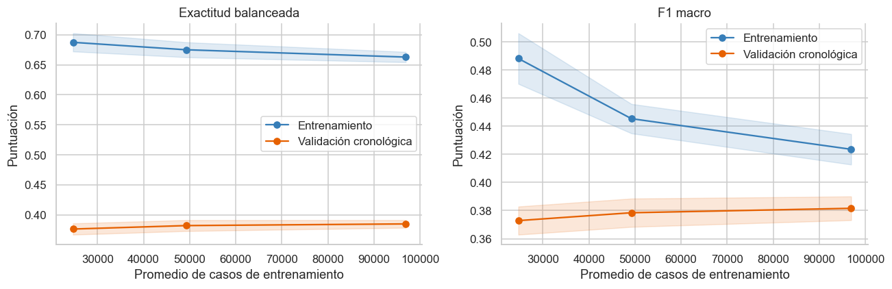
Entre 50 % y 100 % de establecimientos, la exactitud balanceada media de validación cambia +0.0028. Con todos los establecimientos disponibles, la brecha media entrenamiento–validación es 0.2777. La curva permite valorar la tendencia dentro del rango observado; no demuestra que añadir filas de los mismos establecimientos tenga el mismo beneficio que incorporar establecimientos nuevos. Tampoco garantiza mejoras fuera de este periodo ni resuelve la escasez de fallecimientos.
La interpretación cuantitativa de la curva se genera a partir de los ajustes cronológicos anteriores. La brecha entrenamiento–validación y la tendencia se valoran sin modificar el modelo.
16. Evaluación en la reserva#
Se evalúan LogisticRegression y DummyClassifier sobre la reserva: 127.391 casos de octubre–diciembre en establecimientos que no participaron en el desarrollo. Las predicciones provienen del ajuste final con todo el desarrollo (enero–septiembre); la reserva no se usó para elegir variables, hiperparámetros ni umbrales.
Se reportan exactitud, exactitud balanceada, F1 macro, ROC AUC macro (uno contra el resto), métricas por clase y matrices de confusión. Death tiene solo 39 casos, cada uno en un establecimiento distinto, por lo que su sensibilidad es imprecisa y se interpreta con cautela. Las métricas globales están dominadas por las tres clases frecuentes.
predictions=np.load(CACHE_DIR/'holdout_predictions.npz',allow_pickle=False)
y_test=predictions['y']
probabilities={'LogisticRegression':predictions['lr'],'DummyClassifier':predictions['dummy']}
assert len(y_test)==holdout_rows and set(y_test)=={1,2,3,4}
scores=pd.DataFrame(evaluation['holdout_metrics']).rename(index=METRIC_LABELS)
display(scores)
reports=[]
for model,report in evaluation['classification_reports'].items():
for label in [1,2,3,4]:
r=report[str(label)]
reports.append({'Modelo':model,'Resultado':OUTCOMES[label],'Precisión':r['precision'],
'Sensibilidad':r['recall'],'F1':r['f1-score'],'Casos':int(r['support'])})
display(pd.DataFrame(reports))
fig,axes=plt.subplots(2,2,figsize=(14,10))
for row,model in enumerate(probabilities):
cm=np.array(evaluation['confusion_matrices'][model])
labels=list(OUTCOMES.values())
sns.heatmap(cm,annot=True,fmt='d',cmap='Blues',xticklabels=labels,yticklabels=labels,ax=axes[row,0])
sns.heatmap(cm/cm.sum(axis=1,keepdims=True)*100,annot=True,fmt='.1f',vmin=0,vmax=100,cmap='Blues',
xticklabels=labels,yticklabels=labels,ax=axes[row,1],cbar_kws={'label':'Porcentaje dentro de la clase real'})
for col,title in enumerate(['Conteos','Normalización por clase real (%)']):
axes[row,col].set(title=model+': '+title,xlabel='Resultado predicho',ylabel='Resultado observado')
axes[row,col].tick_params(axis='x',rotation=35)
plt.tight_layout();plt.show()
death=evaluation['classification_reports']['LogisticRegression']['1']
display(Markdown(f'En la reserva hay **{int(death["support"])} casos Death**, distribuidos en '
f'**{evaluation["test_death_groups"]} establecimientos**. LogisticRegression obtiene precisión '
f'**{100*death["precision"]:.3f} %**, sensibilidad **{100*death["recall"]:.2f} %** y F1 **{death["f1-score"]:.4f}** para esta clase. '
f'El intervalo Wilson del 95 % para sensibilidad es {evaluation["death_sensitivity_wilson_ci95"]}. La métrica es imprecisa con este soporte; no demuestra una capacidad fiable para detectar fallecimientos. No se elimina Death ni se agrupa con otra clase para mejorar las métricas.'))
| LogisticRegression | DummyClassifier | |
|---|---|---|
| Exactitud | 0.523797 | 0.362420 |
| Precisión ponderada | 0.545451 | 0.131348 |
| Sensibilidad ponderada | 0.523797 | 0.362420 |
| F1 ponderado | 0.528647 | 0.192816 |
| F1 macro | 0.396591 | 0.133006 |
| Exactitud balanceada | 0.401928 | 0.250000 |
| ROC AUC macro (uno contra el resto) | 0.693339 | 0.500000 |
| Precisión promedio macro (uno contra el resto) | 0.436582 | 0.250000 |
| Brier multiclase (menor es mejor) | 0.583329 | 0.664404 |
| Pérdida logarítmica (menor es mejor) | 1.000859 | 1.097284 |
| Modelo | Resultado | Precisión | Sensibilidad | F1 | Casos | |
|---|---|---|---|---|---|---|
| 0 | LogisticRegression | Fallecimiento (Death) | 0.000333 | 0.025641 | 0.000657 | 39 |
| 1 | LogisticRegression | Días de ausencia | 0.600472 | 0.435725 | 0.505002 | 46169 |
| 2 | LogisticRegression | Traslado / restricción | 0.477608 | 0.561709 | 0.516256 | 37231 |
| 3 | LogisticRegression | Otro caso registrable | 0.545609 | 0.584638 | 0.564450 | 43952 |
| 4 | DummyClassifier | Fallecimiento (Death) | 0.000000 | 0.000000 | 0.000000 | 39 |
| 5 | DummyClassifier | Días de ausencia | 0.362420 | 1.000000 | 0.532024 | 46169 |
| 6 | DummyClassifier | Traslado / restricción | 0.000000 | 0.000000 | 0.000000 | 37231 |
| 7 | DummyClassifier | Otro caso registrable | 0.000000 | 0.000000 | 0.000000 | 43952 |
C:\Users\Usuario\AppData\Local\Temp\ipykernel_47692\3774106759.py:104: UserWarning: The figure layout has changed to tight
figure.tight_layout()
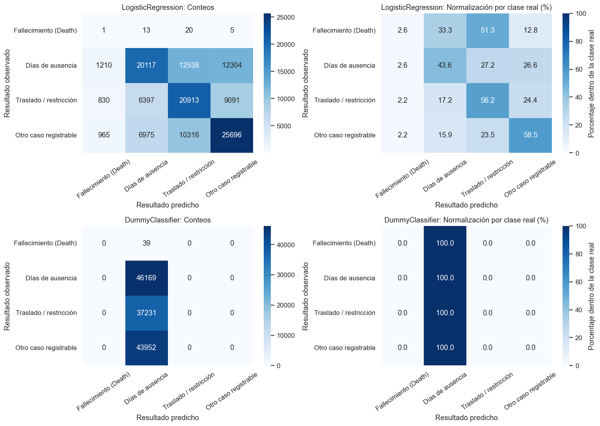
En la reserva hay 39 casos Death, distribuidos en 39 establecimientos. LogisticRegression obtiene precisión 0.033 %, sensibilidad 2.56 % y F1 0.0007 para esta clase. El intervalo Wilson del 95 % para sensibilidad es [0.004540703100990098, 0.13180990169850076]. La métrica es imprecisa con este soporte; no demuestra una capacidad fiable para detectar fallecimientos. No se elimina Death ni se agrupa con otra clase para mejorar las métricas.
17. Curvas ROC y precisión–sensibilidad multiclase#
Cada panel considera una clase positiva frente a las otras tres. Las curvas ROC pueden parecer favorables cuando hay muchos negativos; para Death debe prestarse especial atención a precisión–sensibilidad y AP. La referencia de AP sin información es la prevalencia de cada clase. AP es precisión promedio escalonada y no el área trapezoidal de la curva PR.
El panel PR de Death usa escala logarítmica en precisión para hacer visible su prevalencia muy baja; los puntos de precisión cero no son representables en esa escala. Los demás paneles conservan escala lineal.
fig,axes=plt.subplots(2,2,figsize=(11,9))
ap_rows=[]
for k,ax in enumerate(axes.flat):
label=k+1; binary=(y_test==label)
for model,p in probabilities.items():
fpr,tpr,_=roc_curve(binary,p[:,k])
auc=roc_auc_score(binary,p[:,k])
ax.plot(fpr,tpr,label=f'{model}: AUC={auc:.3f}')
ap_rows.append({'Modelo':model,'Resultado':OUTCOMES[label],
'ROC AUC OvR':auc,'AP OvR':average_precision_score(binary,p[:,k]),
'Prevalencia':binary.mean()})
ax.set(title=OUTCOMES[label],xlabel='Tasa de falsos positivos',ylabel='Sensibilidad')
ax.legend(fontsize=8)
fig.suptitle('Curvas ROC: una clase frente al resto',y=1.02)
plt.tight_layout();plt.show()
display(pd.DataFrame(ap_rows))
fig,axes=plt.subplots(2,2,figsize=(11,9))
for k,ax in enumerate(axes.flat):
binary=(y_test==k+1)
precision,recall,_=precision_recall_curve(binary,probabilities['LogisticRegression'][:,k])
ap=average_precision_score(binary,probabilities['LogisticRegression'][:,k])
ax.plot(recall,precision,label=f'LogisticRegression: AP={ap:.4f}')
ax.axhline(binary.mean(),linestyle='--',color='gray',label=f'DummyClassifier: AP={binary.mean():.4f}')
ax.set(title=OUTCOMES[k+1],xlabel='Sensibilidad',ylabel='Precisión',xlim=(0,1),ylim=(0,1.03))
if k==0:
ax.set_yscale('log')
ax.set_ylim(1e-5,1.03)
ax.set_ylabel('Precisión (escala logarítmica)')
ax.legend(fontsize=8)
fig.suptitle('Curvas precisión–sensibilidad: una clase frente al resto',y=1.02)
plt.tight_layout();plt.show()
C:\Users\Usuario\AppData\Local\Temp\ipykernel_47692\3774106759.py:104: UserWarning: The figure layout has changed to tight
figure.tight_layout()
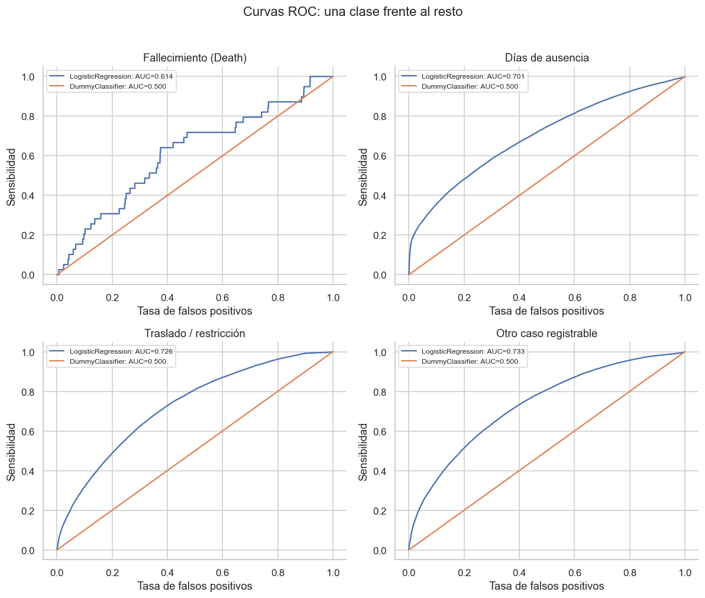
| Modelo | Resultado | ROC AUC OvR | AP OvR | Prevalencia | |
|---|---|---|---|---|---|
| 0 | LogisticRegression | Fallecimiento (Death) | 0.613588 | 0.000504 | 0.000306 |
| 1 | DummyClassifier | Fallecimiento (Death) | 0.500000 | 0.000306 | 0.000306 |
| 2 | LogisticRegression | Días de ausencia | 0.700761 | 0.625345 | 0.362420 |
| 3 | DummyClassifier | Días de ausencia | 0.500000 | 0.362420 | 0.362420 |
| 4 | LogisticRegression | Traslado / restricción | 0.725560 | 0.518257 | 0.292258 |
| 5 | DummyClassifier | Traslado / restricción | 0.500000 | 0.292258 | 0.292258 |
| 6 | LogisticRegression | Otro caso registrable | 0.733447 | 0.602221 | 0.345017 |
| 7 | DummyClassifier | Otro caso registrable | 0.500000 | 0.345017 | 0.345017 |
C:\Users\Usuario\AppData\Local\Temp\ipykernel_47692\3774106759.py:104: UserWarning: The figure layout has changed to tight
figure.tight_layout()
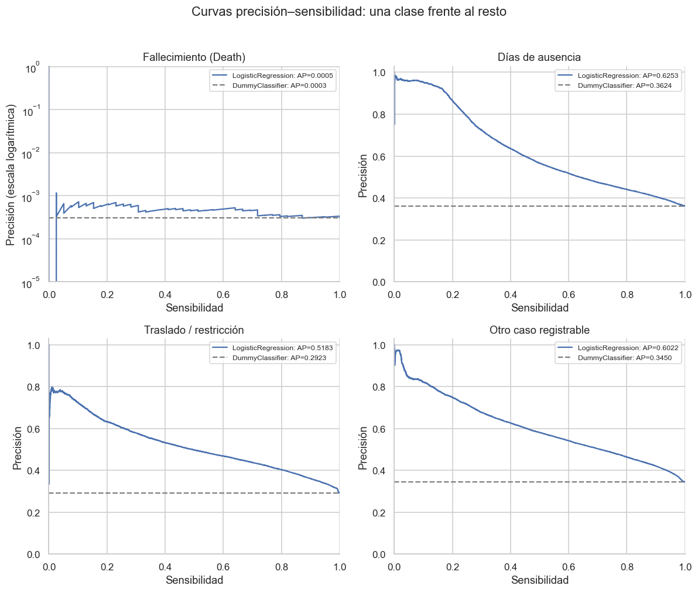
18. Incertidumbre condicionada al periodo#
Bootstrap pareado de establecimientos completos: 1.000 réplicas para métricas de decisiones y 200 para AUC por costo. Los intervalos están condicionados al trimestre observado y a los modelos ajustados; no capturan incertidumbre del entrenamiento ni choques comunes de calendario. Para sensibilidad de Death se muestra el intervalo score de Wilson del 95 % Wilson (1927). No existe un mínimo universal de casos positivos: el diseño debe fijar la precisión deseada y planificar el número de positivos con una distribución binomial Flahault et al. (2005). Como referencia de planificación, 39 positivos darían aproximadamente ±15 puntos porcentuales si la sensibilidad verdadera estuviera cerca del 50 %; no es un umbral impuesto por el curso ni garantiza una conclusión precisa. En esta prueba hay 39 empresas distintas con un fallecimiento cada una; el intervalo observado se interpreta según la métrica calculada, no como evidencia de fiabilidad.
intervals=pd.DataFrame(evaluation['bootstrap']['intervals'])
intervals['point']=[evaluation['holdout_metrics'][r.model][r.metric] for r in intervals.itertuples()]
intervals['metric']=intervals.metric.map(METRIC_LABELS)
display(intervals[['model','metric','point','lower','upper','replicates']].rename(columns={
'model':'Modelo','metric':'Métrica','point':'Estimación','lower':'Límite inferior 95 %','upper':'Límite superior 95 %','replicates':'Réplicas'}))
paired=pd.DataFrame(evaluation['bootstrap']['paired_differences'])
paired['point']=[evaluation['holdout_metrics']['LogisticRegression'][m]-evaluation['holdout_metrics']['DummyClassifier'][m] for m in paired.metric]
paired['metric']=paired.metric.map(METRIC_LABELS)
display(paired[['metric','point','lower','upper','replicates']].rename(columns={
'metric':'Métrica','point':'Diferencia LR − Dummy','lower':'Límite inferior 95 %','upper':'Límite superior 95 %','replicates':'Réplicas'}))
print('Réplicas descartadas por ausencia de clase:',evaluation['bootstrap']['omitted_replicates'])
print('Semilla del bootstrap:',evaluation['bootstrap']['seed'])
| Modelo | Métrica | Estimación | Límite inferior 95 % | Límite superior 95 % | Réplicas | |
|---|---|---|---|---|---|---|
| 0 | DummyClassifier | Exactitud | 0.362420 | 0.356158 | 0.368923 | 1000 |
| 1 | DummyClassifier | Exactitud balanceada | 0.250000 | 0.250000 | 0.250000 | 1000 |
| 2 | DummyClassifier | F1 macro | 0.133006 | 0.131311 | 0.134749 | 1000 |
| 3 | DummyClassifier | ROC AUC macro (uno contra el resto) | 0.500000 | 0.500000 | 0.500000 | 200 |
| 4 | LogisticRegression | Exactitud | 0.523797 | 0.517645 | 0.530388 | 1000 |
| 5 | LogisticRegression | Exactitud balanceada | 0.401928 | 0.392132 | 0.416027 | 1000 |
| 6 | LogisticRegression | F1 macro | 0.396591 | 0.392052 | 0.401538 | 1000 |
| 7 | LogisticRegression | ROC AUC macro (uno contra el resto) | 0.693339 | 0.671020 | 0.714740 | 200 |
| Métrica | Diferencia LR − Dummy | Límite inferior 95 % | Límite superior 95 % | Réplicas | |
|---|---|---|---|---|---|
| 0 | Exactitud | 0.161377 | 0.152363 | 0.171063 | 1000 |
| 1 | Exactitud balanceada | 0.151928 | 0.142132 | 0.166027 | 1000 |
| 2 | F1 macro | 0.263585 | 0.258663 | 0.268808 | 1000 |
| 3 | ROC AUC macro (uno contra el resto) | 0.193339 | 0.171020 | 0.214740 | 200 |
Réplicas descartadas por ausencia de clase: 0
Semilla del bootstrap: 142
18.1 Sensibilidad: empresas presentes en ambas particiones#
Las predicciones de prueba ya calculadas se separan según si la empresa (EIN) tiene establecimientos en el desarrollo (sección 11.1). No se reajusta nada: se comprueba si la dependencia a nivel empresa infla el desempeño.
import warnings
from sklearn.metrics import accuracy_score, balanced_accuracy_score, f1_score
shared_mask = test_shared_firm.reindex(predictions['case_ids']).fillna(False).to_numpy(dtype=bool)
sensitivity_rows = []
for subset, mask in [('Empresa con establecimientos en desarrollo', shared_mask), ('Empresa sin establecimientos en desarrollo o sin EIN válido', ~shared_mask)]:
for model, p in probabilities.items():
predicted = np.asarray([1, 2, 3, 4])[p[mask].argmax(axis=1)]
with warnings.catch_warnings():
warnings.simplefilter('ignore')
sensitivity_rows.append({'Subconjunto': subset, 'Modelo': model, 'Casos': int(mask.sum()), 'Fallecimientos': int((y_test[mask] == 1).sum()),
'Exactitud': accuracy_score(y_test[mask], predicted),
'Exactitud balanceada (clases presentes)': balanced_accuracy_score(y_test[mask], predicted),
'F1 macro (4 clases)': f1_score(y_test[mask], predicted, labels=[1, 2, 3, 4], average='macro', zero_division=0)})
firm_sensitivity = pd.DataFrame(sensitivity_rows)
display(firm_sensitivity)
lr_rows = firm_sensitivity[firm_sensitivity.Modelo.eq('LogisticRegression')].set_index('Subconjunto')
gap = lr_rows['Exactitud balanceada (clases presentes)'].iloc[0] - lr_rows['Exactitud balanceada (clases presentes)'].iloc[1]
display(Markdown(
f"**Interpretación.** La diferencia de exactitud balanceada entre casos de empresas compartidas y no compartidas es **{gap:+.3f}**. "
+ ("Es pequeña frente a la mejora sobre la referencia trivial (≈0,15), así que la dependencia a nivel empresa no explica el resultado principal. " if abs(gap) < 0.05 else
"No es despreciable: parte del desempeño puede deberse a prácticas de registro compartidas dentro de una empresa, y el resultado principal debe leerse con esa cautela. ")
+ "La comparación es descriptiva: ambos subconjuntos difieren también en sector y tamaño."))
| Subconjunto | Modelo | Casos | Fallecimientos | Exactitud | Exactitud balanceada (clases presentes) | F1 macro (4 clases) | |
|---|---|---|---|---|---|---|---|
| 0 | Empresa con establecimientos en desarrollo | LogisticRegression | 66332 | 14 | 0.518875 | 0.388769 | 0.387092 |
| 1 | Empresa con establecimientos en desarrollo | DummyClassifier | 66332 | 14 | 0.334047 | 0.250000 | 0.125201 |
| 2 | Empresa sin establecimientos en desarrollo o s... | LogisticRegression | 61059 | 25 | 0.529144 | 0.399887 | 0.393684 |
| 3 | Empresa sin establecimientos en desarrollo o s... | DummyClassifier | 61059 | 25 | 0.393243 | 0.250000 | 0.141125 |
Interpretación. La diferencia de exactitud balanceada entre casos de empresas compartidas y no compartidas es -0.011. Es pequeña frente a la mejora sobre la referencia trivial (≈0,15), así que la dependencia a nivel empresa no explica el resultado principal. La comparación es descriptiva: ambos subconjuntos difieren también en sector y tamaño.
19. Calibración: diagnóstico, sin reajustar probabilidades#
Se inspeccionan curvas de confiabilidad OvR con hasta diez grupos de probabilidades por cuantiles. También se reportan Brier multiclase y pérdida logarítmica. Las probabilidades de la regresión con pesos de clase corresponden a un objetivo reponderado y pueden sobreestimar clases raras respecto de su frecuencia natural. Una discriminación superior no implica probabilidades bien calibradas. No se ajusta ningún calibrador con la reserva.
fig,axes=plt.subplots(2,2,figsize=(11,9))
for k,ax in enumerate(axes.flat):
for model,p in probabilities.items():
observed,estimated=calibration_curve(y_test==k+1,p[:,k],n_bins=10,strategy='quantile')
ax.plot(estimated,observed,'o-',label=model)
ax.plot([0,1],[0,1],'--',color='gray',label='Calibración ideal')
ax.set(title=OUTCOMES[k+1],xlabel='Probabilidad media estimada',ylabel='Fracción positiva observada',xlim=(0,1),ylim=(0,1))
ax.legend(fontsize=8)
plt.tight_layout();plt.show()
display(scores.loc[[METRIC_LABELS['brier_multiclass'],METRIC_LABELS['log_loss']]])
display(Markdown(f'Brier multiclase: LR **{evaluation["holdout_metrics"]["LogisticRegression"]["brier_multiclass"]:.4f}**, Dummy **{evaluation["holdout_metrics"]["DummyClassifier"]["brier_multiclass"]:.4f}**. Pérdida logarítmica: LR **{evaluation["holdout_metrics"]["LogisticRegression"]["log_loss"]:.4f}**, Dummy **{evaluation["holdout_metrics"]["DummyClassifier"]["log_loss"]:.4f}**. Menor es mejor; mejora en discriminación no garantiza mejor calibración.'))
C:\Users\Usuario\AppData\Local\Temp\ipykernel_47692\3774106759.py:104: UserWarning: The figure layout has changed to tight
figure.tight_layout()
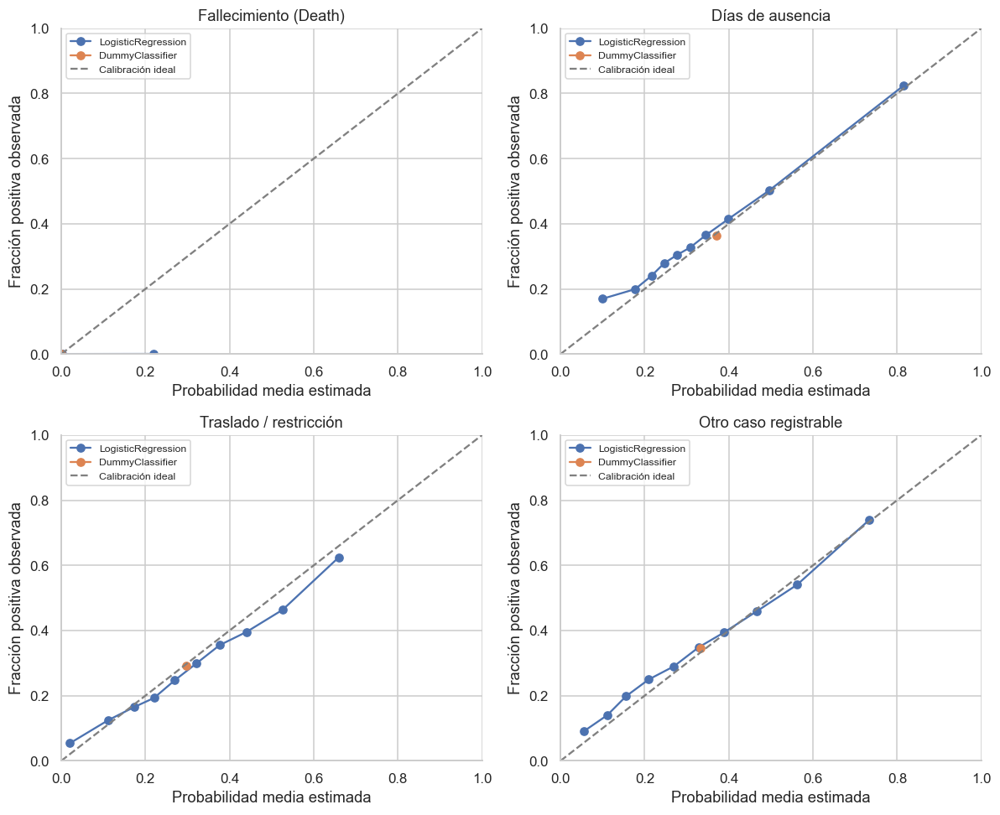
| LogisticRegression | DummyClassifier | |
|---|---|---|
| Brier multiclase (menor es mejor) | 0.583329 | 0.664404 |
| Pérdida logarítmica (menor es mejor) | 1.000859 | 1.097284 |
Brier multiclase: LR 0.5833, Dummy 0.6644. Pérdida logarítmica: LR 1.0009, Dummy 1.0973. Menor es mejor; mejora en discriminación no garantiza mejor calibración.
20. Interpretación de coeficientes multinomiales#
Se interpretan contrastes entre categorías de un mismo predictor, manteniendo los demás fijos. Para la clase k frente a «Otro caso registrable», el cambio de logaritmo de posibilidades al pasar de la categoría b a la a es:
(beta[k,a] - beta[4,a]) - (beta[k,b] - beta[4,b]).
Su exponencial es una razón de posibilidades relativa dentro del modelo. Esta comparación evita interpretar un indicador one-hot aislado como si las demás categorías del mismo predictor pudieran permanecer invariables. Se conserva la regularización y la ponderación balanceada; no se presentan intervalos inferenciales de los coeficientes. Las asociaciones no son efectos causales, pueden reflejar confusión y prácticas de reporte, y los coeficientes de Death son especialmente inestables. No se realiza selección de variables a partir de esta tabla.
final_model=joblib.load(CACHE_DIR/'final_lr.joblib')['model']
coefficient=pd.read_csv(CACHE_DIR/'coefficients.csv',index_col=0)
coefficient.columns=coefficient.columns.astype(int)
contrasts=[('type_of_incident','3','1','Afección respiratoria frente a lesión'),
('type_of_incident','5','1','Pérdida auditiva frente a lesión'),
('soc_code','29-1141','53-7062','Enfermería profesional frente a movimiento manual de materiales'),
('naics_code','622110','493110','Hospitales generales frente a almacenamiento general')]
rows=[]
for field,a,b,label in contrasts:
ca,cb=f'{field}_{a}',f'{field}_{b}'
if ca not in coefficient.index or cb not in coefficient.index:
print('Contraste no disponible en la codificación:',field,a,b);continue
for k in [1,2,3]:
delta=float((coefficient.loc[ca,k]-coefficient.loc[ca,4])-(coefficient.loc[cb,k]-coefficient.loc[cb,4]))
rows.append({'Predictor':field,'Comparación':label,'Clase frente a otro caso registrable':OUTCOMES[k],
'Cambio en logaritmo de posibilidades':delta,'Razón de posibilidades relativa':np.exp(delta)})
display(pd.DataFrame(rows))
| Predictor | Comparación | Clase frente a otro caso registrable | Cambio en logaritmo de posibilidades | Razón de posibilidades relativa | |
|---|---|---|---|---|---|
| 0 | type_of_incident | Afección respiratoria frente a lesión | Fallecimiento (Death) | 3.802241 | 44.801476 |
| 1 | type_of_incident | Afección respiratoria frente a lesión | Días de ausencia | 2.937161 | 18.862224 |
| 2 | type_of_incident | Afección respiratoria frente a lesión | Traslado / restricción | -1.146538 | 0.317735 |
| 3 | type_of_incident | Pérdida auditiva frente a lesión | Fallecimiento (Death) | -6.005091 | 0.002466 |
| 4 | type_of_incident | Pérdida auditiva frente a lesión | Días de ausencia | -1.941407 | 0.143502 |
| 5 | type_of_incident | Pérdida auditiva frente a lesión | Traslado / restricción | -1.932880 | 0.144731 |
| 6 | soc_code | Enfermería profesional frente a movimiento man... | Fallecimiento (Death) | -3.596800 | 0.027411 |
| 7 | soc_code | Enfermería profesional frente a movimiento man... | Días de ausencia | -0.728608 | 0.482580 |
| 8 | soc_code | Enfermería profesional frente a movimiento man... | Traslado / restricción | -0.612190 | 0.542162 |
| 9 | naics_code | Hospitales generales frente a almacenamiento g... | Fallecimiento (Death) | 0.449517 | 1.567554 |
| 10 | naics_code | Hospitales generales frente a almacenamiento g... | Días de ausencia | -1.624328 | 0.197044 |
| 11 | naics_code | Hospitales generales frente a almacenamiento g... | Traslado / restricción | -2.235159 | 0.106975 |
21. Conclusiones y límites#
Qué se encontró.
Con estos datos, el problema es difícil. Con ocho predictores estructurados, la regresión logística supera con claridad a la referencia trivial en exactitud balanceada (0,40 frente a 0,25), F1 macro (0,40 frente a 0,13) y AUC macro (0,69 frente a 0,50), aunque su desempeño es moderado. El resultado es razonable: una exactitud de 80–90 % habría hecho sospechar una fuga de información, y aquí es de 52 % (véase la nota crítica más abajo).
La señal proviene del lugar de trabajo y de la ocupación. La industria (NAICS; V de Cramér = 0,24), la ocupación (SOC; 0,21) y el tipo de incidente (0,15) concentran la mayor parte de la asociación con el resultado (sección 8.1). Las dos variables horarias casi no se relacionan con él, y el estado muestra una asociación débil.
El fallecimiento no puede detectarse de forma fiable. Es una clase extremadamente infrecuente: 39 casos en la prueba, cada uno en un establecimiento distinto. El modelo solo identifica 1 de ellos (sensibilidad de 2,6 %). Sus métricas se reportan con intervalos de Wilson, pero con tan pocos casos no permiten sostener una afirmación sobre el desempeño en esa clase.
La dependencia entre empresas no parece explicar el desempeño, pero persiste la dependencia temporal. Ningún establecimiento aparece a la vez en desarrollo y en prueba. Aun así, el 52 % de los casos de prueba pertenece a empresas con otros establecimientos en desarrollo (sección 11.1). Al separarlos (sección 18.1), el desempeño es prácticamente el mismo (exactitud balanceada de 0,389 frente a 0,400), aunque la comparación es descriptiva. Los errores diarios sí presentan autocorrelación (0,26 al primer rezago y 0,40 a los 14 días), de modo que los intervalos del bootstrap, condicionados al trimestre observado, deben leerse con cautela.
Qué decisiones se derivan del EDA. Los faltantes de SOC y de hora no son aleatorios (sección 5.2.1), por lo que se codifican como categoría explícita («Unknown») sin eliminar filas; los códigos nominales y las horas se codifican como categorías; se ponderan las clases por el desbalance; no se eliminan atípicos; y se valida hacia adelante en el tiempo y separando establecimientos (trazabilidad completa en la sección 12.1).
Límites. La clasificación es retrospectiva y no valida un sistema de alerta. El archivo contiene solo casos reportados, sin denominadores de exposición, así que no estima riesgo de lesión ni establece causas, y los resultados cubren un solo año. Los coeficientes (sección 20) son asociaciones, no efectos.
Siguiente paso. Probar modelos no lineales y la ingeniería de características candidata de la sección 12.1, evaluándolos solo con validación interna.
lr=evaluation['holdout_metrics']['LogisticRegression']; dummy=evaluation['holdout_metrics']['DummyClassifier']
display(Markdown(f'**Resultado del ajuste corregido:** exactitud balanceada **{lr["balanced_accuracy"]:.4f}** frente a **{dummy["balanced_accuracy"]:.4f}** de DummyClassifier; '
f'F1 macro **{lr["macro_f1"]:.4f}** frente a **{dummy["macro_f1"]:.4f}**; '
f'ROC AUC macro OvR **{lr["roc_auc_macro_ovr"]:.4f}** frente a **{dummy["roc_auc_macro_ovr"]:.4f}**. '
f'La exactitud es **{100*lr["accuracy"]:.2f} %** frente a **{100*dummy["accuracy"]:.2f} %**. '
f'El ajuste convergió en **{evaluation["final_fit"]["iterations"][0]} iteraciones**, sin seleccionar parámetros por estos resultados. '
'La comparación debe leerse junto con los intervalos agrupados, la validación interna, las métricas de Death y el diagnóstico de calibración.'))
Resultado del ajuste corregido: exactitud balanceada 0.4019 frente a 0.2500 de DummyClassifier; F1 macro 0.3966 frente a 0.1330; ROC AUC macro OvR 0.6933 frente a 0.5000. La exactitud es 52.38 % frente a 36.24 %. El ajuste convergió en 27 iteraciones, sin seleccionar parámetros por estos resultados. La comparación debe leerse junto con los intervalos agrupados, la validación interna, las métricas de Death y el diagnóstico de calibración.
max_univariate_auc = max(r['AUC macro OvR en agosto–septiembre'] for r in leak_audit)
frequent_auc = pd.DataFrame(ap_rows).query("Modelo == 'LogisticRegression' and Resultado != @OUTCOMES[1]")['ROC AUC OvR']
display(Markdown(
f"**Nota crítica del enunciado.** La exactitud en prueba es **{100*lr['accuracy']:.1f} %**, por debajo del umbral de alerta de 80–90 %, y la mejor señal univariable tiene AUC macro **{max_univariate_auc:.3f}**: no hay indicios de fuga. "
f"La exactitud supera la de la clase mayoritaria (Dummy, **{100*dummy['accuracy']:.1f} %**), y la mejora se mantiene en exactitud balanceada y F1 macro, que no se inflan con el desbalance. "
f"El problema no es trivial: con ocho predictores estructurados, el modelo lineal discrimina moderadamente las tres clases frecuentes (AUC uno contra el resto {frequent_auc.min():.2f}–{frequent_auc.max():.2f}) y prácticamente no detecta fallecimientos. "
"Queda margen para modelos no lineales y para la ingeniería de características de la sección 12.1 en el siguiente entregable."))
Nota crítica del enunciado. La exactitud en prueba es 52.4 %, por debajo del umbral de alerta de 80–90 %, y la mejor señal univariable tiene AUC macro 0.629: no hay indicios de fuga. La exactitud supera la de la clase mayoritaria (Dummy, 36.2 %), y la mejora se mantiene en exactitud balanceada y F1 macro, que no se inflan con el desbalance. El problema no es trivial: con ocho predictores estructurados, el modelo lineal discrimina moderadamente las tres clases frecuentes (AUC uno contra el resto 0.70–0.73) y prácticamente no detecta fallecimientos. Queda margen para modelos no lineales y para la ingeniería de características de la sección 12.1 en el siguiente entregable.
22. Reproducibilidad y análisis secundarios#
Entorno conda ml_venv (Python 3.9); sin ajuste de hiperparámetros. Los artefactos del protocolo grupo-tiempo se guardan separadamente de resultados históricos y llevan identidad de datos, código, parámetros, versiones y partición. El CSV original no se modifica. La ejecución genera la interpretación cuantitativa.
Los sectores se incluyen cuando tienen al menos 1.000 casos en desarrollo, criterio fijado sin consultar desempeño de prueba. Se muestran ambos modelos y soporte por clase. Una clase ausente impide AUC macro de cuatro clases; no se reemplaza por cero. Las diferencias sectoriales no se interpretan como rankings de seguridad.
from importlib.metadata import version
package_names=['numpy','pandas','scipy','scikit-learn','matplotlib','seaborn','joblib','threadpoolctl','ipython','statsmodels']
versions=pd.DataFrame({'Paquete':package_names,'Versión':[version(name) for name in package_names]})
display(versions)
print('Python:',sys.version.split()[0])
assert (DATA_PATH.stat().st_size,DATA_PATH.stat().st_mtime_ns)==raw_signature
assert hashlib.sha256(UTILS_PATH.read_bytes()).hexdigest()==utils_hash
assert evaluation['features']==baseline['features']
assert evaluation['train_rows']==len(train) and evaluation['test_rows']==holdout_rows
assert evaluation['group_overlap']==0 and evaluation['test_death_groups']==39
assert evaluation['train_rows']==len(train) and evaluation['test_rows']==holdout_rows
assert evaluation['group_overlap']==0 and evaluation['test_death_groups']==39
assert evaluation['final_fit']['converged'] and all(r['converged'] for r in evaluation['learning_curve'])
assert len(plt.get_fignums())==0
print('Verificación final: datos y utilidades originales sin cambios; protocolo cronológico y predictores verificados.')
sector_table=pd.DataFrame([{k:v for k,v in r.items() if k!='classification_report'} for r in evaluation['sector_analysis']])
display(Markdown('### Desempeño por sector industrial'))
display(sector_table)
display(Markdown('### Separación por establecimiento'))
print('Establecimientos de desarrollo:', evaluation['train_groups'])
print('Establecimientos de prueba:', evaluation['test_groups'])
print('Establecimientos compartidos:', evaluation['group_overlap'])
print('Filas excluidas por la combinación de empresa, tiempo y purga:', evaluation['excluded_2023_rows'])
print(evaluation['uncertainty_limit'])
display(Markdown('### Dependencia temporal de los errores'))
display(pd.Series(evaluation['daily_error_rate_acf'],name='ACF de la tasa diaria de error').to_frame())
daily_error=pd.read_csv(CACHE_DIR/'daily_test_errors.csv',parse_dates=['date'])
fig,ax=plt.subplots(figsize=(12,4))
ax.plot(daily_error.date,daily_error['mean'])
ax.set(title='Tasa diaria de error en el trimestre de prueba',xlabel='Fecha del incidente',ylabel='Proporción de errores')
plt.tight_layout();plt.show()
display(Markdown('Las diferencias entre sectores se interpretan junto con soporte y los intervalos agrupados. No prueban diferencias causales ni riesgo de sufrir una lesión. La autocorrelación diaria es descriptiva y puede reflejar cambios de composición.'))
display(Markdown('### Deriva descriptiva entre periodos de desarrollo'))
drift=[]
for field in baseline['features']:
z=feature_view[field].astype(object).fillna('Unknown').astype(str)
early=z.loc[train.incident_date.lt('2023-04-01')].value_counts(normalize=True)
late=z.loc[train.incident_date.ge('2023-07-01')].value_counts(normalize=True)
categories=early.index.union(late.index)
drift.append({'Predictor':field,'Distancia de variación total Q1–Q3':float(.5*(early.reindex(categories,fill_value=0)-late.reindex(categories,fill_value=0)).abs().sum())})
display(pd.DataFrame(drift))
display(Markdown('La deriva se calcula dentro del desarrollo. Cambios en composición no demuestran cambios en la relación causal ni concept drift por sí solos. La publicación de un solo año limita conclusiones sobre ciclos anuales.'))
| Paquete | Versión | |
|---|---|---|
| 0 | numpy | 1.25.2 |
| 1 | pandas | 2.1.0 |
| 2 | scipy | 1.11.2 |
| 3 | scikit-learn | 1.3.0 |
| 4 | matplotlib | 3.7.2 |
| 5 | seaborn | 0.12.2 |
| 6 | joblib | 1.3.2 |
| 7 | threadpoolctl | 3.2.0 |
| 8 | ipython | 8.15.0 |
| 9 | statsmodels | 0.14.0 |
Python: 3.9.25
Verificación final: datos y utilidades originales sin cambios; protocolo cronológico y predictores verificados.
Desempeño por sector industrial
| sector | model | rows | establishments | accuracy | balanced_accuracy_present_classes | macro_f1_four_classes | class_support | auc_macro_ovr | accuracy_ci95 | macro_f1_ci95 | bootstrap_replicates | |
|---|---|---|---|---|---|---|---|---|---|---|---|---|
| 0 | 62 | LogisticRegression | 39169 | 6114 | 0.623733 | 0.397587 | 0.400784 | {'1': 3, '2': 15437, '3': 6296, '4': 17433} | 0.724551 | [0.6139880544550576, 0.6340189635449669] | [0.39313819996026905, 0.4087321466086546] | 500 |
| 1 | 62 | DummyClassifier | 39169 | 6114 | 0.394113 | 0.250000 | 0.141349 | {'1': 3, '2': 15437, '3': 6296, '4': 17433} | 0.500000 | [0.3800436966999963, 0.4088725949398959] | [0.13769263144010585, 0.1451063056640785] | 500 |
| 2 | 48-49 | LogisticRegression | 26451 | 5639 | 0.546520 | 0.331647 | 0.316891 | {'1': 9, '2': 10554, '3': 11492, '4': 4396} | 0.659166 | [0.5314038582512246, 0.5596877097393728] | [0.3088271511401147, 0.32452082165650775] | 500 |
| 3 | 48-49 | DummyClassifier | 26451 | 5639 | 0.399002 | 0.250000 | 0.142602 | {'1': 9, '2': 10554, '3': 11492, '4': 4396} | 0.500000 | [0.3843362507892245, 0.4146719616291276] | [0.13881607320523476, 0.14656117206866578] | 500 |
| 4 | 44-45 | LogisticRegression | 24326 | 9702 | 0.463660 | 0.335969 | 0.334052 | {'1': 3, '2': 8750, '3': 6042, '4': 9531} | 0.608521 | [0.45584282331992243, 0.4718001541327423] | [0.32732289497214373, 0.34059172786290987] | 500 |
| 5 | 44-45 | DummyClassifier | 24326 | 9702 | 0.359697 | 0.250000 | 0.132271 | {'1': 3, '2': 8750, '3': 6042, '4': 9531} | 0.500000 | [0.35174310321319935, 0.36881690727046107] | [0.13010723030788449, 0.134721051921266] | 500 |
| 6 | 31-33 | LogisticRegression | 19678 | 6866 | 0.448724 | 0.339999 | 0.314570 | {'1': 12, '2': 5325, '3': 7260, '4': 7081} | 0.632741 | [0.43519781829790877, 0.46133719360562536] | [0.30515322083197227, 0.323241325443727] | 500 |
| 7 | 31-33 | DummyClassifier | 19678 | 6866 | 0.270607 | 0.250000 | 0.106487 | {'1': 12, '2': 5325, '3': 7260, '4': 7081} | 0.500000 | [0.25978552389207815, 0.28334489329371354] | [0.10310704439807225, 0.1103930967286367] | 500 |
| 8 | 42 | LogisticRegression | 4868 | 1630 | 0.470830 | 0.310878 | 0.309838 | {'1': 2, '2': 1950, '3': 1949, '4': 967} | 0.664860 | [0.4499721179382461, 0.48944663872054206] | [0.29369843952624514, 0.32297795971622417] | 500 |
| 9 | 42 | DummyClassifier | 4868 | 1630 | 0.400575 | 0.250000 | 0.143004 | {'1': 2, '2': 1950, '3': 1949, '4': 967} | 0.500000 | [0.37798765266507206, 0.4217108659589385] | [0.13715204627543304, 0.1483110138190617] | 500 |
| 10 | 72 | LogisticRegression | 3323 | 1035 | 0.409871 | 0.311416 | 0.290804 | {'1': 1, '2': 1006, '3': 1115, '4': 1201} | 0.661574 | [0.377159183350032, 0.4429917808545056] | [0.26771013008884825, 0.3101861217086304] | 500 |
| 11 | 72 | DummyClassifier | 3323 | 1035 | 0.302738 | 0.250000 | 0.116193 | {'1': 1, '2': 1006, '3': 1115, '4': 1201} | 0.500000 | [0.27412386002770733, 0.3295720046792889] | [0.10757347389991372, 0.12393911717018993] | 500 |
| 12 | 92 | LogisticRegression | 1695 | 439 | 0.432448 | 0.276111 | 0.268698 | {'1': 2, '2': 582, '3': 367, '4': 744} | 0.590858 | [0.39675179923524456, 0.4694316608416134] | [0.24128318006298366, 0.2971339858650358] | 500 |
| 13 | 92 | DummyClassifier | 1695 | 439 | 0.343363 | 0.250000 | 0.127800 | {'1': 2, '2': 582, '3': 367, '4': 744} | 0.500000 | [0.3036270140623999, 0.3924512811341688] | [0.11645470616901157, 0.14092076883666874] | 500 |
| 14 | 71 | LogisticRegression | 1997 | 176 | 0.551327 | 0.334130 | 0.322473 | {'1': 1, '2': 503, '3': 979, '4': 514} | 0.669892 | [0.4492550089074359, 0.5920667831521543] | [0.2742322815914928, 0.36508338274545427] | 500 |
| 15 | 71 | DummyClassifier | 1997 | 176 | 0.251878 | 0.250000 | 0.100600 | {'1': 1, '2': 503, '3': 979, '4': 514} | 0.500000 | [0.19875128548421522, 0.2954064686243581] | [0.08289907289106152, 0.11402067235507378] | 500 |
| 16 | 11 | LogisticRegression | 1788 | 716 | 0.360738 | 0.275508 | 0.274160 | {'1': 4, '2': 687, '3': 503, '4': 594} | 0.522197 | [0.33085894386135695, 0.39155840152075677] | [0.2507147375087263, 0.29641328016961066] | 500 |
| 17 | 11 | DummyClassifier | 1788 | 716 | 0.384228 | 0.250000 | 0.138788 | {'1': 4, '2': 687, '3': 503, '4': 594} | 0.500000 | [0.3476570990551001, 0.4212589311426156] | [0.1289857051194138, 0.14819920322553146] | 500 |
| 18 | 23 | LogisticRegression | 1576 | 860 | 0.337563 | 0.338085 | 0.270274 | {'1': 0, '2': 527, '3': 504, '4': 545} | NaN | [0.3072130627774255, 0.3673811697202843] | [0.24702189167476463, 0.2942821751078159] | 500 |
| 19 | 23 | DummyClassifier | 1576 | 860 | 0.334391 | 0.333333 | 0.125297 | {'1': 0, '2': 527, '3': 504, '4': 545} | NaN | [0.3038601221941529, 0.3610522244498489] | [0.11652327800060643, 0.1326371659053398] | 500 |
| 20 | 56 | LogisticRegression | 1027 | 452 | 0.330088 | 0.230465 | 0.258443 | {'1': 1, '2': 374, '3': 382, '4': 270} | 0.563437 | [0.28281742227092177, 0.3721324166976341] | [0.22116968125981845, 0.2901430155980524] | 500 |
| 21 | 56 | DummyClassifier | 1027 | 452 | 0.364167 | 0.250000 | 0.133476 | {'1': 1, '2': 374, '3': 382, '4': 270} | 0.500000 | [0.3253303447401336, 0.4076381912196459] | [0.1227355677833174, 0.14479500366321416] | 500 |
| 22 | 61 | LogisticRegression | 720 | 201 | 0.511111 | 0.259372 | 0.214757 | {'1': 1, '2': 190, '3': 152, '4': 377} | 0.409508 | [0.45793016259544755, 0.5696427262464998] | [0.18540534024405453, 0.2487124371760294] | 500 |
| 23 | 61 | DummyClassifier | 720 | 201 | 0.263889 | 0.250000 | 0.104396 | {'1': 1, '2': 190, '3': 152, '4': 377} | 0.500000 | [0.2096417682926829, 0.31714487936976854] | [0.08665428477438455, 0.12039099307487086] | 500 |
Separación por establecimiento
Establecimientos de desarrollo: 34029
Establecimientos de prueba: 34182
Establecimientos compartidos: 0
Filas excluidas por la combinación de empresa, tiempo y purga: 493465
Establishment bootstrap is conditional on the fixed quarter and fitted models; it does not cover common calendar shocks or training uncertainty.
Dependencia temporal de los errores
| ACF de la tasa diaria de error | |
|---|---|
| 1 | 0.259542 |
| 2 | 0.165501 |
| 7 | 0.313392 |
| 14 | 0.402683 |
C:\Users\Usuario\AppData\Local\Temp\ipykernel_47692\3774106759.py:104: UserWarning: The figure layout has changed to tight
figure.tight_layout()
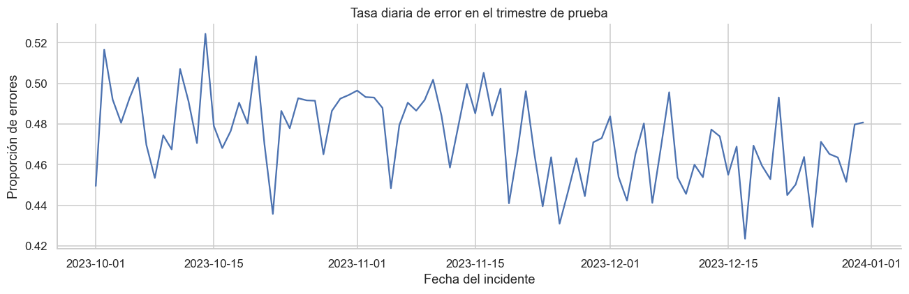
Las diferencias entre sectores se interpretan junto con soporte y los intervalos agrupados. No prueban diferencias causales ni riesgo de sufrir una lesión. La autocorrelación diaria es descriptiva y puede reflejar cambios de composición.
Deriva descriptiva entre periodos de desarrollo
| Predictor | Distancia de variación total Q1–Q3 | |
|---|---|---|
| 0 | state | 0.027941 |
| 1 | naics_code | 0.057515 |
| 2 | establishment_type | 0.012856 |
| 3 | soc_code | 0.038296 |
| 4 | type_of_incident | 0.018250 |
| 5 | time_unknown | 0.006887 |
| 6 | time_started_work_hour | 0.022089 |
| 7 | time_of_incident_hour | 0.016785 |
La deriva se calcula dentro del desarrollo. Cambios en composición no demuestran cambios en la relación causal ni concept drift por sí solos. La publicación de un solo año limita conclusiones sobre ciclos anuales.